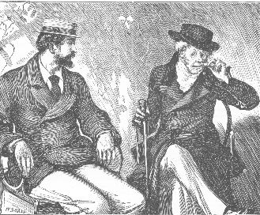

THE STORY here offered to the reader differs in one respect from the stories which have preceded it by the same hand. This time the fiction is founded on facts, and aspires to afford what help it may towards hastening the reform of certain abuses which have been too long suffered to exist among us unchecked.
As to the present scandalous condition of the Marriage Laws of the United Kingdom there can be no dispute. The Report of the Royal Commission appointed to examine the working of those laws, has supplied the solid foundation on which I have built my book. Such references to this high authority as may be necessary to convince the reader that I am not leading him astray, will be found collected in the [note at end of Chapter 20]. I have only to add that, while I write these lines, Parliament is bestirring itself to remedy the cruel abuses which are here exposed in the story of "Hester Dethridge." There is a prospect, at last, of lawfully establishing the right of a married woman, in England, to possess her own property, and to keep her own earnings. Beyond this, no attempt has been made by the Legislature, that I know of, to purify the corruptions which exist in the Marriage Laws of Great Britain and Ireland. The Royal Commissioners have called for State interference, in no uncertain voice--thus far, without prevailing on Parliament to make any reply.
As to the other social question which has found its way into these pages--the question of the influence of the present rage for muscular exercises on the health and morals of the rising generation of Englishmen--I do not disguise from myself that I am treading on delicate ground, and that certain persons will strongly resent what I have written on this head.
Although I have, here, no Royal Commission to appeal to, I submit, nevertheless, that I am still dealing with plain and producible facts. As to the physical results of the mania for muscular cultivation which has seized on us of late years, it is a fact that the opinions expressed in this book are the opinions of the medical profession in general--with the high authority of Mr. Skey at their head. And (if the medical evidence is to be disputed as evidence based on theory only) it is also a fact that the view taken by the doctors is a view which the experience of fathers in all parts of England can practically confirm by reference to the cases of their sons. This last new form of our "national eccentricity" has its victims to answer for--victims who are broken for life.
As to the moral results, I may be right or I may be wrong, in seeing as I do a connection between the recent unbridled development of physical cultivation in England, and the recent spread of grossness and brutality among certain classes of the English population. But, is it to be denied that the grossness and the brutality exist? and, more, that they have assumed formidable proportions among us of late years? We have become so shamelessly familiar with violence and outrage that we recognize them as a necessary ingredient in our social system, and class our savages as a representative part of our population, under the newly invented name of "Roughs." Public attention has been directed by hundreds of other writers to the dirty Rough in fustian. If the present writer had confined himself within those limits, he would have carried all his readers with him. But he is bold enough to direct attention to the washed Rough in broadcloth--and he must stand on his defense with readers who have not noticed this variety, or who, having noticed, prefer to ignore it.
The Rough with the clean skin and the good coat on his back, is easily traced through the various grades of English society, in the middle and the upper classes. To quote a few instances only. The medical division not long since diverted itself, on its return from a public amusement, by destroying house-property, extinguishing street lights, and terrifying the decent inhabitants of a London suburb. The military division--also, not long since--committed atrocities (in certain regiments) which forced the authorities at the Horse Guards to interfere. The mercantile division, only the other day, mobbed, hustled and violently ejected from the Stock Exchange an eminent foreign banker, who had been taken to see the place by one of its oldest and most respectable members. The University Division (at Oxford) hooted the Vice-Chancellor, the heads of colleges, and the visitors, out of doors, at the Commemoration of 1869--and have since broken into the Christchurch Library, and burnt the busts and works of sculpture which it contained. It is a fact that these outrages have been committed. It is a fact that the persons concerned in them are largely represented among the patrons, and sometimes among the heroes, of Athletic Sports. Is there no material here for the making of such a character as "Geoffrey Delamayn?" Have I drawn entirely on my imagination for the scene which takes place in the athletic house of assembly at the "Cock and Bottle," Putney? Is no protest needed, in the interests of civilization, against a revival of barbarism among us, which asserts itself to be a revival of manly virtue, and finds human stupidity actually dense enough to admit the claim?
Reverting, for one moment, before I close these prefatory words, to the question of Art, I hope the reader of these pages will find that the purpose of the story is always an integral part of the story itself. The foremost condition of success in a work of this sort, is that the fact and the fiction shall never be separable one from the other. I have wrought hard to reach this end, and I trust I have not wrought in vain.
W. C.
June, 1870.
Part the First.
THE VILLA AT HAMPSTEAD.
I.
ON a summer's morning, between thirty and forty years ago, two girls were crying bitterly in the cabin of an East Indian passenger ship, bound outward, from Gravesend to Bombay.
They were both of the same age--eighteen. They had both, from childhood upward, been close and dear friends at the same school. They were now parting for the first time--and parting, it might be, for life.
The name of one was Blanche. The name of the other was Anne.
Both were the children of poor parents, both had been pupil-teachers at the school; and both were destined to earn their own bread. Personally speaking, and socially speaking, these were the only points of resemblance between them.
Blanche was passably attractive and passably intelligent, and no more. Anne was rarely beautiful and rarely endowed. Blanche's parents were worthy people, whose first consideration was to secure, at any sacrifice, the future well-being of their child. Anne's parents were heartless and depraved. Their one idea, in connection with their daughter, was to speculate on her beauty, and to turn her abilities to profitable account.
The girls were starting in life under widely different conditions. Blanche was going to India, to be governess in the household of a Judge, under care of the Judge's wife. Anne was to wait at home until the first opportunity offered of sending her cheaply to Milan. There, among strangers, she was to be perfected in the actress's and the singer's art; then to return to England, and make the fortune of her family on the lyric stage.
Such were the prospects of the two as they sat together in the cabin of the Indiaman locked fast in each other's arms, and crying bitterly. The whispered farewell talk exchanged between them--exaggerated and impulsive as girls' talk is apt to be--came honestly, in each case, straight from the heart.
"Blanche! you may be married in India. Make your husband bring you back to England."
"Anne! you may take a dislike to the stage. Come out to India if you do."
"In England or out of England, married or not married, we will meet, darling--if it's years hence--with all the old love between us; friends who help each other, sisters who trust each other, for life! Vow it, Blanche!"
"I vow it, Anne!"
"With all your heart and soul?"
"With all my heart and soul!"
The sails were spread to the wind, and the ship began to move in the water. It was necessary to appeal to the captain's authority before the girls could be parted. The captain interfered gently and firmly. "Come, my dear," he said, putting his arm round Anne; "you won't mind me! I have got a daughter of my own." Anne's head fell on the sailor's shoulder. He put her, with his own hands, into the shore-boat alongside. In five minutes more the ship had gathered way; the boat was at the landing-stage--and the girls had seen the last of each other for many a long year to come.
This was in the summer of eighteen hundred and thirty-one.
Twenty-four years later--in the summer of eighteen hundred and fifty-five--there was a villa at Hampstead to be let, furnished.
The house was still occupied by the persons who desired to let it. On the evening on which this scene opens a lady and two gentlemen were seated at the dinner-table. The lady had reached the mature age of forty-two. She was still a rarely beautiful woman. Her husband, some years younger than herself, faced her at the table, sitting silent and constrained, and never, even by accident, looking at his wife. The third person was a guest. The husband's name was Vanborough. The guest's name was Kendrew.
It was the end of the dinner. The fruit and the wine were on the table. Mr. Vanborough pushed the bottles in silence to Mr. Kendrew. The lady of the house looked round at the servant who was waiting, and said, "Tell the children to come in."
The door opened, and a girl twelve years old entered, lending by the hand a younger girl of five. They were both prettily dressed in white, with sashes of the same shade of light blue. But there was no family resemblance between them. The elder girl was frail and delicate, with a pale, sensitive face. The younger was light and florid, with round red cheeks and bright, saucy eyes--a charming little picture of happiness and health.
Mr. Kendrew looked inquiringly at the youngest of the two girls.
"Here is a young lady," he said, "who is a total stranger to me."
"If you had not been a total stranger yourself for a whole year past," answered Mrs. Vanborough, "you would never have made that confession. This is little Blanche--the only child of the dearest friend I have. When Blanche's mother and I last saw each other we were two poor school-girls beginning the world. My friend went to India, and married there late in life. You may have heard of her husband--the famous Indian officer, Sir Thomas Lundie? Yes: 'the rich Sir Thomas,' as you call him. Lady Lundie is now on her way back to England, for the first time since she left it--I am afraid to say how many years since. I expected her yesterday; I expect her to-day--she may come at any moment. We exchanged promises to meet, in the ship that took her to India--'vows' we called them in the dear old times. Imagine how changed we shall find each other when we do meet again at last!"
"In the mean time," said Mr. Kendrew, "your friend appears to have sent you her little daughter to represent her? It's a long journey for so young a traveler."
"A journey ordered by the doctors in India a year since," rejoined Mrs. Vanborough. "They said Blanche's health required English air. Sir Thomas was ill at the time, and his wife couldn't leave him. She had to send the child to England, and who should she send her to but me? Look at her now, and say if the English air hasn't agreed with her! We two mothers, Mr. Kendrew, seem literally to live again in our children. I have an only child. My friend has an only child. My daughter is little Anne--as I was. My friend's daughter is little Blanche--as she was. And, to crown it all, those two girls have taken the same fancy to each other which we took to each other in the by-gone days at school. One has often heard of hereditary hatred. Is there such a thing as hereditary love as well?"
Before the guest could answer, his attention was claimed by the master of the house.
"Kendrew," said Mr. Vanborough, "when you have had enough of domestic sentiment, suppose you take a glass of wine?"
The words were spoken with undisguised contempt of tone and manner. Mrs. Vanborough's color rose. She waited, and controlled the momentary irritation. When she spoke to her husband it was evidently with a wish to soothe and conciliate him.
"I am afraid, my dear, you are not well this evening?"
"I shall be better when those children have done clattering with their knives and forks."
The girls were peeling fruit. The younger one went on. The elder stopped, and looked at her mother. Mrs. Vanborough beckoned to Blanche to come to her, and pointed toward the French window opening to the floor.
"Would you like to eat your fruit in the garden, Blanche?"
"Yes," said Blanche, "if Anne will go with me."
Anne rose at once, and the two girls went away together into the garden, hand in hand. On their departure Mr. Kendrew wisely started a new subject. He referred to the letting of the house.
"The loss of the garden will be a sad loss to those two young ladies," he said. "It really seems to be a pity that you should be giving up this pretty place."
"Leaving the house is not the worst of the sacrifice," answered Mrs. Vanborough. "If John finds Hampstead too far for him from London, of course we must move. The only hardship that I complain of is the hardship of having the house to let."
Mr. Vanborough looked across the table, as ungraciously as possible, at his wife.
"What have you to do with it?" he asked.
Mrs. Vanborough tried to clear the conjugal horizon by a smile.
"My dear John," she said, gently, "you forget that, while you are at business, I am here all day. I can't help seeing the people who come to look at the house. Such people!" she continued, turning to Mr. Kendrew. "They distrust every thing, from the scraper at the door to the chimneys on the roof. They force their way in at all hours. They ask all sorts of impudent questions--and they show you plainly that they don't mean to believe your answers, before you have time to make them. Some wretch of a woman says, 'Do you think the drains are right?'--and sniffs suspiciously, before I can say Yes. Some brute of a man asks, 'Are you quite sure this house is solidly built, ma'am?'--and jumps on the floor at the full stretch of his legs, without waiting for me to reply. Nobody believes in our gravel soil and our south aspect. Nobody wants any of our improvements. The moment they hear of John's Artesian well, they look as if they never drank water. And, if they happen to pass my poultry-yard, they instantly lose all appreciation of the merits of a fresh egg!"
Mr. Kendrew laughed. "I have been through it all in my time," he said. "The people who want to take a house are the born enemies of the people who want to let a house. Odd--isn't it, Vanborough?"
Mr. Vanborough's sullen humor resisted his friend as obstinately as it had resisted his wife.
"I dare say," he answered. "I wasn't listening."
This time the tone was almost brutal. Mrs. Vanborough looked at her husband with unconcealed surprise and distress.
"John!" she said. "What can be the matter with you? Are you in pain?"
"A man may be anxious and worried, I suppose, without being actually in pain."
"I am sorry to hear you are worried. Is it business?"
"Yes--business."
"Consult Mr. Kendrew."
"I am waiting to consult him."
Mrs. Vanborough rose immediately. "Ring, dear," she said, "when you want coffee." As she passed her husband she stopped and laid her hand tenderly on his forehead. "I wish I could smooth out that frown!" she whispered. Mr. Vanborough impatiently shook his head. Mrs. Vanborough sighed as she turned to the door. Her husband called to her before she could leave the room.
"Mind we are not interrupted!"
"I will do my best, John." She looked at Mr. Kendrew, holding the door open for her; and resumed, with an effort, her former lightness of tone. "But don't forget our 'born enemies!' Somebody may come, even at this hour of the evening, who wants to see the house."
The two gentlemen were left alone over their wine. There was a strong personal contrast between them. Mr. Vanborough was tall and dark--a dashing, handsome man; with an energy in his face which all the world saw; with an inbred falseness under it which only a special observer could detect. Mr. Kendrew was short and light--slow and awkward in manner, except when something happened to rouse him. Looking in his face, the world saw an ugly and undemonstrative little man. The special observer, penetrating under the surface, found a fine nature beneath, resting on a steady foundation of honor and truth.
Mr. Vanborough opened the conversation.
"If you ever marry," he said, "don't be such a fool, Kendrew, as I have been. Don't take a wife from the stage."
"If I could get such a wife as yours," replied the other, "I would take her from the stage to-morrow. A beautiful woman, a clever woman, a woman of unblemished character, and a woman who truly loves you. Man alive! what do you want more?"
"I want a great deal more. I want a woman highly connected and highly bred--a woman who can receive the best society in England, and open her husband's way to a position in the world."
"A position in the world!" cried Mr. Kendrew. "Here is a man whose father has left him half a million of money--with the one condition annexed to it of taking his father's place at the head of one of the greatest mercantile houses in England. And he talks about a position, as if he was a junior clerk in his own office! What on earth does your ambition see, beyond what your ambition has already got?"
Mr. Vanborough finished his glass of wine, and looked his friend steadily in the face.
"My ambition," he said, "sees a Parliamentary career, with a Peerage at the end of it--and with no obstacle in the way but my estimable wife."
Mr. Kendrew lifted his hand warningly. "Don't talk in that way," he said. "If you're joking--it's a joke I don't see. If you're in earnest--you force a suspicion on me which I would rather not feel. Let us change the subject."
"No! Let us have it out at once. What do you suspect?"
"I suspect you are getting tired of your wife."
"She is forty-two, and I am thirty-five; and I have been married to her for thirteen years. You know all that--and you only suspect I am tired of her. Bless your innocence! Have you any thing more to say?"
"If you force me to it, I take the freedom of an old friend, and I say you are not treating her fairly. It's nearly two years since you broke up your establishment abroad, and came to England on your father's death. With the exception of myself, and one or two other friends of former days, you have presented your wife to nobody. Your new position has smoothed the way for you into the best society. You never take your wife with you. You go out as if you were a single man. I have reason to know that you are actually believed to be a single man, among these new acquaintances of yours, in more than one quarter. Forgive me for speaking my mind bluntly--I say what I think. It's unworthy of you to keep your wife buried here, as if you were ashamed of her."
"I am ashamed of her."
"Vanborough!"
"Wait a little! you are not to have it all your own way, my good fellow. What are the facts? Thirteen years ago I fell in love with a handsome public singer, and married her. My father was angry with me; and I had to go and live with her abroad. It didn't matter, abroad. My father forgave me on his death-bed, and I had to bring her home again. It does matter, at home. I find myself, with a great career opening before me, tied to a woman whose relations are (as you well know) the lowest of the low. A woman without the slightest distinction of manner, or the slightest aspiration beyond her nursery and her kitchen, her piano and her books. Is that a wife who can help me to make my place in society?--who can smooth my way through social obstacles and political obstacles, to the House of Lords? By Jupiter! if ever there was a woman to be 'buried' (as you call it), that woman is my wife. And, what's more, if you want the truth, it's because I can't bury her here that I'm going to leave this house. She has got a cursed knack of making acquaintances wherever she goes. She'll have a circle of friends about her if I leave her in this neighborhood much longer. Friends who remember her as the famous opera-singer. Friends who will see her swindling scoundrel of a father (when my back is turned) coming drunk to the door to borrow money of her! I tell you, my marriage has wrecked my prospects. It's no use talking to me of my wife's virtues. She is a millstone round my neck, with all her virtues. If I had not been a born idiot I should have waited, and married a woman who would have been of some use to me; a woman with high connections--"
Mr. Kendrew touched his host's arm, and suddenly interrupted him.
"To come to the point," he said--"a woman like Lady Jane Parnell."
Mr. Vanborough started. His eyes fell, for the first time, before the eyes of his friend.
"What do you know about Lady Jane?" he asked.
"Nothing. I don't move in Lady Jane's world--but I do go sometimes to the opera. I saw you with her last night in her box; and I heard what was said in the stalls near me. You were openly spoken of as the favored man who was singled out from the rest by Lady Jane. Imagine what would happen if your wife heard that! You are wrong, Vanborough--you are in every way wrong. You alarm, you distress, you disappoint me. I never sought this explanation--but now it has come, I won't shrink from it. Reconsider your conduct; reconsider what you have said to me--or you count me no longer among your friends. No! I want no farther talk about it now. We are both getting hot--we may end in saying what had better have been left unsaid. Once more, let us change the subject. You wrote me word that you wanted me here to-day, because you needed my advice on a matter of some importance. What is it?"
Silence followed that question. Mr. Vanborough's face betrayed signs of embarrassment. He poured himself out another glass of wine, and drank it at a draught before he replied.
"It's not so easy to tell you what I want," he said, "after the tone you have taken with me about my wife."
Mr. Kendrew looked surprised.
"Is Mrs. Vanborough concerned in the matter?" he asked.
"Yes."
"Does she know about it?"
"No."
"Have you kept the thing a secret out of regard for her?"
"Yes."
"Have I any right to advise on it?"
"You have the right of an old friend."
"Then, why not tell me frankly what it is?"
There was another moment of embarrassment on Mr. Vanborough's part.
"It will come better," he answered, "from a third person, whom I expect here every minute. He is in possession of all the facts--and he is better able to state them than I am."
"Who is the person?"
"My friend, Delamayn."
"Your lawyer?"
"Yes--the junior partner in the firm of Delamayn, Hawke, and Delamayn. Do you know him?"
"I am acquainted with him. His wife's family were friends of mine before he married. I don't like him."
"You're rather hard to please to-day! Delamayn is a rising man, if ever there was one yet. A man with a career before him, and with courage enough to pursue it. He is going to leave the Firm, and try his luck at the Bar. Every body says he will do great things. What's your objection to him?"
"I have no objection whatever. We meet with people occasionally whom we dislike without knowing why. Without knowing why, I dislike Mr. Delamayn."
"Whatever you do you must put up with him this evening. He will be here directly."
He was there at that moment. The servant opened the door, and announced--"Mr. Delamayn."
Externally speaking, the rising solicitor, who was going to try his luck at the Bar, looked like a man who was going to succeed. His hard, hairless face, his watchful gray eyes, his thin, resolute lips, said plainly, in so many words, "I mean to get on in the world; and, if you are in my way, I mean to get on at your expense." Mr. Delamayn was habitually polite to every body--but he had never been known to say one unnecessary word to his dearest friend. A man of rare ability; a man of unblemished honor (as the code of the world goes); but not a man to be taken familiarly by the hand. You would never have borrowed money of him--but you would have trusted him with untold gold. Involved in private and personal troubles, you would have hesitated at asking him to help you. Involved in public and producible troubles, you would have said, Here is my man. Sure to push his way--nobody could look at him and doubt it--sure to push his way.
"Kendrew is an old friend of mine," said Mr. Vanborough, addressing himself to the lawyer. "Whatever you have to say to me you may say before him. Will you have some wine?"
"No--thank you."
"Have you brought any news?"
"Yes."
"Have you got the written opinions of the two barristers?"
"No."
"Why not?"
"'Because nothing of the sort is necessary. If the facts of the case are correctly stated there is not the slightest doubt about the law."
With that reply Mr. Delamayn took a written paper from his pocket, and spread it out on the table before him.
"What is that?" asked Mr. Vanborough.
"The case relating to your marriage."
Mr. Kendrew started, and showed the first tokens of interest in the proceedings which had escaped him yet. Mr. Delamayn looked at him for a moment, and went on.
"The case," he resumed, "as originally stated by you, and taken down in writing by our head-clerk."
Mr. Vanborough's temper began to show itself again.
"What have we got to do with that now?" he asked. "You have made your inquiries to prove the correctness of my statement--haven't you?"
"Yes."
"And you have found out that I am right?"
"I have found out that you are right--if the case is right. I wish to be sure that no mistake has occurred between you and the clerk. This is a very important matter. I am going to take the responsibility of giving an opinion which may be followed by serious consequences; and I mean to assure myself that the opinion is given on a sound basis, first. I have some questions to ask you. Don't be impatient, if you please. They won't take long."
He referred to the manuscript, and put the first question.
"You were married at Inchmallock, in Ireland, Mr. Vanborough, thirteen years since?"
"Yes."
"Your wife--then Miss Anne Silvester--was a Roman Catholic?"
"Yes."
"Her father and mother were Roman Catholics?"
"They were."
"Your father and mother were Protestants? and you were baptized and brought up in the Church of England?"
"All right!"
"Miss Anne Silvester felt, and expressed, a strong repugnance to marrying you, because you and she belonged to different religious communities?"
"She did."
"You got over her objection by consenting to become n Roman Catholic, like herself?"
"It was the shortest way with her and it didn't matter to me."
"You were formally received into the Roman Catholic Church?"
"I went through the whole ceremony."
"Abroad or at home?"
"Abroad."
"How long was it before the date of your marriage?"
"Six weeks before I was married."
Referring perpetually to the paper in his hand, Mr. Delamayn was especially careful in comparing that last answer with the answer given to the head-clerk.
"Quite right," he said, and went on with his questions.
"The priest who married you was one Ambrose Redman--a young man recently appointed to his clerical duties?"
"Yes."
"Did he ask if you were both Roman Catholics?"
"Yes."
"Did he ask any thing more?"
"No."
"Are you sure he never inquired whether you had both been Catholics for more than one year before you came to him to be married?"
"I am certain of it."
"He must have forgotten that part of his duty--or being only a beginner, he may well have been ignorant of it altogether. Did neither you nor the lady think of informing him on the point?"
"Neither I nor the lady knew there was any necessity for informing him."
Mr. Delamayn folded up the manuscript, and put it back in his pocket.
"Right," he said, "in every particular."
Mr. Vanborough's swarthy complexion slowly turned pale. He cast one furtive glance at Mr. Kendrew, and turned away again.
"Well," he said to the lawyer, "now for your opinion! What is the law?"
"The law," answered Mr. Delamayn, "is beyond all doubt or dispute. Your marriage with Miss Anne Silvester is no marriage at all."
Mr. Kendrew started to his feet.
"What do you mean?" he asked, sternly.
The rising solicitor lifted his eyebrows in polite surprise. If Mr. Kendrew wanted information, why should Mr. Kendrew ask for it in that way? "Do you wish me to go into the law of the case?" he inquired.
"I do."
Mr. Delamayn stated the law, as that law still stands--to the disgrace of the English Legislature and the English Nation.
"By the Irish Statute of George the Second," he said, "every marriage celebrated by a Popish priest between two Protestants, or between a Papist and any person who has been a Protestant within twelve months before the marriage, is declared null and void. And by two other Acts of the same reign such a celebration of marriage is made a felony on the part of the priest. The clergy in Ireland of other religious denominations have been relieved from this law. But it still remains in force so far as the Roman Catholic priesthood is concerned."
"Is such a state of things possible in the age we live in!" exclaimed Mr. Kendrew.
Mr. Delamayn smiled. He had outgrown the customary illusions as to the age we live in.
"There are other instances in which the Irish marriage-law presents some curious anomalies of its own," he went on. "It is felony, as I have just told you, for a Roman Catholic priest to celebrate a marriage which may be lawfully celebrated by a parochial clergyman, a Presbyterian minister, and a Non-conformist minister. It is also felony (by another law) on the part of a parochial clergyman to celebrate a marriage that may be lawfully celebrated by a Roman Catholic priest. And it is again felony (by yet another law) for a Presbyterian minister and a Non-conformist minister to celebrate a marriage which may be lawfully celebrated by a clergyman of the Established Church. An odd state of things. Foreigners might possibly think it a scandalous state of things. In this country we don't appear to mind it. Returning to the present case, the results stand thus: Mr. Vanborough is a single man; Mrs. Vanborough is a single woman; their child is illegitimate, and the priest, Ambrose Redman, is liable to be tried, and punished, as a felon, for marrying them."
"An infamous law!" said Mr. Kendrew.
"It is the law," returned Mr. Delamayn, as a sufficient answer to him.
Thus far not a word had escaped the master of the house. He sat with his lips fast closed and his eyes riveted on the table, thinking.
Mr. Kendrew turned to him, and broke the silence.
"Am I to understand," he asked, "that the advice you wanted from me related to this?"
"Yes."
"You mean to tell me that, foreseeing the present interview and the result to which it might lead, you felt any doubt as to the course you were bound to take? Am I really to understand that you hesitate to set this dreadful mistake right, and to make the woman who is your wife in the sight of Heaven your wife in the sight of the law?"
"If you choose to put it in that light," said Mr. Vanborough; "if you won't consider--"
"I want a plain answer to my question--'yes, or no.' "
"Let me speak, will you! A man has a right to explain himself, I suppose?"
Mr. Kendrew stopped him by a gesture of disgust.
"I won't trouble you to explain yourself," he said. "I prefer to leave the house. You have given me a lesson, Sir, which I shall not forget. I find that one man may have known another from the days when they were both boys, and may have seen nothing but the false surface of him in all that time. I am ashamed of having ever been your friend. You are a stranger to me from this moment."
With those words he left the room.
"That is a curiously hot-headed man," remarked Mr. Delamayn. "If you will allow me, I think I'll change my mind. I'll have a glass of wine."
Mr. Vanborough rose to his feet without replying, and took a turn in the room impatiently. Scoundrel as he was--in intention, if not yet in act--the loss of the oldest friend he had in the world staggered him for the moment.
"This is an awkward business, Delamayn," he said. "What would you advise me to do?"
Mr. Delamayn shook his head, and sipped his claret.
"I decline to advise you," he answered. "I take no responsibility, beyond the responsibility of stating the law as it stands, in your case."
Mr. Vanborough sat down again at the table, to consider the alternative of asserting or not asserting his freedom from the marriage tie. He had not had much time thus far for turning the matter over in his mind. But for his residence on the Continent the question of the flaw in his marriage might no doubt have been raised long since. As things were, the question had only taken its rise in a chance conversation with Mr. Delamayn in the summer of that year.
For some minutes the lawyer sat silent, sipping his wine, and the husband sat silent, thinking his own thoughts. The first change that came over the scene was produced by the appearance of a servant in the dining-room.
Mr. Vanborough looked up at the man with a sudden outbreak of anger.
"What do you want here?"
The man was a well-bred English servant. In other words, a human machine, doing its duty impenetrably when it was once wound up. He had his words to speak, and he spoke them.
"There is a lady at the door, Sir, who wishes to see the house."
"The house is not to be seen at this time of the evening."
The machine had a message to deliver, and delivered it.
"The lady desired me to present her apologies, Sir. I was to tell you she was much pressed for time. This was the last house on the house agent's list, and her coachman is stupid about finding his way in strange places."
"Hold your tongue, and tell the lady to go to the devil!"
Mr. Delamayn interfered--partly in the interests of his client, partly in the interests of propriety.
"You attach some importance, I think, to letting this house as soon as possible?" he said.
"Of course I do!"
"Is it wise--on account of a momentary annoyance--to lose an opportunity of laying your hand on a tenant?"
"Wise or not, it's an infernal nuisance to be disturbed by a stranger."
"Just as you please. I don't wish to interfere. I only wish to say--in case you are thinking of my convenience as your guest--that it will be no nuisance to me."
The servant impenetrably waited. Mr. Vanborough impatiently gave way.
"Very well. Let her in. Mind, if she comes here, she's only to look into the room, and go out again. If she wants to ask questions, she must go to the agent."
Mr. Delamayn interfered once more, in the interests, this time, of the lady of the house.
"Might it not be desirable," he suggested, to consult Mrs. Vanborough before you quite decide?"
"Where's your mistress?"
"In the garden, or the paddock, Sir--I am not sure which."
"We can't send all over the grounds in search of her. Tell the house-maid, and show the lady in."
The servant withdrew. Mr. Delamayn helped himself to a second glass of wine.
"Excellent claret," he said. "Do you get it direct from Bordeaux?"
There was no answer. Mr. Vanborough had returned to the contemplation of the alternative between freeing himself or not freeing himself from the marriage tie. One of his elbows was on the table, he bit fiercely at his finger-nails. He muttered between his teeth, "What am I to do?"
A sound of rustling silk made itself gently audible in the passage outside. The door opened, and the lady who had come to see the house appeared in the dining-room.
She was tall and elegant; beautifully dressed, in the happiest combination of simplicity and splendor. A light summer veil hung over her face. She lifted it, and made her apologies for disturbing the gentlemen over their wine, with the unaffected ease and grace of a highly-bred woman.
"Pray accept my excuses for this intrusion. I am ashamed to disturb you. One look at the room will be quite enough."
Thus far she had addressed Mr. Delamayn, who happened to be nearest to her. Looking round the room her eye fell on Mr. Vanborough. She started, with a loud exclamation of astonishment. "You!" she said. "Good Heavens! who would have thought of meeting you here?"
Mr. Vanborough, on his side, stood petrified.
"Lady Jane!" he exclaimed. "Is it possible?"
He barely looked at her while she spoke. His eyes wandered guiltily toward the window which led into the garden. The situation was a terrible one--equally terrible if his wife discovered Lady Jane, or if Lady Jane discovered his wife. For the moment nobody was visible on the lawn. There was time, if the chance only offered--there was time for him to get the visitor out of the house. The visitor, innocent of all knowledge of the truth, gayly offered him her hand.
"I believe in mesmerism for the first time," she said. "This is an instance of magnetic sympathy, Mr. Vanborough. An invalid friend of mine wants a furnished house at Hampstead. I undertake to find one for her, and the day I select to make the discovery is the day you select for dining with a friend. A last house at Hampstead is left on my list--and in that house I meet you. Astonishing!" She turned to Mr. Delamayn. "I presume I am addressing the owner of the house?" Before a word could be said by either of the gentlemen she noticed the garden. "What pretty grounds! Do I see a lady in the garden? I hope I have not driven her away." She looked round, and appealed to Mr. Vanborough. "Your friend's wife?" she asked, and, on this occasion, waited for a reply.
In Mr. Vanborough's situation what reply was possible?
Mrs. Vanborough was not only visible--but audible--in the garden; giving her orders to one of the out-of-door servants with the tone and manner which proclaimed the mistress of the house. Suppose he said, "She is not my friend's wife?" Female curiosity would inevitably put the next question, "Who is she?" Suppose he invented an explanation? The explanation would take time, and time would give his wife an opportunity of discovering Lady Jane. Seeing all these considerations in one breathless moment, Mr. Vanborough took the shortest and the boldest way out of the difficulty. He answered silently by an affirmative inclination of the head, which dextrously turned Mrs. Vanborough into to Mrs. Delamayn without allowing Mr. Delamayn the opportunity of hearing it.
But the lawyer's eye was habitually watchful, and the lawyer saw him.
Mastering in a moment his first natural astonishment at the liberty taken with him, Mr. Delamayn drew the inevitable conclusion that there was something wrong, and that there was an attempt (not to be permitted for a moment) to mix him up in it. He advanced, resolute to contradict his client, to his client's own face.
The voluble Lady Jane interrupted him before he could open his lips.
"Might I ask one question? Is the aspect south? Of course it is! I ought to see by the sun that the aspect is south. These and the other two are, I suppose, the only rooms on the ground-floor? And is it quiet? Of course it's quiet! A charming house. Far more likely to suit my friend than any I have seen yet. Will you give me the refusal of it till to-morrow?" There she stopped for breath, and gave Mr. Delamayn his first opportunity of speaking to her.
"I beg your ladyship's pardon," he began. "I really can't--"
Mr. Vanborough--passing close behind him and whispering as he passed--stopped the lawyer before he could say a word more.
"For God's sake, don't contradict me! My wife is coming this way!"
At the same moment (still supposing that Mr. Delamayn was the master of the house) Lady Jane returned to the charge.
"You appear to feel some hesitation," she said. "Do you want a reference?" She smiled satirically, and summoned her friend to her aid. "Mr. Vanborough!"
Mr. Vanborough, stealing step by step nearer to the window--intent, come what might of it, on keeping his wife out of the room--neither heeded nor heard her. Lady Jane followed him, and tapped him briskly on the shoulder with her parasol.
At that moment Mrs. Vanborough appeared on the garden side of the window.
"Am I in the way?" she asked, addressing her husband, after one steady look at Lady Jane. "This lady appears to be an old friend of yours." There was a tone of sarcasm in that allusion to the parasol, which might develop into a tone of jealousy at a moment's notice.
Lady Jane was not in the least disconcerted. She had her double privilege of familiarity with the men whom she liked--her privilege as a woman of high rank, and her privilege as a young widow. She bowed to Mrs. Vanborough, with all the highly-finished politeness of the order to which she belonged.
"The lady of the house, I presume?" she said, with a gracious smile.
Mrs. Vanborough returned the bow coldly--entered the room first--and then answered, "Yes."
Lady Jane turned to Mr. Vanborough.
"Present me!" she said, submitting resignedly to the formalities of the middle classes.
Mr. Vanborough obeyed, without looking at his wife, and without mentioning his wife's name.
"Lady Jane Parnell," he said, passing over the introduction as rapidly as possible. "Let me see you to your carriage," he added, offering his arm. "I will take care that you have the refusal of the house. You may trust it all to me."
No! Lady Jane was accustomed to leave a favorable impression behind her wherever she went. It was a habit with her to be charming (in widely different ways) to both sexes. The social experience of the upper classes is, in England, an experience of universal welcome. Lady Jane declined to leave until she had thawed the icy reception of the lady of the house.
"I must repeat my apologies," she said to Mrs. Vanborough, "for coming at this inconvenient time. My intrusion appears to have sadly disturbed the two gentlemen. Mr. Vanborough looks as if he wished me a hundred miles away. And as for your husband--" She stopped and glanced toward Mr. Delamayn. "Pardon me for speaking in that familiar way. I have not the pleasure of knowing your husband's name."
In speechless amazement Mrs. Vanborough's eyes followed the direction of Lady Jane's eyes--and rested on the lawyer, personally a total stranger to her.
Mr. Delamayn, resolutely waiting his opportunity to speak, seized it once more--and held it this time.
"I beg your pardon," he said. "There is some misapprehension here, for which I am in no way responsible. I am not that lady's husband."
It was Lady Jane's turn to be astonished. She looked at the lawyer. Useless! Mr. Delamayn had set himself right--Mr. Delamayn declined to interfere further. He silently took a chair at the other end of the room. Lady Jane addressed Mr. Vanborough.
"Whatever the mistake may be," she said, "you are responsible for it. You certainly told me this lady was your friend's wife."
"What!!!" cried Mrs. Vanborough--loudly, sternly, incredulously.
The inbred pride of the great lady began to appear behind the thin outer veil of politeness that covered it.
"I will speak louder if you wish it," she said. "Mr. Vanborough told me you were that gentleman's wife."
Mr. Vanborough whispered fiercely to his wife through his clenched teeth.
"The whole thing is a mistake. Go into the garden again!"
Mrs. Vanborough's indignation was suspended for the moment in dread, as she saw the passion and the terror struggling in her husband's face.
"How you look at me!" she said. "How you speak to me!"
He only repeated, "Go into the garden!"
Lady Jane began to perceive, what the lawyer had discovered some minutes previously--that there was something wrong in the villa at Hampstead. The lady of the house was a lady in an anomalous position of some kind. And as the house, to all appearance, belonged to Mr. Vanborough's friend, Mr. Vanborough's friend must (in spite of his recent disclaimer) be in some way responsible for it. Arriving, naturally enough, at this erroneous conclusion, Lady Jane's eyes rested for an instant on Mrs. Vanborough with a finely contemptuous expression of inquiry which would have roused the spirit of the tamest woman in existence. The implied insult stung the wife's sensitive nature to the quick. She turned once more to her husband--this time without flinching.
"Who is that woman?" she asked.
Lady Jane was equal to the emergency. The manner in which she wrapped herself up in her own virtue, without the slightest pretension on the one hand, and without the slightest compromise on the other, was a sight to see.
"Mr. Vanborough," she said, "you offered to take me to my carriage just now. I begin to understand that I had better have accepted the offer at once. Give me your arm."
"Stop!" said Mrs. Vanborough, "your ladyship's looks are looks of contempt; your ladyship's words can bear but one interpretation. I am innocently involved in some vile deception which I don't understand. But this I do know--I won't submit to be insulted in my own house. After what you have just said I forbid my husband to give you his arm."
Her husband!
Lady Jane looked at Mr. Vanborough--at Mr. Vanborough, whom she loved; whom she had honestly believed to be a single man; whom she had suspected, up to that moment, of nothing worse than of trying to screen the frailties of his friend. She dropped her highly-bred tone; she lost her highly-bred manners. The sense of her injury (if this was true), the pang of her jealousy (if that woman was his wife), stripped the human nature in her bare of all disguises, raised the angry color in her cheeks, and struck the angry fire out of her eyes.
"If you can tell the truth, Sir," she said, haughtily, "be so good as to tell it now. Have you been falsely presenting yourself to the world--falsely presenting yourself to me--in the character and with the aspirations of a single man? Is that lady your wife?"
"Do you hear her? do you see her?" cried Mrs. Vanborough, appealing to her husband, in her turn. She suddenly drew back from him, shuddering from head to foot. "He hesitates!" she said to herself, faintly. "Good God! he hesitates!"
Lady Jane sternly repeated her question.
"Is that lady your wife?"
He roused his scoundrel-courage, and said the fatal word:
"No!"
Mrs. Vanborough staggered back. She caught at the white curtains of the window to save herself from falling, and tore them. She looked at her husband, with the torn curtain clenched fast in her hand. She asked herself, "Am I mad? or is he?"
Lady Jane drew a deep breath of relief. He was not married! He was only a profligate single man. A profligate single man is shocking--but reclaimable. It is possible to blame him severely, and to insist on his reformation in the most uncompromising terms. It is also possible to forgive him, and marry him. Lady Jane took the necessary position under the circumstances with perfect tact. She inflicted reproof in the present without excluding hope in the future.
"I have made a very painful discovery," she said, gravely, to Mr. Vanborough. "It rests with you to persuade me to forget it! Good-evening!"
She accompanied the last words by a farewell look which aroused Mrs. Vanborough to frenzy. She sprang forward and prevented Lady Jane from leaving the room.
"No!" she said. "You don't go yet!"
Mr. Vanborough came forward to interfere. His wife eyed him with a terrible look, and turned from him with a terrible contempt. "That man has lied!" she said. "In justice to myself, I insist on proving it!" She struck a bell on a table near her. The servant came in. "Fetch my writing-desk out of the next room." She waited--with her back turned on her husband, with her eyes fixed on Lady Jane. Defenseless and alone she stood on the wreck of her married life, superior to the husband's treachery, the lawyer's indifference, and her rival's contempt. At that dreadful moment her beauty shone out again with a gleam of its old glory. The grand woman, who in the old stage days had held thousands breathless over the mimic woes of the scene, stood there grander than ever, in her own woe, and held the three people who looked at her breathless till she spoke again.
The servant came in with the desk. She took out a paper and handed it to Lady Jane.
"I was a singer on the stage," she said, "when I was a single woman. The slander to which such women are exposed doubted my marriage. I provided myself with the paper in your hand. It speaks for itself. Even the highest society, madam, respects that!"
Lady Jane examined the paper. It was a marriage-certificate. She turned deadly pale, and beckoned to Mr. Vanborough. "Are you deceiving me?" she asked.
Mr. Vanborough looked back into the far corner of the room, in which the lawyer sat, impenetrably waiting for events. "Oblige me by coming here for a moment," he said.
Mr. Delamayn rose and complied with the request. Mr. Vanborough addressed himself to Lady Jane.
"I beg to refer you to my man of business. He is not interested in deceiving you."
"Am I required simply to speak to the fact?" asked Mr. Delamayn. "I decline to do more."
"You are not wanted to do more."
Listening intently to that interchange of question and answer, Mrs. Vanborough advanced a step in silence. The high courage that had sustained her against outrage which had openly declared itself shrank under the sense of something coming which she had not foreseen. A nameless dread throbbed at her heart and crept among the roots of her hair.
Lady Jane handed the certificate to the lawyer.
"In two words, Sir," she said, impatiently, "what is this?"
"In two words, madam," answered Mr. Delamayn; "waste paper."
"He is not married?"
"He is not married."
After a moment's hesitation Lady Jane looked round at Mrs. Vanborough, standing silent at her side--looked, and started back in terror. "Take me away!" she cried, shrinking from the ghastly face that confronted her with the fixed stare of agony in the great, glittering eyes. "Take me away! That woman will murder me!"
Mr. Vanborough gave her his arm and led her to the door. There was dead silence in the room as he did it. Step by step the wife's eyes followed them with the same dreadful stare, till the door closed and shut them out. The lawyer, left alone with the disowned and deserted woman, put the useless certificate silently on the table. She looked from him to the paper, and dropped, without a cry to warn him, without an effort to save herself, senseless at his feet.
He lifted her from the floor and placed her on the sofa, and waited to see if Mr. Vanborough would come back. Looking at the beautiful face--still beautiful, even in the swoon--he owned it was hard on her. Yes! in his own impenetrable way, the rising lawyer owned it was hard on her.
But the law justified it. There was no doubt in this case. The law justified it.
The trampling of horses and the grating of wheels sounded outside. Lady Jane's carriage was driving away. Would the husband come back? (See what a thing habit is! Even Mr. Delamayn still mechanically thought of him as the husband--in the face of the law! in the face of the facts!)
No. Then minutes passed. And no sign of the husband coming back.
It was not wise to make a scandal in the house. It was not desirable (on his own sole responsibility) to let the servants see what had happened. Still, there she lay senseless. The cool evening air came in through the open window and lifted the light ribbons in her lace cap, lifted the little lock of hair that had broken loose and drooped over her neck. Still, there she lay--the wife who had loved him, the mother of his child--there she lay.
He stretched out his hand to ring the bell and summon help.
At the same moment the quiet of the summer evening was once more disturbed. He held his hand suspended over the bell. The noise outside came nearer. It was again the trampling of horses and the grating of wheels. Advancing--rapidly advancing--stopping at the house.
Was Lady Jane coming back?
Was the husband coming back?
There was a loud ring at the bell--a quick opening of the house-door--a rustling of a woman's dress in the passage. The door of the room opened, and the woman appeared--alone. Not Lady Jane. A stranger--older, years older, than Lady Jane. A plain woman, perhaps, at other times. A woman almost beautiful now, with the eager happiness that beamed in her face.
She saw the figure on the sofa. She ran to it with a cry--a cry of recognition and a cry of terror in one. She dropped on her knees--and laid that helpless head on her bosom, and kissed, with a sister's kisses, that cold, white cheek.
"Oh, my darling!" she said. "Is it thus we meet again?"
Yes! After all the years that had passed since the parting in the cabin of the ship, it was thus the two school-friends met again.
THE MARCH OF TIME.
V.
ADVANCING from time past to time present, the Prologue leaves the date last attained (the summer of eighteen hundred and fifty-five), and travels on through an interval of twelve years--tells who lived, who died, who prospered, and who failed among the persons concerned in the tragedy at the Hampstead villa--and, this done, leaves the reader at the opening of THE STORY in the spring of eighteen hundred and sixty-eight.
The record begins with a marriage--the marriage of Mr. Vanborough and Lady Jane Parnell.
In three months from the memorable day when his solicitor had informed him that he was a free man, Mr. Vanborough possessed the wife he desired, to grace the head of his table and to push his fortunes in the world--the Legislature of Great Britain being the humble servant of his treachery, and the respectable accomplice of his crime.
He entered Parliament. He gave (thanks to his wife) six of the grandest dinners, and two of the most crowded balls of the season. He made a successful first speech in the House of Commons. He endowed a church in a poor neighborhood. He wrote an article which attracted attention in a quarterly review. He discovered, denounced, and remedied a crying abuse in the administration of a public charity. He received (thanks once more to his wife) a member of the Royal family among the visitors at his country house in the autumn recess. These were his triumphs, and this his rate of progress on the way to the peerage, during the first year of his life as the husband of Lady Jane.
There was but one more favor that Fortune could confer on her spoiled child--and Fortune bestowed it. There was a spot on Mr. Vanborough's past life as long as the woman lived whom he had disowned and deserted. At the end of the first year Death took her--and the spot was rubbed out.
She had met the merciless injury inflicted on her with a rare patience, with an admirable courage. It is due to Mr. Vanborough to admit that he broke her heart, with the strictest attention to propriety. He offered (through his lawyer ) a handsome provision for her and for her child. It was rejected, without an instant's hesitation. She repudiated his money--she repudiated his name. By the name which she had borne in her maiden days--the name which she had made illustrious in her Art--the mother and daughter were known to all who cared to inquire after them when they had sunk in the world.
There was no false pride in the resolute attitude which she thus assumed after her husband had forsaken her. Mrs. Silvester (as she was now called) gratefully accepted for herself, and for Miss Silvester, the assistance of the dear old friend who had found her again in her affliction, and who remained faithful to her to the end. They lived with Lady Lundie until the mother was strong enough to carry out the plan of life which she had arranged for the future, and to earn her bread as a teacher of singing. To all appearance she rallied, and became herself again, in a few months' time. She was making her way; she was winning sympathy, confidence, and respect every where--when she sank suddenly at the opening of her new life. Nobody could account for it. The doctors themselves were divided in opinion. Scientifically speaking, there was no reason why she should die. It was a mere figure of speech--in no degree satisfactory to any reasonable mind--to say, as Lady Lundie said, that she had got her death-blow on the day when her husband deserted her. The one thing certain was the fact--account for it as you might. In spite of science (which meant little), in spite of her own courage (which meant much), the woman dropped at her post and died.
In the latter part of her illness her mind gave way. The friend of her old school-days, sitting at the bedside, heard her talking as if she thought herself back again in the cabin of the ship. The poor soul found the tone, almost the look, that had been lost for so many years--the tone of the past time when the two girls had gone their different ways in the world. She said, "we will meet, darling, with all the old love between us," just as she had said almost a lifetime since. Before the end her mind rallied. She surprised the doctor and the nurse by begging them gently to leave the room. When they had gone she looked at Lady Lundie, and woke, as it seemed, to consciousness from a dream.
"Blanche," she said, "you will take care of my child?"
"She shall be my child, Anne, when you are gone."
The dying woman paused, and thought for a little. A sudden trembling seized her.
"Keep it a secret!" she said. "I am afraid for my child."
"Afraid? After what I have promised you?"
She solemnly repeated the words, "I am afraid for my child."
"Why?"
"My Anne is my second self--isn't she?"
"Yes."
"She is as fond of your child as I was of you?"
"Yes."
"She is not called by her father's name--she is called by mine. She is Anne Silvester as I was. Blanche! Will she end like Me?"
The question was put with the laboring breath, with the heavy accents which tell that death is near. It chilled the living woman who heard it to the marrow of her bones.
"Don't think that!" she cried, horror-struck. "For God's sake, don't think that!"
The wildness began to appear again in Anne Silvester's eyes. She made feebly impatient signs with her hands. Lady Lundie bent over her, and heard her whisper, "Lift me up."
She lay in her friend's arms; she looked up in her friend's face; she went back wildly to her fear for her child.
"Don't bring her up like Me! She must be a governess--she must get her bread. Don't let her act! don't let her sing! don't let her go on the stage!" She stopped--her voice suddenly recovered its sweetness of tone--she smiled faintly--she said the old girlish words once more, in the old girlish way, "Vow it, Blanche!" Lady Lundie kissed her, and answered, as she had answered when they parted in the ship, "I vow it, Anne!"
The head sank, never to be lifted more. The last look of life flickered in the filmy eyes and went out. For a moment afterward her lips moved. Lady Lundie put her ear close to them, and heard the dreadful question reiterated, in the same dreadful words: "She is Anne Silvester--as I was. Will she end like Me?"
Five years passed--and the lives of the three men who had sat at the dinner-table in the Hampstead villa began, in their altered aspects, to reveal the progress of time and change.
Mr. Kendrew; Mr. Delamayn; Mr. Vanborough. Let the order in which they are here named be the order in which their lives are reviewed, as seen once more after a lapse of five years.
How the husband's friend marked his sense of the husband's treachery has been told already. How he felt the death of the deserted wife is still left to tell. Report, which sees the inmost hearts of men, and delights in turning them outward to the public view, had always declared that Mr. Kendrew's life had its secret, and that the secret was a hopeless passion for the beautiful woman who had married his friend. Not a hint ever dropped to any living soul, not a word ever spoken to the woman herself, could be produced in proof of the assertion while the woman lived. When she died Report started up again more confidently than ever, and appealed to the man's own conduct as proof against the man himself.
He attended the funeral--though he was no relation. He took a few blades of grass from the turf with which they covered her grave--when he thought that nobody was looking at him. He disappeared from his club. He traveled. He came back. He admitted that he was weary of England. He applied for, and obtained, an appointment in one of the colonies. To what conclusion did all this point? Was it not plain that his usual course of life had lost its attraction for him, when the object of his infatuation had ceased to exist? It might have been so--guesses less likely have been made at the truth, and have hit the mark. It is, at any rate, certain that he left England, never to return again. Another man lost, Report said. Add to that, a man in ten thousand--and, for once, Report might claim to be right.
Mr. Delamayn comes next.
The rising solicitor was struck off the roll, at his own request--and entered himself as a student at one of the Inns of Court. For three years nothing was known of him but that he was reading hard and keeping his terms. He was called to the Bar. His late partners in the firm knew they could trust him, and put business into his hands. In two years he made himself a position in Court. At the end of the two years he made himself a position out of Court. He appeared as "Junior" in "a famous case," in which the honor of a great family, and the title to a great estate were concerned. His "Senior" fell ill on the eve of the trial. He conducted the case for the defendant and won it. The defendant said, "What can I do for you?" Mr. Delamayn answered, "Put me into Parliament." Being a landed gentleman, the defendant had only to issue the necessary orders--and behold, Mr. Delamayn was in Parliament!
In the House of Commons the new member and Mr. Vanborough met again.
They sat on the same bench, and sided with the same party. Mr. Delamayn noticed that Mr. Vanborough was looking old and worn and gray. He put a few questions to a well-informed person. The well-informed person shook his head. Mr. Vanborough was rich; Mr. Vanborough was well-connected (through his wife); Mr. Vanborough was a sound man in every sense of the word; but--nobody liked him. He had done very well the first year, and there it had ended. He was undeniably clever, but he produced a disagreeable impression in the House. He gave splendid entertainments, but he wasn't popular in society. His party respected him, but when they had any thing to give they passed him over. He had a temper of his own, if the truth must be told; and with nothing against him--on the contrary, with every thing in his favor--he didn't make friends. A soured man. At home and abroad, a soured man.
Five years more passed, dating from the day when the deserted wife was laid in her grave. It was now the year eighteen hundred and sixty six.
On a certain day in that year two special items of news appeared in the papers--the news of an elevation to the peerage, and the news of a suicide.
Getting on well at the Bar, Mr. Delamayn got on better still in Parliament. He became one of the prominent men in the House. Spoke clearly, sensibly, and modestly, and was never too long. Held the House, where men of higher abilities "bored" it. The chiefs of his party said openly, "We must do something for Delamayn," The opportunity offered, and the chiefs kept their word. Their Solicitor-General was advanced a step, and they put Delamayn in his place. There was an outcry on the part of the older members of the Bar. The Ministry answered, "We want a man who is listened to in the House, and we have got him." The papers supported the new nomination. A great debate came off, and the new Solicitor-General justified the Ministry and the papers. His enemies said, derisively, "He will be Lord Chancellor in a year or two!" His friends made genial jokes in his domestic circle, which pointed to the same conclusion. They warned his two sons, Julius and Geoffrey (then at college), to be careful what acquaintances they made, as they might find themselves the sons of a lord at a moment's notice. It really began to look like something of the sort. Always rising, Mr. Delamayn rose next to be Attorney-General. About the same time--so true it is that "nothing succeeds like success"--a childless relative died and left him a fortune. In the summer of 'sixty-six a Chief Judgeship fell vacant. The Ministry had made a previous appointment which had been universally unpopular. They saw their way to supplying the place of their Attorney-General, and they offered the judicial appointment to Mr. Delamayn. He preferred remaining in the House of Commons, and refused to accept it. The Ministry declined to take No for an answer. They whispered confidentially, "Will you take it with a peerage?" Mr. Delamayn consulted his wife, and took it with a peerage. The London Gazette announced him to the world as Baron Holchester of Holchester. And the friends of the family rubbed their hands and said, "What did we tell you? Here are our two young friends, Julius and Geoffrey, the sons of a lord!"
And where was Mr. Vanborough all this time? Exactly where we left him five years since.
He was as rich, or richer, than ever. He was as well-connected as ever. He was as ambitious as ever. But there it ended. He stood still in the House; he stood still in society; nobody liked him; he made no friends. It was all the old story over again, with this difference, that the soured man was sourer; the gray head, grayer; and the irritable temper more unendurable than ever. His wife had her rooms in the house and he had his, and the confidential servants took care that they never met on the stairs. They had no children. They only saw each other at their grand dinners and balls. People ate at their table, and danced on their floor, and compared notes afterward, and said how dull it was. Step by step the man who had once been Mr. Vanborough's lawyer rose, till the peerage received him, and he could rise no longer; while Mr. Vanborough, on the lower round of the ladder, looked up, and noted it, with no more chance (rich as he was and well-connected as he was) of climbing to the House of Lords than your chance or mine.
The man's career was ended; and on the day when the nomination of the new peer was announced, the man ended with it.
He laid the newspaper aside without making any remark, and went out. His carriage set him down, where the green fields still remain, on the northwest of London, near the foot-path which leads to Hampstead. He walked alone to the villa where he had once lived with the woman whom he had so cruelly wronged. New houses had risen round it, part of the old garden had been sold and built on. After a moment's hesitation he went to the gate and rang the bell. He gave the servant his card. The servant's master knew the name as the name of a man of great wealth, and of a Member of Parliament. He asked politely to what fortunate circumstance he owed the honor of that visit. Mr. Vanborough answered, briefly and simply, "I once lived here; I have associations with the place with which it is not necessary for me to trouble you. Will you excuse what must seem to you a very strange request? I should like to see the dining-room again, if there is no objection, and if I am disturbing nobody."
The "strange requests" of rich men are of the nature of "privileged communications," for this excellent reason, that they are sure not to be requests for money. Mr. Vanborough was shown into the dining-room. The master of the house, secretly wondering, watched him.
He walked straight to a certain spot on the carpet, not far from the window that led into the garden, and nearly opposite the door. On that spot he stood silently, with his head on his breast--thinking. Was it there he had seen her for the last time, on the day when he left the room forever? Yes; it was there. After a minute or so he roused himself, but in a dreamy, absent manner. He said it was a pretty place, and expressed his thanks, and looked back before the door closed, and then went his way again. His carriage picked him up where it had set him down. He drove to the residence of the new Lord Holchester, and left a card for him. Then he went home. Arrived at his house, his secretary reminded him that he had an appointment in ten minutes' time. He thanked the secretary in the same dreamy, absent manner in which he had thanked the owner of the villa, and went into his dressing-room. The person with whom he had made the appointment came, and the secretary sent the valet up stairs to knock at the door. There was no answer. On trying the lock it proved to be turned inside. They broke open the door, and saw him lying on the sofa. They went close to look--and found him dead by his own hand.
Drawing fast to its close, the Prologue reverts to the two girls--and tells, in a few words, how the years passed with Anne and Blanche.
Lady Lundie more than redeemed the solemn pledge that she had given to her friend. Preserved from every temptation which might lure her into a longing to follow her mother's career; trained for a teacher's life, with all the arts and all the advantages that money could procure, Anne's first and only essays as a governess were made, under Lady Lundie's own roof, on Lady Lundie's own child. The difference in the ages of the girls--seven years--the love between them, which seemed, as time went on, to grow with their growth, favored the trial of the experiment. In the double relation of teacher and friend to little Blanche, the girlhood of Anne Silvester the younger passed safely, happily, uneventfully, in the modest sanctuary of home. Who could imagine a contrast more complete than the contrast between her early life and her mother's? Who could see any thing but a death-bed delusion in the terrible question which had tortured the mother's last moments: "Will she end like Me?"
But two events of importance occurred in the quiet family circle during the lapse of years which is now under review. In eighteen hundred and fifty-eight the household was enlivened by the arrival of Sir Thomas Lundie. In eighteen hundred and sixty-five the household was broken up by the return of Sir Thomas to India, accompanied by his wife.
Lady Lundie's health had been failing for some time previously. The medical men, consulted on the case, agreed that a sea-voyage was the one change needful to restore their patient's wasted strength--exactly at the time, as it happened, when Sir Thomas was due again in India. For his wife's sake, he agreed to defer his return, by taking the sea-voyage with her. The one difficulty to get over was the difficulty of leaving Blanche and Anne behind in England.
Appealed to on this point, the doctors had declared that at Blanche's critical time of life they could not sanction her going to India with her mother. At the same time, near and dear relatives came forward, who were ready and anxious to give Blanche and her governess a home--Sir Thomas, on his side, engaging to bring his wife back in a year and a half, or, at most, in two years' time. Assailed in all directions, Lady Lundie's natural unwillingness to leave the girls was overruled. She consented to the parting--with a mind secretly depressed, and secretly doubtful of the future.
At the last moment she drew Anne Silvester on one side, out of hearing of the rest. Anne was then a young woman of twenty-two, and Blanche a girl of fifteen.
"My dear," she said, simply, "I must tell you what I can not tell Sir Thomas, and what I am afraid to tell Blanche. I am going away, with a mind that misgives me. I am persuaded I shall not live to return to England; and, when I am dead, I believe my husband will marry again. Years ago your mother was uneasy, on her death-bed, about your future. I am uneasy, now, about Blanche's future. I promised my dear dead friend that you should be like my own child to me--and it quieted her mind. Quiet my mind, Anne, before I go. Whatever happens in years to come--promise me to be always, what you are now, a sister to Blanche."
She held out her hand for the last time. With a full heart Anne Silvester kissed it, and gave the promise.
In two months from that time one of the forebodings which had weighed on Lady Lundie's mind was fulfilled. She died on the voyage, and was buried at sea.
In a year more the second misgiving was confirmed. Sir Thomas Lundie married again. He brought his second wife to England toward the close of eighteen hundred and sixty six.
Time, in the new household, promised to pass as quietly as in the old. Sir Thomas remembered and respected the trust which his first wife had placed in Anne. The second Lady Lundie, wisely guiding her conduct in this matter by the conduct of her husband, left things as she found them in the new house. At the opening of eighteen hundred and sixty-seven the relations between Anne and Blanche were relations of sisterly sympathy and sisterly love. The prospect in the future was as fair as a prospect could be.
At this date, of the persons concerned in the tragedy of twelve years since at the Hampstead villa, three were dead; and one was self-exiled in a foreign land. There now remained living Anne and Blanche, who had been children at the time; and the rising solicitor who had discovered the flaw in the Irish marriage--once Mr. Delamayn: now Lord Holchester.
FIRST SCENE.--THE SUMMER-HOUSE.
CHAPTER THE FIRST.
THE OWLS.
IN the spring of the year eighteen hundred and sixty-eight there lived, in a certain county of North Britain, two venerable White Owls.
The Owls inhabited a decayed and deserted summer-house. The summer-house stood in grounds attached to a country seat in Perthshire, known by the name of Windygates.
The situation of Windygates had been skillfully chosen in that part of the county where the fertile lowlands first begin to merge into the mountain region beyond. The mansion-house was intelligently laid out, and luxuriously furnished. The stables offered a model for ventilation and space; and the gardens and grounds were fit for a prince.
Possessed of these advantages, at starting, Windygates, nevertheless, went the road to ruin in due course of time. The curse of litigation fell on house and lands. For more than ten years an interminable lawsuit coiled itself closer and closer round the place, sequestering it from human habitation, and even from human approach. The mansion was closed. The garden became a wilderness of weeds. The summer-house was choked up by creeping plants; and the appearance of the creepers was followed by the appearance of the birds of night.
For years the Owls lived undisturbed on the property which they had acquired by the oldest of all existing rights--the right of taking. Throughout the day they sat peaceful and solemn, with closed eyes, in the cool darkness shed round them by the ivy. With the twilight they roused themselves softly to the business of life. In sage and silent companionship of two, they went flying, noiseless, along the quiet lanes in search of a meal. At one time they would beat a field like a setter dog, and drop down in an instant on a mouse unaware of them. At another time--moving spectral over the black surface of the water--they would try the lake for a change, and catch a perch as they had caught the mouse. Their catholic digestions were equally tolerant of a rat or an insect. And there were moments, proud moments, in their lives, when they were clever enough to snatch a small bird at roost off his perch. On those occasions the sense of superiority which the large bird feels every where over the small, warmed their cool blood, and set them screeching cheerfully in the stillness of the night.
So, for years, the Owls slept their happy sleep by day, and found their comfortable meal when darkness fell. They had come, with the creepers, into possession of the summer-house. Consequently, the creepers were a part of the constitution of the summer-house. And consequently the Owls were the guardians of the Constitution. There are some human owls who reason as they did, and who are, in this respect--as also in respect of snatching smaller birds off their roosts--wonderfully like them.
The constitution of the summer-house had lasted until the spring of the year eighteen hundred and sixty-eight, when the unhallowed footsteps of innovation passed that way; and the venerable privileges of the Owls were assailed, for the first time, from the world outside.
Two featherless beings appeared, uninvited, at the door of the summer-house, surveyed the constitutional creepers, and said, "These must come down"--looked around at the horrid light of noonday, and said, "That must come in"--went away, thereupon, and were heard, in the distance, agreeing together, "To-morrow it shall be done."
And the Owls said, "Have we honored the summer-house by occupying it all these years--and is the horrid light of noonday to be let in on us at last? My lords and gentlemen, the Constitution is destroyed!"
They passed a resolution to that effect, as is the manner of their kind. And then they shut their eyes again, and felt that they had done their duty.
The same night, on their way to the fields, they observed with dismay a light in one of the windows of the house. What did the light mean?
It meant, in the first place, that the lawsuit was over at last. It meant, in the second place that the owner of Windygates, wanting money, had decided on letting the property. It meant, in the third place, that the property had found a tenant, and was to be renovated immediately out of doors and in. The Owls shrieked as they flapped along the lanes in the darkness, And that night they struck at a mouse--and missed him.
The next morning, the Owls--fast asleep in charge of the Constitution--were roused by voices of featherless beings all round them. They opened their eyes, under protest, and saw instruments of destruction attacking the creepers. Now in one direction, and now in another, those instruments let in on the summer-house the horrid light of day. But the Owls were equal to the occasion. They ruffled their feathers, and cried, "No surrender!" The featherless beings plied their work cheerfully, and answered, "Reform!" The creepers were torn down this way and that. The horrid daylight poured in brighter and brighter. The Owls had barely time to pass a new resolution, namely, "That we do stand by the Constitution," when a ray of the outer sunlight flashed into their eyes, and sent them flying headlong to the nearest shade. There they sat winking, while the summer-house was cleared of the rank growth that had choked it up, while the rotten wood-work was renewed, while all the murky place was purified with air and light. And when the world saw it, and said, "Now we shall do!" the Owls shut their eyes in pious remembrance of the darkness, and answered, "My lords and gentlemen, the Constitution is destroyed!"
THE GUESTS.
Who was responsible for the reform of the summer-house? The new tenant at Windygates was responsible.
And who was the new tenant?
Come, and see.
In the spring of eighteen hundred and sixty-eight the summer-house had been the dismal dwelling-place of a pair of owls. In the autumn of the same year the summer-house was the lively gathering-place of a crowd of ladies and gentlemen, assembled at a lawn party--the guests of the tenant who had taken Windygates.
The scene--at the opening of the party--was as pleasant to look at as light and beauty and movement could make it.
Inside the summer-house the butterfly-brightness of the women in their summer dresses shone radiant out of the gloom shed round it by the dreary modern clothing of the men. Outside the summer-house, seen through three arched openings, the cool green prospect of a lawn led away, in the distance, to flower-beds and shrubberies, and, farther still, disclosed, through a break in the trees, a grand stone house which closed the view, with a fountain in front of it playing in the sun.
They were half of them laughing, they were all of them talking--the comfortable hum of their voices was at its loudest; the cheery pealing of the laughter was soaring to its highest notes--when one dominant voice, rising clear and shrill above all the rest, called imperatively for silence. The moment after, a young lady stepped into the vacant space in front of the summer-house, and surveyed the throng of guests as a general in command surveys a regiment under review.
She was young, she was pretty, she was plump, she was fair. She was not the least embarrassed by her prominent position. She was dressed in the height of the fashion. A hat, like a cheese-plate, was tilted over her forehead. A balloon of light brown hair soared, fully inflated, from the crown of her head. A cataract of beads poured over her bosom. A pair of cock-chafers in enamel (frightfully like the living originals) hung at her ears. Her scanty skirts shone splendid with the blue of heaven. Her ankles twinkled in striped stockings. Her shoes were of the sort called "Watteau." And her heels were of the height at which men shudder, and ask themselves (in contemplating an otherwise lovable woman), "Can this charming person straighten her knees?"
The young lady thus presenting herself to the general view was Miss Blanche Lundie--once the little rosy Blanche whom the Prologue has introduced to the reader. Age, at the present time, eighteen. Position, excellent. Money, certain. Temper, quick. Disposition, variable. In a word, a child of the modern time--with the merits of the age we live in, and the failings of the age we live in--and a substance of sincerity and truth and feeling underlying it all.
"Now then, good people," cried Miss Blanche, "silence, if you please! We are going to choose sides at croquet. Business, business, business!"
Upon this, a second lady among the company assumed a position of prominence, and answered the young person who had just spoken with a look of mild reproof, and in a tone of benevolent protest.
The second lady was tall, and solid, and five-and-thirty. She presented to the general observation a cruel aquiline nose, an obstinate straight chin, magnificent dark hair and eyes, a serene splendor of fawn-colored apparel, and a lazy grace of movement which was attractive at first sight, but inexpressibly monotonous and wearisome on a longer acquaintance. This was Lady Lundie the Second, now the widow (after four months only of married life) of Sir Thomas Lundie, deceased. In other words, the step-mother of Blanche, and the enviable person who had taken the house and lands of Windygates.
"My dear," said Lady Lundie, "words have their meanings--even on a young lady's lips. Do you call Croquet, 'business?' "
"You don't call it pleasure, surely?" said a gravely ironical voice in the back-ground of the summer-house.
The ranks of the visitors parted before the last speaker, and disclosed to view, in the midst of that modern assembly, a gentleman of the bygone time.
The manner of this gentleman was distinguished by a pliant grace and courtesy unknown to the present generation. The attire of this gentleman was composed of a many-folded white cravat, a close-buttoned blue dress-coat, and nankeen trousers with gaiters to match, ridiculous to the present generation. The talk of this gentleman ran in an easy flow--revealing an independent habit of mind, and exhibiting a carefully-polished capacity for satirical retort--dreaded and disliked by the present generation. Personally, he was little and wiry and slim--with a bright white head, and sparkling black eyes, and a wry twist of humor curling sharply at the corners of his lips. At his lower extremities, he exhibited the deformity which is popularly known as "a club-foot." But he carried his lameness, as he carried his years, gayly. He was socially celebrated for his ivory cane, with a snuff-box artfully let into the knob at the top--and he was socially dreaded for a hatred of modern institutions, which expressed itself in season and out of season, and which always showed the same, fatal knack of hitting smartly on the weakest place. Such was Sir Patrick Lundie; brother of the late baronet, Sir Thomas; and inheritor, at Sir Thomas's death, of the title and estates.
Miss Blanche--taking no notice of her step-mother's reproof, or of her uncle's commentary on it--pointed to a table on which croquet mallets and balls were laid ready, and recalled the attention of the company to the matter in hand.
"I head one side, ladies and gentlemen," she resumed. "And Lady Lundie heads the other. We choose our players turn and turn about. Mamma has the advantage of me in years. So mamma chooses first."
With a look at her step-daughter--which, being interpreted, meant, "I would send you back to the nursery, miss, if I could!"--Lady Lundie turned and ran her eye over her guests. She had evidently made up her mind, beforehand, what player to pick out first.
"I choose Miss Silvester," she said--with a special emphasis laid on the name.
At that there was another parting among the crowd. To us (who know her), it was Anne who now appeared. Strangers, who saw her for the first time, saw a lady in the prime of her life--a lady plainly dressed in unornamented white--who advanced slowly, and confronted the mistress of the house.
A certain proportion--and not a small one--of the men at the lawn-party had been brought there by friends who were privileged to introduce them. The moment she appeared every one of those men suddenly became interested in the lady who had been chosen first.
"That's a very charming woman," whispered one of the strangers at the house to one of the friends of the house. "Who is she?"
The friend whispered back.
"Miss Lundie's governess--that's all."
The moment during which the question was put and answered was also the moment which brought Lady Lundie and Miss Silvester face to face in the presence of the company.
The stranger at the house looked at the two women, and whispered again.
"Something wrong between the lady and the governess," he said.
The friend looked also, and answered, in one emphatic word:
"Evidently!"
There are certain women whose influence over men is an unfathomable mystery to observers of their own sex. The governess was one of those women. She had inherited the charm, but not the beauty, of her unhappy mother. Judge her by the standard set up in the illustrated gift-books and the print-shop windows--and the sentence must have inevitably followed. "She has not a single good feature in her face."
There was nothing individually remarkable about Miss Silvester, seen in a state of repose. She was of the average height. She was as well made as most women. In hair and complexion she was neither light nor dark, but provokingly neutral just between the two. Worse even than this, there were positive defects in her face, which it was impossible to deny. A nervous contraction at one corner of her mouth drew up the lips out of the symmetrically right line, when, they moved. A nervous uncertainty in the eye on the same side narrowly escaped presenting the deformity of a "cast." And yet, with these indisputable drawbacks, here was one of those women--the formidable few--who have the hearts of men and the peace of families at their mercy. She moved--and there was some subtle charm, Sir, in the movement, that made you look back, and suspend your conversation with your friend, and watch her silently while she walked. She sat by you and talked to you--and behold, a sensitive something passed into that little twist at the corner of the mouth, and into that nervous uncertainty in the soft gray eye, which turned defect into beauty--which enchained your senses--which made your nerves thrill if she touched you by accident, and set your heart beating if you looked at the same book with her, and felt her breath on your face. All this, let it be well understood, only happened if you were a man.
If you saw her with the eyes of a woman, the results were of quite another kind. In that case you merely turned to your nearest female friend, and said, with unaffected pity for the other sex, "What can the men see in her!"
The eyes of the lady of the house and the eyes of the governess met, with marked distrust on either side. Few people could have failed to see what the stranger and the friend had noticed alike--that there was something smoldering under the surface here. Miss Silvester spoke first.
"Thank you, Lady Lundie," she said. "I would rather not play."
Lady Lundie assumed an extreme surprise which passed the limits of good-breeding.
"Oh, indeed?" she rejoined, sharply. "Considering that we are all here for the purpose of playing, that seems rather remarkable. Is any thing wrong, Miss Silvester?"
A flush appeared on the delicate paleness of Miss Silvester's face. But she did her duty as a woman and a governess. She submitted, and so preserved appearances, for that time.
"Nothing is the matter," she answered. "I am not very well this morning. But I will play if you wish it."
"I do wish it," answered Lady Lundie.
Miss Silvester turned aside toward one of the entrances into the summer-house. She waited for events, looking out over the lawn, with a visible inner disturbance, marked over the bosom by the rise and fall of her white dress.
It was Blanche's turn to select the next player.
In some preliminary uncertainty as to her choice she looked about among the guests, and caught the eye of a gentleman in the front ranks. He stood side by side with Sir Patrick--a striking representative of the school that is among us--as Sir Patrick was a striking representative of the school that has passed away.
The modern gentleman was young and florid, tall and strong. The parting of his curly Saxon locks began in the center of his forehead, traveled over the top of his head, and ended, rigidly-central, at the ruddy nape of his neck. His features were as perfectly regular and as perfectly unintelligent as human features can be. His expression preserved an immovable composure wonderful to behold. The muscles of his brawny arms showed through the sleeves of his light summer coat. He was deep in the chest, thin in the flanks, firm on the legs--in two words a magnificent human animal, wrought up to the highest pitch of physical development, from head to foot. This was Mr. Geoffrey Delamayn--commonly called "the honorable;" and meriting that distinction in more ways than one. He was honorable, in the first place, as being the son (second son) of that once-rising solicitor, who was now Lord Holchester. He was honorable, in the second place, as having won the highest popular distinction which the educational system of modern England can bestow--he had pulled the stroke-oar in a University boat-race. Add to this, that nobody had ever seen him read any thing but a newspaper, and that nobody had ever known him to be backward in settling a bet--and the picture of this distinguished young Englishman will be, for the present, complete.
Blanche's eye naturally rested on him. Blanche's voice naturally picked him out as the first player on her side.
"I choose Mr. Delamayn," she said.
As the name passed her lips the flush on Miss Silvester's face died away, and a deadly paleness took its place. She made a movement to leave the summer-house--checked herself abruptly--and laid one hand on the back of a rustic seat at her side. A gentleman behind her, looking at the hand, saw it clench itself so suddenly and so fiercely that the glove on it split. The gentleman made a mental memorandum, and registered Miss Silvester in his private books as "the devil's own temper."
Meanwhile Mr. Delamayn, by a strange coincidence, took exactly the same course which Miss Silvester had taken before him. He, too, attempted to withdraw from the coming game.
"Thanks very much," he said. "Could you additionally honor me by choosing somebody else? It's not in my line."
Fifty years ago such an answer as this, addressed to a lady, would have been considered inexcusably impertinent. The social code of the present time hailed it as something frankly amusing. The company laughed. Blanche lost her temper.
"Can't we interest you in any thing but severe muscular exertion, Mr. Delamayn?" she asked, sharply. "Must you always be pulling in a boat-race, or flying over a high jump? If you had a mind, you would want to relax it. You have got muscles instead. Why not relax them?"
The shafts of Miss Lundie's bitter wit glided off Mr. Geoffrey Delamayn like water off a duck's back.
"Just as you please," he said, with stolid good-humor. "Don't be offended. I came here with ladies--and they wouldn't let me smoke. I miss my smoke. I thought I'd slip away a bit and have it. All right! I'll play."
"Oh! smoke by all means!" retorted Blanche. "I shall choose somebody else. I won't have you!"
The honorable young gentleman looked unaffectedly relieved. The petulant young lady turned her back on him, and surveyed the guests at the other extremity of the summer-house.
"Who shall I choose?" she said to herself.
A dark young man--with a face burned gipsy-brown by the sun; with something in his look and manner suggestive of a roving life, and perhaps of a familiar acquaintance with the sea--advanced shyly, and said, in a whisper:
"Choose me!"
Blanche's face broke prettily into a charming smile. Judging from appearances, the dark young man had a place in her estimation peculiarly his own.
"You!" she said, coquettishly. "You are going to leave us in an hour's time!"
He ventured a step nearer. "I am coming back," he pleaded, "the day after to-morrow."
"You play very badly!"
"I might improve--if you would teach me."
"Might you? Then I will teach you!" She turned, bright and rosy, to her step-mother. "I choose Mr. Arnold Brinkworth," she said.
Here, again, there appeared to be something in a name unknown to celebrity, which nevertheless produced its effect--not, this time, on Miss Silvester, but on Sir Patrick. He looked at Mr. Brinkworth with a sudden interest and curiosity. If the lady of the house had not claimed his attention at the moment he would evidently have spoken to the dark young man.
But it was Lady Lundie's turn to choose a second player on her side. Her brother-in-law was a person of some importance; and she had her own motives for ingratiating herself with the head of the family. She surprised the whole company by choosing Sir Patrick.
"Mamma!" cried Blanche. "What can you be thinking of? Sir Patrick won't play. Croquet wasn't discovered in his time."
Sir Patrick never allowed "his time" to be made the subject of disparaging remarks by the younger generation without paying the younger generation back in its own coin.
"In my time, my dear," he said to his niece, "people were expected to bring some agreeable quality with them to social meetings of this sort. In your time you have dispensed with all that. Here," remarked the old gentleman, taking up a croquet mallet from the table near him, "is one of the qualifications for success in modern society. And here," he added, taking up a ball, "is another. Very good. Live and learn. I'll play! I'll play!"
Lady Lundie (born impervious to all sense of irony) smiled graciously.
"I knew Sir Patrick would play," she said, "to please me,"
Sir Patrick bowed with satirical politeness.
"Lady Lundie," he answered, "you read me like a book." To the astonishment of all persons present under forty he emphasized those words by laying his hand on his heart, and quoting poetry. "I may say with Dryden," added the gallant old gentleman:
" 'Old as I am, for ladies' love unfit,
The power of beauty I remember yet.' "
Lady Lundie looked unaffectedly shocked. Mr. Delamayn went a step farther. He interfered on the spot--with the air of a man who feels himself imperatively called upon to perform a public duty.
"Dryden never said that," he remarked, "I'll answer for it."
Sir Patrick wheeled round with the help of his ivory cane, and looked Mr. Delamayn hard in the face.
"Do you know Dryden, Sir, better than I do?" he asked.
The Honorable Geoffrey answered, modestly, "I should say I did. I have rowed three races with him, and we trained together."
Sir Patrick looked round him with a sour smile of triumph.
"Then let me tell you, Sir," he said, "that you trained with a man who died nearly two hundred years ago."
Mr. Delamayn appealed, in genuine bewilderment, to the company generally:
"What does this old gentleman mean?" he asked. "I am speaking of Tom Dryden, of Corpus. Every body in the University knows him."
"I am speaking," echoed Sir Patrick, "of John Dryden the Poet. Apparently, every body in the University does not know him!"
Mr. Delamayn answered, with a cordial earnestness very pleasant to see:
"Give you my word of honor, I never heard of him before in my life! Don't be angry, Sir. I'm not offended with you." He smiled, and took out his brier-wood pipe. "Got a light?" he asked, in the friendliest possible manner.
Sir Patrick answered, with a total absence of cordiality:
"I don't smoke, Sir."
Mr. Delamayn looked at him, without taking the slightest offense:
"You don't smoke!" he repeated. "I wonder how you get through your spare time?"
Sir Patrick closed the conversation:
"Sir," he said, with a low bow, "you may wonder."
While this little skirmish was proceeding Lady Lundie and her step-daughter had organized the game; and the company, players and spectators, were beginning to move toward the lawn. Sir Patrick stopped his niece on her way out, with the dark young man in close attendance on her.
"Leave Mr. Brinkworth with me," he said. "I want to speak to him."
Blanche issued her orders immediately. Mr. Brinkworth was sentenced to stay with Sir Patrick until she wanted him for the game. Mr. Brinkworth wondered, and obeyed.
During the exercise of this act of authority a circumstance occurred at the other end of the summer-house. Taking advantage of the confusion caused by the general movement to the lawn, Miss Silvester suddenly placed herself close to Mr. Delamayn.
"In ten minutes," she whispered, "the summer-house will be empty. Meet me here."
The Honorable Geoffrey started, and looked furtively at the visitors about him.
"Do you think it's safe?" he whispered back.
The governess's sensitive lips trembled, with fear or with anger, it was hard to say which.
"I insist on it!" she answered, and left him.
Mr. Delamayn knitted his handsome eyebrows as he looked after her, and then left the summer-house in his turn. The rose-garden at the back of the building was solitary for the moment. He took out his pipe and hid himself among the roses. The smoke came from his mouth in hot and hasty puffs. He was usually the gentlest of masters--to his pipe. When he hurried that confidential servant, it was a sure sign of disturbance in the inner man.
THE DISCOVERIES.
BUT two persons were now left in the summer-house--Arnold Brinkworth and Sir Patrick Lundie.
"Mr. Brinkworth," said the old gentleman, "I have had no opportunity of speaking to you before this; and (as I hear that you are to leave us, to-day) I may find no opportunity at a later time. I want to introduce myself. Your father was one of my dearest friends--let me make a friend of your father's son."
He held out his hands, and mentioned his name.
Arnold recognized it directly. "Oh, Sir Patrick!" he said, warmly, "if my poor father had only taken your advice--"
"He would have thought twice before he gambled away his fortune on the turf; and he might have been alive here among us, instead of dying an exile in a foreign land," said Sir Patrick, finishing the sentence which the other had begun. "No more of that! Let's talk of something else. Lady Lundie wrote to me about you the other day. She told me your aunt was dead, and had left you heir to her property in Scotland. Is that true?--It is?--I congratulate you with all my heart. Why are you visiting here, instead of looking after your house and lands? Oh! it's only three-and-twenty miles from this; and you're going to look after it to-day, by the next train? Quite right. And--what? what?--coming back again the day after to-morrow? Why should you come back? Some special attraction here, I suppose? I hope it's the right sort of attraction. You're very young--you're exposed to all sorts of temptations. Have you got a solid foundation of good sense at the bottom of you? It is not inherited from your poor father, if you have. You must have been a mere boy when he ruined his children's prospects. How have you lived from that time to this? What were you doing when your aunt's will made an idle man of you for life?"
The question was a searching one. Arnold answered it, without the slightest hesitation; speaking with an unaffected modesty and simplicity which at once won Sir Patrick's heart.
"I was a boy at Eton, Sir," he said, "when my father's losses ruined him. I had to leave school, and get my own living; and I have got it, in a roughish way, from that time to this. In plain English, I have followed the sea--in the merchant-service."
"In plainer English still, you met adversity like a brave lad, and you have fairly earned the good luck that has fallen to you," rejoined Sir Patrick. "Give me your hand--I have taken a liking to you. You're not like the other young fellows of the present time. I shall call you 'Arnold.' You mus'n't return the compliment and call me 'Patrick,' mind--I'm too old to be treated in that way. Well, and how do you get on here? What sort of a woman is my sister-in-law? and what sort of a house is this?"
Arnold burst out laughing.
"Those are extraordinary questions for you to put to me," he said. "You talk, Sir, as if you were a stranger here!"
Sir Patrick touched a spring in the knob of his ivory cane. A little gold lid flew up, and disclosed the snuff-box hidden inside. He took a pinch, and chuckled satirically over some passing thought, which he did not think it necessary to communicate to his young friend.
"I talk as if I was a stranger here, do I?" he resumed. "That's exactly what I am. Lady Lundie and I correspond on excellent terms; but we run in different grooves, and we see each other as seldom as possible. My story," continued the pleasant old man, with a charming frankness which leveled all differences of age and rank between Arnold and himself, "is not entirely unlike yours; though I am old enough to be your grandfather. I was getting my living, in my way (as a crusty old Scotch lawyer), when my brother married again. His death, without leaving a son by either of his wives, gave me a lift in the world, like you. Here I am (to my own sincere regret) the present baronet. Yes, to my sincere regret! All sorts of responsibilities which I never bargained for are thrust on my shoulders. I am the head of the family; I am my niece's guardian; I am compelled to appear at this lawn-party--and (between ourselves) I am as completely out of my element as a man can be. Not a single familiar face meets me among all these fine people. Do you know any body here?"
"I have one friend at Windygates," said Arnold. "He came here this morning, like you. Geoffrey Delamayn."
As he made the reply, Miss Silvester appeared at the entrance to the summer-house. A shadow of annoyance passed over her face when she saw that the place was occupied. She vanished, unnoticed, and glided back to the game.
Sir Patrick looked at the son of his old friend, with every appearance of being disappointed in the young man for the first time.
"Your choice of a friend rather surprises me," he said.
Arnold artlessly accepted the words as an appeal to him for information.
"I beg your pardon, Sir--there's nothing surprising in it," he returned. "We were school-fellows at Eton, in the old times. And I have met Geoffrey since, when he was yachting, and when I was with my ship. Geoffrey saved my life, Sir Patrick," he added, his voice rising, and his eyes brightening with honest admiration of his friend. "But for him, I should have been drowned in a boat-accident. Isn't that a good reason for his being a friend of mine?"
"It depends entirely on the value you set on your life," said Sir Patrick.
"The value I set on my life?" repeated Arnold. "I set a high value on it, of course!"
"In that case, Mr. Delamayn has laid you under an obligation."
"Which I can never repay!"
"Which you will repay one of these days, with interest--if I know any thing of human nature," answered Sir Patrick.
He said the words with the emphasis of strong conviction. They were barely spoken when Mr. Delamayn appeared (exactly as Miss Silvester had appeared) at the entrance to the summer-house. He, too, vanished, unnoticed--like Miss Silvester again. But there the parallel stopped. The Honorable Geoffrey's expression, on discovering the place to be occupied, was, unmistakably an expression of relief.
Arnold drew the right inference, this time, from Sir Patrick's language and Sir Patrick's tones. He eagerly took up the defense of his friend.
"You said that rather bitterly, Sir," he remarked. "What has Geoffrey done to offend you?"
"He presumes to exist--that's what he has done," retorted Sir Patrick. "Don't stare! I am speaking generally. Your friend is the model young Briton of the present time. I don't like the model young Briton. I don't see the sense of crowing over him as a superb national production, because he is big and strong, and drinks beer with impunity, and takes a cold shower bath all the year round. There is far too much glorification in England, just now, of the mere physical qualities which an Englishman shares with the savage and the brute. And the ill results are beginning to show themselves already! We are readier than we ever were to practice all that is rough in our national customs, and to excuse all that is violent and brutish in our national acts. Read the popular books--attend the popular amusements; and you will find at the bottom of them all a lessening regard for the gentler graces of civilized life, and a growing admiration for the virtues of the aboriginal Britons!"
Arnold listened in blank amazement. He had been the innocent means of relieving Sir Patrick's mind of an accumulation of social protest, unprovided with an issue for some time past. "How hot you are over it, Sir!" he exclaimed, in irrepressible astonishment.
Sir Patrick instantly recovered himself. The genuine wonder expressed in the young man's face was irresistible.
"Almost as hot," he said, "as if I was cheering at a boat-race, or wrangling over a betting-book--eh? Ah, we were so easily heated when I was a young man! Let's change the subject. I know nothing to the prejudice of your friend, Mr. Delamayn. It's the cant of the day," cried Sir Patrick, relapsing again, "to take these physically-wholesome men for granted as being morally-wholesome men into the bargain. Time will show whether the cant of the day is right.--So you are actually coming back to Lady Lundie's after a mere flying visit to your own property? I repeat, that is a most extraordinary proceeding on the part of a landed gentleman like you. What's the attraction here--eh?"
Before Arnold could reply Blanche called to him from the lawn. His color rose, and he turned eagerly to go out. Sir Patrick nodded his head with the air of a man who had been answered to his own entire satisfaction. "Oh!" he said, "that's the attraction, is it?"
Arnold's life at sea had left him singularly ignorant of the ways of the world on shore. Instead of taking the joke, he looked confused. A deeper tinge of color reddened his dark cheeks. "I didn't say so," he answered, a little irritably.
Sir Patrick lifted two of his white, wrinkled old fingers, and good-humoredly patted the young sailor on the cheek.
"Yes you did," he said. "In red letters."
The little gold lid in the knob of the ivory cane flew up, and the old gentleman rewarded himself for that neat retort with a pinch of snuff. At the same moment Blanche made her appearance on the scene.
"Mr. Brinkworth," she said, "I shall want you directly. Uncle, it's your turn to play."
"Bless my soul!" cried Sir Patrick, "I forgot the game." He looked about him, and saw his mallet and ball left waiting on the table. "Where are the modern substitutes for conversation? Oh, here they are!" He bowled the ball out before him on to the lawn, and tucked the mallet, as if it was an umbrella, under his arm. "Who was the first mistaken person," he said to himself, as he briskly hobbled out, "who discovered that human life was a serious thing? Here am I, with one foot in the grave; and the most serious question before me at the present moment is, Shall I get through the Hoops?"
Arnold and Blanche were left together.
Among the personal privileges which Nature has accorded to women, there are surely none more enviable than their privilege of always looking their best when they look at the man they love. When Blanche's eyes turned on Arnold after her uncle had gone out, not even the hideous fashionable disfigurements of the inflated "chignon" and the tilted hat could destroy the triple charm of youth, beauty, and tenderness beaming in her face. Arnold looked at her--and remembered, as he had never remembered yet, that he was going by the next train, and that he was leaving her in the society of more than one admiring man of his own age. The experience of a whole fortnight passed under the same roof with her had proved Blanche to be the most charming girl in existence. It was possible that she might not be mortally offended with him if he told her so. He determined that he would tell her so at that auspicious moment.
But who shall presume to measure the abyss that lies between the Intention and the Execution? Arnold's resolution to speak was as firmly settled as a resolution could be. And what came of it? Alas for human infirmity! Nothing came of it but silence.
"You don't look quite at your ease, Mr. Brinkworth," said Blanche. "What has Sir Patrick been saying to you? My uncle sharpens his wit on every body. He has been sharpening it on you?"
Arnold began to see his way. At an immeasurable distance--but still he saw it.
"Sir Patrick is a terrible old man," he answered. "Just before you came in he discovered one of my secrets by only looking in my face." He paused, rallied his courage, pushed on at all hazards, and came headlong to the point. "I wonder," he asked, bluntly, "whether you take after your uncle?"
Blanche instantly understood him. With time at her disposal, she would have taken him lightly in hand, and led him, by fine gradations, to the object in view. But in two minutes or less it would be Arnold's turn to play. "He is going to make me an offer," thought Blanche; "and he has about a minute to do it in. He shall do it!"
"What!" she exclaimed, "do you think the gift of discovery runs in the family?"
Arnold made a plunge.
"I wish it did!" he said.
Blanche looked the picture of astonishment.
"Why?" she asked.
"If you could see in my face what Sir Patrick saw--"
He had only to finish the sentence, and the thing was done. But the tender passion perversely delights in raising obstacles to itself. A sudden timidity seized on Arnold exactly at the wrong moment. He stopped short, in the most awkward manner possible.
Blanche heard from the lawn the blow of the mallet on the ball, and the laughter of the company at some blunder of Sir Patrick's. The precious seconds were slipping away. She could have boxed Arnold on both ears for being so unreasonably afraid of her.
"Well," she said, impatiently, "if I did look in your face, what should I see?"
Arnold made another plunge. He answered: "You would see that I want a little encouragement."
"From me?"
"Yes--if you please."
Blanche looked back over her shoulder. The summer-house stood on an eminence, approached by steps. The players on the lawn beneath were audible, but not visible. Any one of them might appear, unexpectedly, at a moment's notice. Blanche listened. There was no sound of approaching footsteps--there was a general hush, and then another bang of the mallet on the ball and then a clapping of hands. Sir Patrick was a privileged person. He had been allowed, in all probability, to try again; and he was succeeding at the second effort. This implied a reprieve of some seconds. Blanche looked back again at Arnold.
"Consider yourself encouraged," she whispered; and instantly added, with the ineradicable female instinct of self-defense, "within limits!"
Arnold made a last plunge--straight to the bottom, this time.
"Consider yourself loved," he burst out, "without any limits at all."
It was all over--the words were spoken--he had got her by the hand. Again the perversity of the tender passion showed itself more strongly than ever. The confession which Blanche had been longing to hear, had barely escaped her lover's lips before Blanche protested against it! She struggled to release her hand. She formally appealed to Arnold to let her go.
Arnold only held her the tighter.
"Do try to like me a little!" he pleaded. "I am so fond of you!"
Who was to resist such wooing as this?--when you were privately fond of him yourself, remember, and when you were certain to be interrupted in another moment! Blanche left off struggling, and looked up at her young sailor with a smile.
"Did you learn this method of making love in the merchant-service?" she inquired, saucily.
Arnold persisted in contemplating his prospects from the serious point of view.
"I'll go back to the merchant-service," he said, "if I have made you angry with me."
Blanche administered another dose of encouragement.
"Anger, Mr. Brinkworth, is one of the bad passions," she answered, demurely. "A young lady who has been properly brought up has no bad passions."
There was a sudden cry from the players on the lawn--a cry for "Mr. Brinkworth." Blanche tried to push him out. Arnold was immovable.
"Say something to encourage me before I go," he pleaded. "One word will do. Say, Yes."
Blanche shook her head. Now she had got him, the temptation to tease him was irresistible.
"Quite impossible!" she rejoined. "If you want any more encouragement, you must speak to my uncle."
"I'll speak to him," returned Arnold, "before I leave the house."
There was another cry for "Mr. Brinkworth." Blanche made another effort to push him out.
"Go!" she said. "And mind you get through the hoop!"
She had both hands on his shoulders--her face was close to his--she was simply irresistible. Arnold caught her round the waist and kissed her. Needless to tell him to get through the hoop. He had surely got through it already! Blanche was speechless. Arnold's last effort in the art of courtship had taken away her breath. Before she could recover herself a sound of approaching footsteps became plainly audible. Arnold gave her a last squeeze, and ran out.
She sank on the nearest chair, and closed her eyes in a flutter of delicious confusion.
The footsteps ascending to the summer-house came nearer. Blanche opened her eyes, and saw Anne Silvester, standing alone, looking at her. She sprang to her feet, and threw her arms impulsively round Anne's neck.
"You don't know what has happened," she whispered. "Wish me joy, darling. He has said the words. He is mine for life!"
All the sisterly love and sisterly confidence of many years was expressed in that embrace, and in the tone in which the words were spoken. The hearts of the mothers, in the past time, could hardly have been closer to each other--as it seemed--than the hearts of the daughters were now. And yet, if Blanche had looked up in Anne's face at that moment, she must have seen that Anne's mind was far away from her little love-story.
"You know who it is?" she went on, after waiting for a reply.
"Mr. Brinkworth?"
"Of course! Who else should it be?"
"And you are really happy, my love?"
"Happy?" repeated Blanche "Mind! this is strictly between ourselves. I am ready to jump out of my skin for joy. I love him! I love him! I love him!" she cried, with a childish pleasure in repeating the words. They were echoed by a heavy sigh. Blanche instantly looked up into Anne's face. "What's the matter?" she asked, with a sudden change of voice and manner.
"Nothing."
Blanche's observation saw too plainly to be blinded in that way.
"There is something the matter," she said. "Is it money?" she added, after a moment's consideration. "Bills to pay? I have got plenty of money, Anne. I'll lend you what you like."
"No, no, my dear!"
Blanche drew back, a little hurt. Anne was keeping her at a distance for the first time in Blanche's experience of her.
"I tell you all my secrets," she said. "Why are you keeping a secret from me? Do you know that you have been looking anxious and out of spirits for some time past? Perhaps you don't like Mr. Brinkworth? No? you do like him? Is it my marrying, then? I believe it is! You fancy we shall be parted, you goose? As if I could do without you! Of course, when I am married to Arnold, you will come and live with us. That's quite understood between us--isn't it?"
Anne drew herself suddenly, almost roughly, away from Blanche, and pointed out to the steps.
"There is somebody coming," she said. "Look!"
The person coming was Arnold. It was Blanche's turn to play, and he had volunteered to fetch her.
Blanche's attention--easily enough distracted on other occasions--remained steadily fixed on Anne.
"You are not yourself," she said, "and I must know the reason of it. I will wait till to-night; and then you will tell me, when you come into my room. Don't look like that! You shall tell me. And there's a kiss for you in the mean time!"
She joined Arnold, and recovered her gayety the moment she looked at him.
"Well? Have you got through the hoops?"
"Never mind the hoops. I have broken the ice with Sir Patrick."
"What! before all the company!"
"Of course not! I have made an appointment to speak to him here."
They went laughing down the steps, and joined the game.
Left alone, Anne Silvester walked slowly to the inner and darker part of the summer-house. A glass, in a carved wooden frame, was fixed against one of the side walls. She stopped and looked into it--looked, shuddering, at the reflection of herself.
"Is the time coming," she said, "when even Blanche will see what I am in my face?"
She turned aside from the glass. With a sudden cry of despair she flung up her arms and laid them heavily against the wall, and rested her head on them with her back to the light. At the same moment a man's figure appeared--standing dark in the flood of sunshine at the entrance to the summer-house. The man was Geoffrey Delamayn.
THE TWO.
He advanced a few steps, and stopped. Absorbed in herself, Anne failed to hear him. She never moved.
"I have come, as you made a point of it," he said, sullenly. "But, mind you, it isn't safe."
At the sound of his voice, Anne turned toward him. A change of expression appeared in her face, as she slowly advanced from the back of the summer-house, which revealed a likeness to her mother, not perceivable at other times. As the mother had looked, in by-gone days, at the man who had disowned her, so the daughter looked at Geoffrey Delamayn--with the same terrible composure, and the same terrible contempt.
"Well?" he asked. "What have you got to say to me?"
"Mr. Delamayn," she answered, "you are one of the fortunate people of this world. You are a nobleman's son. You are a handsome man. You are popular at your college. You are free of the best houses in England. Are you something besides all this? Are you a coward and a scoundrel as well?"
He started--opened his lips to speak--checked himself--and made an uneasy attempt to laugh it off. "Come!" he said, "keep your temper."
The suppressed passion in her began to force its way to the surface.
"Keep my temper?" she repeated. "Do you of all men expect me to control myself? What a memory yours must be! Have you forgotten the time when I was fool enough to think you were fond of me? and mad enough to believe you could keep a promise?"
He persisted in trying to laugh it off. "Mad is a strongish word to use, Miss Silvester!"
"Mad is the right word! I look back at my own infatuation--and I can't account for it; I can't understand myself. What was there in you," she asked, with an outbreak of contemptuous surprise, "to attract such a woman as I am?"
His inexhaustible good-nature was proof even against this. He put his hands in his pockets, and said, "I'm sure I don't know."
She turned away from him. The frank brutality of the answer had not offended her. It forced her, cruelly forced her, to remember that she had nobody but herself to blame for the position in which she stood at that moment. She was unwilling to let him see how the remembrance hurt her--that was all. A sad, sad story; but it must be told. In her mother's time she had been the sweetest, the most lovable of children. In later days, under the care of her mother's friend, her girlhood had passed so harmlessly and so happily--it seemed as if the sleeping passions might sleep forever! She had lived on to the prime of her womanhood--and then, when the treasure of her life was at its richest, in one fatal moment she had flung it away on the man in whose presence she now stood.
Was she without excuse? No: not utterly without excuse.
She had seen him under other aspects than the aspect which he presented now. She had seen him, the hero of the river-race, the first and foremost man in a trial of strength and skill which had roused the enthusiasm of all England. She had seen him, the central object of the interest of a nation; the idol of the popular worship and the popular applause. His were the arms whose muscle was celebrated in the newspapers. He was first among the heroes hailed by ten thousand roaring throats as the pride and flower of England. A woman, in an atmosphere of red-hot enthusiasm, witnesses the apotheosis of Physical Strength. Is it reasonable--is it just--to expect her to ask herself, in cold blood, What (morally and intellectually) is all this worth?--and that, when the man who is the object of the apotheosis, notices her, is presented to her, finds her to his taste, and singles her out from the rest? No. While humanity is humanity, the woman is not utterly without excuse.
Has she escaped, without suffering for it?
Look at her as she stands there, tortured by the knowledge of her own secret--the hideous secret which she is hiding from the innocent girl, whom she loves with a sister's love. Look at her, bowed down under a humiliation which is unutterable in words. She has seen him below the surface--now, when it is too late. She rates him at his true value--now, when her reputation is at his mercy. Ask her the question: What was there to love in a man who can speak to you as that man has spoken, who can treat you as that man is treating you now? you so clever, so cultivated, so refined--what, in Heaven's name, could you see in him? Ask her that, and she will have no answer to give. She will not even remind you that he was once your model of manly beauty, too--that you waved your handkerchief till you could wave it no longer, when he took his seat, with the others, in the boat--that your heart was like to jump out of your bosom, on that later occasion when he leaped the last hurdle at the foot-race, and won it by a head. In the bitterness of her remorse, she will not even seek for that excuse for herself. Is there no atoning suffering to be seen here? Do your sympathies shrink from such a character as this? Follow her, good friends of virtue, on the pilgrimage that leads, by steep and thorny ways, to the purer atmosphere and the nobler life. Your fellow-creature, who has sinned and has repented--you have the authority of the Divine Teacher for it--is your fellow-creature, purified and ennobled. A joy among the angels of heaven--oh, my brothers and sisters of the earth, have I not laid my hand on a fit companion for You?
There was a moment of silence in the summer-house. The cheerful tumult of the lawn-party was pleasantly audible from the distance. Outside, the hum of voices, the laughter of girls, the thump of the croquet-mallet against the ball. Inside, nothing but a woman forcing back the bitter tears of sorrow and shame--and a man who was tired of her.
She roused herself. She was her mother's daughter; and she had a spark of her mother's spirit. Her life depended on the issue of that interview. It was useless--without father or brother to take her part--to lose the last chance of appealing to him. She dashed away the tears--time enough to cry, is time easily found in a woman's existence--she dashed away the tears, and spoke to him again, more gently than she had spoken yet.
"You have been three weeks, Geoffrey, at your brother Julius's place, not ten miles from here; and you have never once ridden over to see me. You would not have come to-day, if I had not written to you to insist on it. Is that the treatment I have deserved?"
She paused. There was no answer.
"Do you hear me?" she asked, advancing and speaking in louder tones.
He was still silent. It was not in human endurance to bear his contempt. The warning of a coming outbreak began to show itself in her face. He met it, beforehand, with an impenetrable front. Feeling nervous about the interview, while he was waiting in the rose-garden--now that he stood committed to it, he was in full possession of himself. He was composed enough to remember that he had not put his pipe in its case--composed enough to set that little matter right before other matters went any farther. He took the case out of one pocket, and the pipe out of another.
"Go on," he said, quietly. "I hear you."
She struck the pipe out of his hand at a blow. If she had had the strength she would have struck him down with it on the floor of the summer-house.
"How dare you use me in this way?" she burst out, vehemently. "Your conduct is infamous. Defend it if you can!"
He made no attempt to defend it. He looked, with an expression of genuine anxiety, at the fallen pipe. It was beautifully colored--it had cost him ten shillings. "I'll pick up my pipe first," he said. His face brightened pleasantly--he looked handsomer than ever--as he examined the precious object, and put it back in the case. "All right," he said to himself. "She hasn't broken it." His attitude as he looked at her again, was the perfection of easy grace--the grace that attends on cultivated strength in a state of repose. "I put it to your own common-sense," he said, in the most reasonable manner, "what's the good of bullying me? You don't want them to hear you, out on the lawn there--do you? You women are all alike. There's no beating a little prudence into your heads, try how one may."
There he waited, expecting her to speak. She waited, on her side, and forced him to go on.
"Look here," he said, "there's no need to quarrel, you know. I don't want to break my promise; but what can I do? I'm not the eldest son. I'm dependent on my father for every farthing I have; and I'm on bad terms with him already. Can't you see it yourself? You're a lady, and all that, I know. But you're only a governess. It's your interest as well as mine to wait till my father has provided for me. Here it is in a nut-shell: if I marry you now, I'm a ruined man."
The answer came, this time.
"You villain if you don't marry me, I am a ruined woman!"
"What do you mean?"
"You know what I mean. Don't look at me in that way."
"How do you expect me to look at a woman who calls me a villain to my face?"
She suddenly changed her tone. The savage element in humanity--let the modern optimists who doubt its existence look at any uncultivated man (no matter how muscular), woman (no matter how beautiful), or child (no matter how young)--began to show itself furtively in his eyes, to utter itself furtively in his voice. Was he to blame for the manner in which he looked at her and spoke to her? Not he! What had there been in the training of his life (at school or at college) to soften and subdue the savage element in him? About as much as there had been in the training of his ancestors (without the school or the college) five hundred years since.
It was plain that one of them must give way. The woman had the most at stake--and the woman set the example of submission.
"Don't be hard on me," she pleaded. "I don't mean to be hard on you. My temper gets the better of me. You know my temper. I am sorry I forgot myself. Geoffrey, my whole future is in your hands. Will you do me justice?"
She came nearer, and laid her hand persuasively on his arm.
"Haven't you a word to say to me? No answer? Not even a look?" She waited a moment more. A marked change came over her. She turned slowly to leave the summer-house. "I am sorry to have troubled you, Mr. Delamayn. I won't detain you any longer."
He looked at her. There was a tone in her voice that he had never heard before. There was a light in her eyes that he had never seen in them before. Suddenly and fiercely he reached out his hand, and stopped her.
"Where are you going?" he asked.
She answered, looking him straight in the face, "Where many a miserable woman has gone before me. Out of the world."
He drew her nearer to him, and eyed her closely. Even his intelligence discovered that he had brought her to bay, and that she really meant it!
"Do you mean you will destroy yourself?" he said.
"Yes. I mean I will destroy myself."
He dropped her arm. "By Jupiter, she does mean it!"
With that conviction in him, he pushed one of the chairs in the summer-house to her with his foot, and signed to her to take it. "Sit down!" he said, roughly. She had frightened him--and fear comes seldom to men of his type. They feel it, when it does come, with an angry distrust; they grow loud and brutal, in instinctive protest against it. "Sit down!" he repeated. She obeyed him. "Haven't you got a word to say to me?" he asked, with an oath. No! there she sat, immovable, reckless how it ended--as only women can be, when women's minds are made up. He took a turn in the summer-house and came back, and struck his hand angrily on the rail of her chair. "What do you want?"
"You know what I want."
He took another turn. There was nothing for it but to give way on his side, or run the risk of something happening which might cause an awkward scandal, and come to his father's ears.
"Look here, Anne," he began, abruptly. "I have got something to propose."
She looked up at him.
"What do you say to a private marriage?"
Without asking a single question, without making objections, she answered him, speaking as bluntly as he had spoken himself:
"I consent to a private marriage."
He began to temporize directly.
"I own I don't see how it's to be managed--"
She stopped him there.
"I do!"
"What!" he cried out, suspiciously. "You have thought of it yourself, have you?"
"Yes."
"And planned for it?"
"And planned for it!"
"Why didn't you tell me so before?"
She answered haughtily; insisting on the respect which is due to women--the respect which was doubly due from him, in her position.
"Because you owed it to me, Sir, to speak first."
"Very well. I've spoken first. Will you wait a little?"
"Not a day!"
The tone was positive. There was no mistaking it. Her mind was made up.
"Where's the hurry?"
"Have you eyes?" she asked, vehemently. "Have you ears? Do you see how Lady Lundie looks at me? Do you hear how Lady Lundie speaks to me? I am suspected by that woman. My shameful dismissal from this house may be a question of a few hours." Her head sunk on her bosom; she wrung her clasped hands as they rested on her lap. "And, oh, Blanche!" she moaned to herself, the tears gathering again, and falling, this time, unchecked. "Blanche, who looks up to me! Blanche, who loves me! Blanche, who told me, in this very place, that I was to live with her when she was married!" She started up from the chair; the tears dried suddenly; the hard despair settled again, wan and white, on her face. "Let me go! What is death, compared to such a life as is waiting for me?" She looked him over, in one disdainful glance from head to foot; her voice rose to its loudest and firmest tones. "Why, even you; would have the courage to die if you were in my place!"
Geoffrey glanced round toward the lawn.
"Hush!" he said. "They will hear you!"
"Let them hear me! When I am past hearing them, what does it matter?"
He put her back by main force on the chair. In another moment they must have heard her, through all the noise and laughter of the game.
"Say what you want," he resumed, "and I'll do it. Only be reasonable. I can't marry you to-day."
"You can!"
"What nonsense you talk! The house and grounds are swarming with company. It can't be!"
"It can! I have been thinking about it ever since we came to this house. I have got something to propose to you. Will you hear it, or not?"
"Speak lower!"
"Will you hear it, or not?"
"There's somebody coming!"
"Will you hear it, or not?"
"The devil take your obstinacy! Yes!"
The answer had been wrung from him. Still, it was the answer she wanted--it opened the door to hope. The instant he had consented to hear her her mind awakened to the serious necessity of averting discovery by any third person who might stray idly into the summer-house. She held up her hand for silence, and listened to what was going forward on the lawn.
The dull thump of the croquet-mallet against the ball was no longer to be heard. The game had stopped.
In a moment more she heard her own name called. An interval of another instant passed, and a familiar voice said, "I know where she is. I'll fetch her."
She turned to Geoffrey, and pointed to the back of the summer-house.
"It's my turn to play," she said. "And Blanche is coming here to look for me. Wait there, and I'll stop her on the steps."
She went out at once. It was a critical moment. Discovery, which meant moral-ruin to the woman, meant money-ruin to the man. Geoffrey had not exaggerated his position with his father. Lord Holchester had twice paid his debts, and had declined to see him since. One more outrage on his father's rigid sense of propriety, and he would be left out of the will as well as kept out of the house. He looked for a means of retreat, in case there was no escaping unperceived by the front entrance. A door--intended for the use of servants, when picnics and gipsy tea-parties were given in the summer-house--had been made in the back wall. It opened outward, and it was locked. With his strength it was easy to remove that obstacle. He put his shoulder to the door. At the moment when he burst it open he felt a hand on his arm. Anne was behind him, alone.
"You may want it before long," she said, observing the open door, without expressing any surprise, "You don't want it now. Another person will play for me--I have told Blanche I am not well. Sit down. I have secured a respite of five minutes, and I must make the most of it. In that time, or less, Lady Lundie's suspicions will bring her here--to see how I am. For the present, shut the door."
She seated herself, and pointed to a second chair. He took it--with his eye on the closed door.
"Come to the point!" he said, impatiently. "What is it?"
"You can marry me privately to-day," she answered. "Listen--and I will tell you how!"
THE PLAN.
SHE took his hand, and began with all the art of persuasion that she possessed.
"One question, Geoffrey, before I say what I want to say. Lady Lundie has invited you to stay at Windygates. Do you accept her invitation? or do you go back to your brother's in the evening?"
"I can't go back in the evening--they've put a visitor into my room. I'm obliged to stay here. My brother has done it on purpose. Julius helps me when I'm hard up--and bullies me afterward. He has sent me here, on duty for the family. Somebody must be civil to Lady Lundie--and I'm the sacrifice."
She took him up at his last word. "Don't make the sacrifice," she said. "Apologize to Lady Lundie, and say you are obliged to go back."
"Why?"
"Because we must both leave this place to-day."
There was a double objection to that. If he left Lady Lundie's, he would fail to establish a future pecuniary claim on his brother's indulgence. And if he left with Anne, the eyes of the world would see them, and the whispers of the world might come to his father's ears.
"If we go away together," he said, "good-by to my prospects, and yours too."
"I don't mean that we shall leave together," she explained. "We will leave separately--and I will go first."
"There will be a hue and cry after you, when you are missed."
"There will be a dance when the croquet is over. I don't dance--and I shall not be missed. There will be time, and opportunity to get to my own room. I shall leave a letter there for Lady Lundie, and a letter"--her voice trembled for a moment--"and a letter for Blanche. Don't interrupt me! I have thought of this, as I have thought of every thing else. The confession I shall make will be the truth in a few hours, if it's not the truth now. My letters will say I am privately married, and called away unexpectedly to join my husband. There will be a scandal in the house, I know. But there will be no excuse for sending after me, when I am under my husband's protection. So far as you are personally concerned there are no discoveries to fear--and nothing which it is not perfectly safe and perfectly easy to do. Wait here an hour after I have gone to save appearances; and then follow me."
"Follow you?" interposed Geoffrey. "Where?" She drew her chair nearer to him, and whispered the next words in his ear.
"To a lonely little mountain inn--four miles from this."
"An inn!"
"Why not?"
"An inn is a public place."
A movement of natural impatience escaped her--but she controlled herself, and went on as quietly as before:
"The place I mean is the loneliest place in the neighborhood. You have no prying eyes to dread there. I have picked it out expressly for that reason. It's away from the railway; it's away from the high-road: it's kept by a decent, respectable Scotchwoman--"
"Decent, respectable Scotchwomen who keep inns," interposed Geoffrey, "don't cotton to young ladies who are traveling alone. The landlady won't receive you."
It was a well-aimed objection--but it missed the mark. A woman bent on her marriage is a woman who can meet the objections of the whole world, single-handed, and refute them all.
"I have provided for every thing," she said, "and I have provided for that. I shall tell the landlady I am on my wedding-trip. I shall say my husband is sight-seeing, on foot, among the mountains in the neighborhood--"
"She is sure to believe that!" said Geoffrey.
"She is sure to disbelieve it, if you like. Let her! You have only to appear, and to ask for your wife--and there is my story proved to be true! She may be the most suspicious woman living, as long as I am alone with her. The moment you join me, you set her suspicions at rest. Leave me to do my part. My part is the hard one. Will you do yours?"
It was impossible to say No: she had fairly cut the ground from under his feet. He shifted his ground. Any thing rather than say Yes!
"I suppose you know how we are to be married?" he asked. "All I can say is--I don't."
"You do!" she retorted. "You know that we are in Scotland. You know that there are neither forms, ceremonies, nor delays in marriage, here. The plan I have proposed to you secures my being received at the inn, and makes it easy and natural for you to join me there afterward. The rest is in our own hands. A man and a woman who wish to be married (in Scotland) have only to secure the necessary witnesses and the thing is done. If the landlady chooses to resent the deception practiced on her, after that, the landlady may do as she pleases. We shall have gained our object in spite of her--and, what is more, we shall have gained it without risk to you."
"Don't lay it all on my shoulders," Geoffrey rejoined. "You women go headlong at every thing. Say we are married. We must separate afterward--or how are we to keep it a secret?"
"Certainly. You will go back, of course, to your brother's house, as if nothing had happened."
"And what is to become of you?"
"I shall go to London."
"What are you to do in London?"
"Haven't I already told you that I have thought of every thing? When I get to London I shall apply to some of my mother's old friends--friends of hers in the time when she was a musician. Every body tells me I have a voice--if I had only cultivated it. I will cultivate it! I can live, and live respectably, as a concert singer. I have saved money enough to support me, while I am learning--and my mother's friends will help me, for her sake."
So, in the new life that she was marking out, was she now unconsciously reflecting in herself the life of her mother before her. Here was the mother's career as a public singer, chosen (in spite of all efforts to prevent it) by the child! Here (though with other motives, and under other circumstances) was the mother's irregular marriage in Ireland, on the point of being followed by the daughter's irregular marriage in Scotland! And here, stranger still, was the man who was answerable for it--the son of the man who had found the flaw in the Irish marriage, and had shown the way by which her mother was thrown on the world! "My Anne is my second self. She is not called by her father's name; she is called by mine. She is Anne Silvester as I was. Will she end like Me?"--The answer to those words--the last words that had trembled on the dying mother's lips--was coming fast. Through the chances and changes of many years, the future was pressing near--and Anne Silvester stood on the brink of it.
"Well?" she resumed. "Are you at the end of your objections? Can you give me a plain answer at last?"
No! He had another objection ready as the words passed her lips.
"Suppose the witnesses at the inn happen to know me?" he said. "Suppose it comes to my father's ears in that way?"
"Suppose you drive me to my death?" she retorted, starting to her feet. "Your father shall know the truth, in that case--I swear it!"
He rose, on his side, and drew back from her. She followed him up. There was a clapping of hands, at the same moment, on the lawn. Somebody had evidently made a brilliant stroke which promised to decide the game. There was no security now that Blanche might not return again. There was every prospect, the game being over, that Lady Lundie would be free. Anne brought the interview to its crisis, without wasting a moment more.
"Mr. Geoffrey Delamayn," she said. "You have bargained for a private marriage, and I have consented. Are you, or are you not, ready to marry me on your own terms?"
"Give me a minute to think!"
"Not an instant. Once for all, is it Yes, or No?"
He couldn't say "Yes," even then. But he said what was equivalent to it. He asked, savagely, "Where is the inn?"
She put her arm in his, and whispered, rapidly, "Pass the road on the right that leads to the railway. Follow the path over the moor, and the sheep-track up the hill. The first house you come to after that is the inn. You understand!"
He nodded his head, with a sullen frown, and took his pipe out of his pocket again.
"Let it alone this time," he said, meeting her eye. "My mind's upset. When a man's mind's upset, a man can't smoke. What's the name of the place?"
"Craig Fernie."
"Who am I to ask for at the door?"
"For your wife."
"Suppose they want you to give your name when you get there?"
"If I must give a name, I shall call myself Mrs., instead of Miss, Silvester. But I shall do my best to avoid giving any name. And you will do your best to avoid making a mistake, by only asking for me as your wife. Is there any thing else you want to know?"
"Yes."
"Be quick about it! What is it?"
"How am I to know you have got away from here?"
"If you don't hear from me in half an hour from the time when I have left you, you may be sure I have got away. Hush!"
Two voices, in conversation, were audible at the bottom of the steps--Lady Lundie's voice and Sir Patrick's. Anne pointed to the door in the back wall of the summer-house. She had just pulled it to again, after Geoffrey had passed through it, when Lady Lundie and Sir Patrick appeared at the top of the steps.
THE SUITOR.
LADY LUNDIE pointed significantly to the door, and addressed herself to Sir Patrick's private ear.
"Observe!" she said. "Miss Silvester has just got rid of somebody."
Sir Patrick deliberately looked in the wrong direction, and (in the politest possible manner) observed--nothing.
Lady Lundie advanced into the summer-house. Suspicious hatred of the governess was written legibly in every line of her face. Suspicious distrust of the governess's illness spoke plainly in every tone of her voice.
"May I inquire, Miss Silvester, if your sufferings are relieved?"
"I am no better, Lady Lundie."
"I beg your pardon?"
"I said I was no better."
"You appear to be able to stand up. When I am ill, I am not so fortunate. I am obliged to lie down."'
"I will follow your example, Lady Lundie. If you will be so good as to excuse me, I will leave you, and lie down in my own room."
She could say no more. The interview with Geoffrey had worn her out; there was no spirit left in her to resist the petty malice of the woman, after bearing, as she had borne it, the brutish indifference of the man. In another moment the hysterical suffering which she was keeping down would have forced its way outward in tears. Without waiting to know whether she was excused or not, without stopping to hear a word more, she left the summer-house.
Lady Lundie's magnificent black eyes opened to their utmost width, and blazed with their most dazzling brightness. She appealed to Sir Patrick, poised easily on his ivory cane, and looking out at the lawn-party, the picture of venerable innocence.
"After what I have already told you, Sir Patrick, of Miss Silvester's conduct, may I ask whether you consider that proceeding at all extraordinary?"
The old gentleman touched the spring in the knob of his cane, and answered, in the courtly manner of the old school:
"I consider no proceeding extraordinary Lady Lundie, which emanates from your enchanting sex."
He bowed, and took his pinch. With a little jaunty flourish of the hand, he dusted the stray grains of snuff off his finger and thumb, and looked back again at the lawn-party, and became more absorbed in the diversions of his young friends than ever.
Lady Lundie stood her ground, plainly determined to force a serious expression of opinion from her brother-in-law. Before she could speak again, Arnold and Blanche appeared together at the bottom of the steps. "And when does the dancing begin?" inquired Sir Patrick, advancing to meet them, and looking as if he felt the deepest interest in a speedy settlement of the question.
"The very thing I was going to ask mamma," returned Blanche. "Is she in there with Anne? Is Anne better?"
Lady Lundie forthwith appeared, and took the answer to that inquiry on herself.
"Miss Silvester has retired to her room. Miss Silvester persists in being ill. Have you noticed, Sir Patrick, that these half-bred sort of people are almost invariably rude when they are ill?"
Blanche's bright face flushed up. "If you think Anne a half-bred person, Lady Lundie, you stand alone in your opinion. My uncle doesn't agree with you, I'm sure."
Sir Patrick's interest in the first quadrille became almost painful to see. "Do tell me, my dear, when is the dancing going to begin?"
"The sooner the better," interposed Lady Lundie; "before Blanche picks another quarrel with me on the subject of Miss Silvester."
Blanche looked at her uncle. "Begin! begin! Don't lose time!" cried the ardent Sir Patrick, pointing toward the house with his cane. "Certainly, uncle! Any thing that you wish!" With that parting shot at her step-mother, Blanche withdrew. Arnold, who had thus far waited in silence at the foot of the steps, looked appealingly at Sir Patrick. The train which was to take him to his newly inherited property would start in less than an hour; and he had not presented himself to Blanche's guardian in the character of Blanche's suitor yet! Sir Patrick's indifference to all domestic claims on him--claims of persons who loved, and claims of persons who hated, it didn't matter which--remained perfectly unassailable. There he stood, poised on his cane, humming an old Scotch air. And there was Lady Lundie, resolute not to leave him till he had seen the governess with her eyes and judged the governess with her mind. She returned to the charge--in spite of Sir Patrick, humming at the top of the steps, and of Arnold, waiting at the bottom. (Her enemies said, "No wonder poor Sir Thomas died in a few months after his marriage!" And, oh dear me, our enemies are sometimes right!)
"I must once more remind you, Sir Patrick, that I have serious reason to doubt whether Miss Silvester is a fit companion for Blanche. My governess has something on her mind. She has fits of crying in private. She is up and walking about her room when she ought to be asleep. She posts her own letters--and, she has lately been excessively insolent to Me. There is something wrong. I must take some steps in the matter--and it is only proper that I should do so with your sanction, as head of the family."
"Consider me as abdicating my position, Lady Lundie, in your favor."
"Sir Patrick, I beg you to observe that I am speaking seriously, and that I expect a serious reply."
"My good lady, ask me for any thing else and it is at your service. I have not made a serious reply since I gave up practice at the Scottish Bar. At my age," added Sir Patrick, cunningly drifting into generalities, "nothing is serious--except Indigestion. I say, with the philosopher, 'Life is a comedy to those who think, and tragedy to those who feel.' " He took his sister-in-law's hand, and kissed it. "Dear Lady Lundie, why feel?"
Lady Lundie, who had never "felt" in her life, appeared perversely determined to feel, on this occasion. She was offended--and she showed it plainly.
"When you are next called on, Sir Patrick, to judge of Miss Silvester's conduct," she said, "unless I am entirely mistaken, you will find yourself compelled to consider it as something beyond a joke." With those words, she walked out of the summer-house--and so forwarded Arnold's interests by leaving Blanche's guardian alone at last.
It was an excellent opportunity. The guests were safe in the house--there was no interruption to be feared, Arnold showed himself. Sir Patrick (perfectly undisturbed by Lady Lundie's parting speech) sat down in the summer-house, without noticing his young friend, and asked himself a question founded on profound observation of the female sex. "Were there ever two women yet with a quarrel between them," thought the old gentleman, "who didn't want to drag a man into it? Let them drag me in, if they can!"
Arnold advanced a step, and modestly announced himself. "I hope I am not in the way, Sir Patrick?"
"In the way? of course not! Bless my soul, how serious the boy looks! Are you going to appeal to me as the head of the family next?"
It was exactly what Arnold was about to do. But it was plain that if he admitted it just then Sir Patrick (for some unintelligible reason) would decline to listen to him. He answered cautiously, "I asked leave to consult you in private, Sir; and you kindly said you would give me the opportunity before I left Windygates?"
"Ay! ay! to be sure. I remember. We were both engaged in the serious business of croquet at the time--and it was doubtful which of us did that business most clumsily. Well, here is the opportunity; and here am I, with all my worldly experience, at your service. I have only one caution to give you. Don't appeal to me as 'the head of the family.' My resignation is in Lady Lundie's hands."
He was, as usual, half in jest, half in earnest. The wry twist of humor showed itself at the corners of his lips. Arnold was at a loss how to approach Sir Patrick on the subject of his niece without reminding him of his domestic responsibilities on the one hand, and without setting himself up as a target for the shafts of Sir Patrick's wit on the other. In this difficulty, he committed a mistake at the outset. He hesitated.
"Don't hurry yourself," said Sir Patrick. "Collect your ideas. I can wait! I can wait!"
Arnold collected his ideas--and committed a second mistake. He determined on feeling his way cautiously at first. Under the circumstances (and with such a man as he had now to deal with), it was perhaps the rashest resolution at which he could possibly have arrived--it was the mouse attempting to outmanoeuvre the cat.
"You have been very kind, Sir, in offering me the benefit of your experience," he began. "I want a word of advice."
"Suppose you take it sitting?" suggested Sir Patrick. "Get a chair." His sharp eyes followed Arnold with an expression of malicious enjoyment. "Wants my advice?" he thought. "The young humbug wants nothing of the sort--he wants my niece."
Arnold sat down under Sir Patrick's eye, with a well-founded suspicion that he was destined to suffer, before he got up again, under Sir Patrick's tongue.
"I am only a young man," he went on, moving uneasily in his chair, "and I am beginning a new life--"
"Any thing wrong with the chair?" asked Sir Patrick. "Begin your new life comfortably, and get another."
"There's nothing wrong with the chair, Sir. Would you--"
"Would I keep the chair, in that case? Certainly."
"I mean, would you advise me--"
"My good fellow, I'm waiting to advise you. (I'm sure there's something wrong with that chair. Why be obstinate about it? Why not get another?)"
"Please don't notice the chair, Sir Patrick--you put me out. I want--in short--perhaps it's a curious question--"
"I can't say till I have heard it," remarked Sir Patrick. "However, we will admit it, for form's sake, if you like. Say it's a curious question. Or let us express it more strongly, if that will help you. Say it's the most extraordinary question that ever was put, since the beginning of the world, from one human being to another."
"It's this!" Arnold burst out, desperately. "I want to be married!"
"That isn't a question," objected Sir Patrick. "It's an assertion. You say, I want to be married. And I say, Just so! And there's an end of it."
Arnold's head began to whirl. "Would you advise me to get married, Sir?" he said, piteously. "That's what I meant."
"Oh! That's the object of the present interview, is it? Would I advise you to marry, eh?"
(Having caught the mouse by this time, the cat lifted his paw and let the luckless little creature breathe again. Sir Patrick's manner suddenly freed itself from any slight signs of impatience which it might have hitherto shown, and became as pleasantly easy and confidential as a manner could be. He touched the knob of his cane, and helped himself, with infinite zest and enjoyment, to a pinch of snuff.)

"Would I advise you to marry?" repeated Sir Patrick. "Two courses are open to us, Mr. Arnold, in treating that question. We may put it briefly, or we may put it at great length. I am for putting it briefly. What do you say?"
"What you say, Sir Patrick."
"Very good. May I begin by making an inquiry relating to your past life?"
"Certainly!"
"Very good again. When you were in the merchant service, did you ever have any experience in buying provisions ashore?"
Arnold stared. If any relation existed between that question and the subject in hand it was an impenetrable relation to him. He answered, in unconcealed bewilderment, "Plenty of experience, Sir."
"I'm coming to the point," pursued Sir Patrick. "Don't be astonished. I'm coming to the point. What did you think of your moist sugar when you bought it at the grocer's?"
"Think?" repeated Arnold. "Why, I thought it was moist sugar, to be sure!"
"Marry, by all means!" cried Sir Patrick. "You are one of the few men who can try that experiment with a fair chance of success."
The suddenness of the answer fairly took away Arnold's breath. There was something perfectly electric in the brevity of his venerable friend. He stared harder than ever.
"Don't you understand me?" asked Sir Patrick.
"I don't understand what the moist sugar has got to do with it, Sir."
"You don't see that?"
"Not a bit!"
"Then I'll show you," said Sir Patrick, crossing his legs, and setting in comfortably for a good talk "You go to the tea-shop, and get your moist sugar. You take it on the understanding that it is moist sugar. But it isn't any thing of the sort. It's a compound of adulterations made up to look like sugar. You shut your eyes to that awkward fact, and swallow your adulterated mess in various articles of food; and you and your sugar get on together in that way as well as you can. Do you follow me, so far?"
Yes. Arnold (quite in the dark) followed, so far.
"Very good," pursued Sir Patrick. "You go to the marriage-shop, and get a wife. You take her on the understanding--let us say--that she has lovely yellow hair, that she has an exquisite complexion, that her figure is the perfection of plumpness, and that she is just tall enough to carry the plumpness off. You bring her home, and you discover that it's the old story of the sugar over again. Your wife is an adulterated article. Her lovely yellow hair is--dye. Her exquisite skin is--pearl powder. Her plumpness is--padding. And three inches of her height are--in the boot-maker's heels. Shut your eyes, and swallow your adulterated wife as you swallow your adulterated sugar--and, I tell you again, you are one of the few men who can try the marriage experiment with a fair chance of success."
With that he uncrossed his legs again, and looked hard at Arnold. Arnold read the lesson, at last, in the right way. He gave up the hopeless attempt to circumvent Sir Patrick, and--come what might of it--dashed at a direct allusion to Sir Patrick's niece.
"That may be all very true, Sir, of some young ladies," he said. "There is one I know of, who is nearly related to you, and who doesn't deserve what you have said of the rest of them."
This was coming to the point. Sir Patrick showed his approval of Arnold's frankness by coming to the point himself, as readily as his own whimsical humor would let him.
"Is this female phenomenon my niece?" he inquired.
"Yes, Sir Patrick."
"May I ask how you know that my niece is not an adulterated article, like the rest of them?"
Arnold's indignation loosened the last restraints that tied Arnold's tongue. He exploded in the three words which mean three volumes in every circulating library in the kingdom.
"I love her."
Sir Patrick sat back in his chair, and stretched out his legs luxuriously.
"That's the most convincing answer I ever heard in my life," he said.
"I'm in earnest!" cried Arnold, reckless by this time of every consideration but one. "Put me to the test, Sir! put me to the test!"
"Oh, very well. The test is easily put." He looked at Arnold, with the irrepressible humor twinkling merrily in his eyes, and twitching sharply at the corners of his lips. "My niece has a beautiful complexion. Do you believe in her complexion?"
"There's a beautiful sky above our heads," returned Arnold. "I believe in the sky."
"Do you?" retorted Sir Patrick. "You were evidently never caught in a shower. My niece has an immense quantity of hair. Are you convinced that it all grows on her head?"
"I defy any other woman's head to produce the like of it!"
"My dear Arnold, you greatly underrate the existing resources of the trade in hair! Look into the shop-windows. When you next go to London pray look into the show-windows. In the mean time, what do you think of my niece's figure?"
"Oh, come! there can't be any doubt about that! Any man, with eyes in his head, can see it's the loveliest figure in the world."
Sir Patrick laughed softly, and crossed his legs again.
"My good fellow, of course it is! The loveliest figure in the world is the commonest thing in the world. At a rough guess, there are forty ladies at this lawn-party. Every one of them possesses a beautiful figure. It varies in price; and when it's particularly seductive you may swear it comes from Paris. Why, how you stare! When I asked you what you thought of my niece's figure, I meant--how much of it comes from Nature, and how much of it comes from the Shop? I don't know, mind! Do you?"
"I'll take my oath to every inch of it!"
"Shop?"
"Nature!"
Sir Patrick rose to his feet; his satirical humor was silenced at last.
"If ever I have a son," he thought to himself, "that son shall go to sea!" He took Arnold's arm, as a preliminary to putting an end to Arnold's suspense. "If I can be serious about any thing," he resumed, "it's time to be serious with you. I am convinced of the sincerity of your attachment. All I know of you is in your favor, and your birth and position are beyond dispute. If you have Blanche's consent, you have mine." Arnold attempted to express his gratitude. Sir Patrick, declining to hear him, went on. "And remember this, in the future. When you next want any thing that I can give you, ask for it plainly. Don't attempt to mystify me on the next occasion, and I will promise, on my side, not to mystify you. There, that's understood. Now about this journey of yours to see your estate. Property has its duties, Master Arnold, as well as its rights. The time is fast coming when its rights will be disputed, if its duties are not performed. I have got a new interest in you, and I mean to see that you do your duty. It's settled you are to leave Windygates to-day. Is it arranged how you are to go?"
"Yes, Sir Patrick. Lady Lundie has kindly ordered the gig to take me to the station, in time for the next train."
"When are you to be ready?"
Arnold looked at his watch. "In a quarter of an hour."
"Very good. Mind you are ready. Stop a minute! you will have plenty of time to speak to Blanche when I have done with you. You don't appear to me to be sufficiently anxious about seeing your own property."
"I am not very anxious to leave Blanche, Sir--that's the truth of it."
"Never mind Blanche. Blanche is not business. They both begin with a B--and that's the only connection between them. I hear you have got one of the finest houses in this part of Scotland. How long are you going to stay in Scotland? How long are you going to stay in it?"
"I have arranged (as I have already told you, Sir) to return to Windygates the day after to-morrow."
"What! Here is a man with a palace waiting to receive him--and he is only going to stop one clear day in it!"
"I am not going to stop in it at all, Sir Patrick--I am going to stay with the steward. I'm only wanted to be present to-morrow at a dinner to my tenants--and, when that's over, there's nothing in the world to prevent my coming back here. The steward himself told me so in his last letter."
"Oh, if the steward told you so, of course there is nothing more to be said!"
"Don't object to my coming back! pray don't, Sir Patrick! I'll promise to live in my new house when I have got Blanche to live in it with me. If you won't mind, I'll go and tell her at once that it all belongs to her as well as to me."
"Gently! gently! you talk as if you were married to her already!"
"It's as good as done, Sir! Where's the difficulty in the way now?"
As he asked the question the shadow of some third person, advancing from the side of the summer-house, was thrown forward on the open sunlit space at the top of the steps. In a moment more the shadow was followed by the substance--in the shape of a groom in his riding livery. The man was plainly a stranger to the place. He started, and touched his hat, when he saw the two gentlemen in the summer-house.
"What do you want?" asked Sir Patrick
"I beg your pardon, Sir; I was sent by my master--"
"Who is your master?"
"The Honorable Mr. Delamayn, Sir."
"Do you mean Mr. Geoffrey Delamayn?" asked Arnold.
"No, Sir. Mr. Geoffrey's brother--Mr. Julius. I have ridden over from the house, Sir, with a message from my master to Mr. Geoffrey."
"Can't you find him?"
"They told me I should find him hereabouts, Sir. But I'm a stranger, and don't rightly know where to look." He stopped, and took a card out of his pocket. "My master said it was very important I should deliver this immediately. Would you be pleased to tell me, gentlemen, if you happen to know where Mr. Geoffrey is?"
Arnold turned to Sir Patrick. "I haven't seen him. Have you?"
"I have smelt him," answered Sir Patrick, "ever since I have been in the summer-house. There is a detestable taint of tobacco in the air--suggestive (disagreeably suggestive to my mind) of your friend, Mr. Delamayn."
Arnold laughed, and stepped outside the summer-house.
"If you are right, Sir Patrick, we will find him at once." He looked around, and shouted, "Geoffrey!"
A voice from the rose-garden shouted back, "Hullo!"
"You're wanted. Come here!"
Geoffrey appeared, sauntering doggedly, with his pipe in his mouth, and his hands in his pockets.
"Who wants me?"
"A groom--from your brother."
That answer appeared to electrify the lounging and lazy athlete. Geoffrey hurried, with eager steps, to the summer-house. He addressed the groom before the man had time to speak With horror and dismay in his face, he exclaimed:
"By Jupiter! Ratcatcher has relapsed!"
Sir Patrick and Arnold looked at each other in blank amazement.
"The best horse in my brother's stables!" cried Geoffrey, explaining, and appealing to them, in a breath. "I left written directions with the coachman, I measured out his physic for three days; I bled him," said Geoffrey, in a voice broken by emotion--"I bled him myself, last night."
"I beg your pardon, Sir--" began the groom.
"What's the use of begging my pardon? You're a pack of infernal fools! Where's your horse? I'll ride back, and break every bone in the coachman's skin! Where's your horse?"
"If you please, Sir, it isn't Ratcatcher. Ratcatcher's all right."
"Ratcatcher's all right? Then what the devil is it?"
"It's a message, Sir."
"About what?"
"About my lord."
"Oh! About my father?" He took out his handkerchief, and passed it over his forehead, with a deep gasp of relief. "I thought it was Ratcatcher," he said, looking at Arnold, with a smile. He put his pipe into his mouth, and rekindled the dying ashes of the tobacco. "Well?" he went on, when the pipe was in working order, and his voice was composed again: "What's up with my father?"
"A telegram from London, Sir. Bad news of my lord."
The man produced his master's card.
Geoffrey read on it (written in his brother's handwriting) these words:
"I have only a moment to scribble a line on my card. Our father is dangerously ill--his lawyer has been sent for. Come with me to London by the first train. Meet at the junction."
Without a word to any one of the three persons present, all silently looking at him, Geoffrey consulted his watch. Anne had told him to wait half an hour, and to assume that she had gone if he failed to hear from her in that time. The interval had passed--and no communication of any sort had reached him. The flight from the house had been safely accomplished. Anne Silvester was, at that moment, on her way to the mountain inn.
THE DEBT.
ARNOLD was the first who broke the silence. "Is your father seriously ill?" he asked.
Geoffrey answered by handing him the card.
Sir Patrick, who had stood apart (while the question of Ratcatcher's relapse was under discussion) sardonically studying the manners and customs of modern English youth, now came forward, and took his part in the proceedings. Lady Lundie herself must have acknowledged that he spoke and acted as became the head of the family, on this occasion.
"Am I right in supposing that Mr. Delamayn's father is dangerously ill?" he asked, addressing himself to Arnold.
"Dangerously ill, in London," Arnold answered. "Geoffrey must leave Windygates with me. The train I am traveling by meets the train his brother is traveling by, at the junction. I shall leave him at the second station from here."
"Didn't you tell me that Lady Lundie was going to send you to the railway in a gig?"
"Yes."
"If the servant drives, there will be three of you--and there will be no room."
"We had better ask for some other vehicle," suggested Arnold.
Sir Patrick looked at his watch. There was no time to change the carriage. He turned to Geoffrey. "Can you drive, Mr. Delamayn?"
Still impenetrably silent, Geoffrey replied by a nod of the head.
Without noticing the unceremonious manner in which he had been answered, Sir Patrick went on:
"In that case, you can leave the gig in charge of the station-master. I'll tell the servant that he will not be wanted to drive."
"Let me save you the trouble, Sir Patrick," said Arnold.
Sir Patrick declined, by a gesture. He turned again, with undiminished courtesy, to Geoffrey. "It is one of the duties of hospitality, Mr. Delamayn, to hasten your departure, under these sad circumstances. Lady Lundie is engaged with her guests. I will see myself that there is no unnecessary delay in sending you to the station." He bowed--and left the summer-house.
Arnold said a word of sympathy to his friend, when they were alone.
"I am sorry for this, Geoffrey. I hope and trust you will get to London in time."
He stopped. There was something in Geoffrey's face--a strange mixture of doubt and bewilderment, of annoyance and hesitation--which was not to be accounted for as the natural result of the news that he had received. His color shifted and changed; he picked fretfully at his finger-nails; he looked at Arnold as if he was going to speak--and then looked away again, in silence.
"Is there something amiss, Geoffrey, besides this bad news about your father?" asked Arnold.
"I'm in the devil's own mess," was the answer.
"Can I do any thing to help you?"
Instead of making a direct reply, Geoffrey lifted his mighty hand, and gave Arnold a friendly slap on the shoulder which shook him from head to foot. Arnold steadied himself, and waited--wondering what was coming next.
"I say, old fellow!" said Geoffrey.
"Yes."
"Do you remember when the boat turned keel upward in Lisbon Harbor?"
Arnold started. If he could have called to mind his first interview in the summer-house with his father's old friend he might have remembered Sir Patrick's prediction that he would sooner or later pay, with interest, the debt he owed to the man who had saved his life. As it was his memory reverted at a bound to the time of the boat-accident. In the ardor of his gratitude and the innocence of his heart, he almost resented his friend's question as a reproach which he had not deserved.
"Do you think I can ever forget," he cried, warmly, "that you swam ashore with me and saved my life?"
Geoffrey ventured a step nearer to the object that he had in view.
"One good turn deserves another," he said, "don't it?"
Arnold took his hand. "Only tell me!" he eagerly rejoined--"only tell me what I can do!"
"You are going to-day to see your new place, ain't you?"
"Yes."
"Can you put off going till to-morrow?"
"If it's any thing serious--of course I can!"
Geoffrey looked round at the entrance to the summer-house, to make sure that they were alone.
"You know the governess here, don't you?" he said, in a whisper.
"Miss Silvester?"
"Yes. I've got into a little difficulty with Miss Silvester. And there isn't a living soul I can ask to help me but you."
"You know I will help you. What is it?"
"It isn't so easy to say. Never mind--you're no saint either, are you? You'll keep it a secret, of course? Look here! I've acted like an infernal fool. I've gone and got the girl into a scrape--"
Arnold drew back, suddenly understanding him.
"Good heavens, Geoffrey! You don't mean--"
"I do! Wait a bit--that's not the worst of it. She has left the house."
"Left the house?"
"Left, for good and all. She can't come back again."
"Why not?"
"Because she's written to her missus. Women (hang 'em!) never do these things by halves. She's left a letter to say she's privately married, and gone off to her husband. Her husband is--Me. Not that I'm married to her yet, you understand. I have only promised to marry her. She has gone on first (on the sly) to a place four miles from this. And we settled I was to follow, and marry her privately this afternoon. That's out of the question now. While she's expecting me at the inn I shall be bowling along to London. Somebody must tell her what has happened--or she'll play the devil, and the whole business will burst up. I can't trust any of the people here. I'm done for, old chap, unless you help me."
Arnold lifted his hands in dismay. "It's the most dreadful situation, Geoffrey, I ever heard of in my life!"
Geoffrey thoroughly agreed with him. "Enough to knock a man over," he said, "isn't it? I'd give something for a drink of beer." He produced his everlasting pipe, from sheer force of habit. "Got a match?" he asked.
Arnold's mind was too preoccupied to notice the question.
"I hope you won't think I'm making light of your father's illness," he said, earnestly. "But it seems to me--I must say it--it seems to me that the poor girl has the first claim on you."
Geoffrey looked at him in surly amazement.
"The first claim on me? Do you think I'm going to risk being cut out of my father's will? Not for the best woman that ever put on a petticoat!"
Arnold's admiration of his friend was the solidly-founded admiration of many years; admiration for a man who could row, box, wrestle, jump--above all, who could swim--as few other men could perform those exercises in contemporary England. But that answer shook his faith. Only for the moment--unhappily for Arnold, only for the moment.
"You know best," he returned, a little coldly. "What can I do?"
Geoffrey took his arm--roughly as he took every thing; but in a companionable and confidential way.
"Go, like a good fellow, and tell her what has happened. We'll start from here as if we were both going to the railway; and I'll drop you at the foot-path, in the gig. You can get on to your own place afterward by the evening train. It puts you to no inconvenience, and it's doing the kind thing by an old friend. There's no risk of being found out. I'm to drive, remember! There's no servant with us, old boy, to notice, and tell tales."
Even Arnold began to see dimly by this time that he was likely to pay his debt of obligation with interest--as Sir Patrick had foretold.
"What am I to say to her?" he asked. "I'm bound to do all I can do to help you, and I will. But what am I to say?"
It was a natural question to put. It was not an easy question to answer. What a man, under given muscular circumstances, could do, no person living knew better than Geoffrey Delamayn. Of what a man, under given social circumstances, could say, no person living knew less.
"Say?" he repeated. "Look here! say I'm half distracted, and all that. And--wait a bit--tell her to stop where she is till I write to her."
Arnold hesitated. Absolutely ignorant of that low and limited form of knowledge which is called "knowledge of the world," his inbred delicacy of mind revealed to him the serious difficulty of the position which his friend was asking him to occupy as plainly as if he was looking at it through the warily-gathered experience of society of a man of twice his age.
"Can't you write to her now, Geoffrey?" he asked.
"What's the good of that?"
"Consider for a minute, and you will see. You have trusted me with a very awkward secret. I may be wrong--I never was mixed up in such a matter before--but to present myself to this lady as your messenger seems exposing her to a dreadful humiliation. Am I to go and tell her to her face: 'I know what you are hiding from the knowledge of all the world;' and is she to be expected to endure it?"
"Bosh!" said Geoffrey. "They can endure a deal more than you think. I wish you had heard how she bullied me, in this very place. My good fellow, you don't understand women. The grand secret, in dealing with a woman, is to take her as you take a cat, by the scruff of the neck--"
"I can't face her--unless you will help me by breaking the thing to her first. I'll stick at no sacrifice to serve you; but--hang it!--make allowances, Geoffrey, for the difficulty you are putting me in. I am almost a stranger; I don't know how Miss Silvester may receive me, before I can open my lips."
Those last words touched the question on its practical side. The matter-of-fact view of the difficulty was a view which Geoffrey instantly recognized and understood.
"She has the devil's own temper," he said. "There's no denying that. Perhaps I'd better write. Have we time to go into the house?"
"No. The house is full of people, and we haven't a minute to spare. Write at once, and write here. I have got a pencil."
"What am I to write on?"
"Any thing--your brother's card."
Geoffrey took the pencil which Arnold offered to him, and looked at the card. The lines his brother had written covered it. There was no room left. He felt in his pocket, and produced a letter--the letter which Anne had referred to at the interview between them--the letter which she had written to insist on his attending the lawn-party at Windygates.
"This will do," he said. "It's one of Anne's own letters to me. There's room on the fourth page. If I write," he added, turning suddenly on Arnold, "you promise to take it to her? Your hand on the bargain!"
He held out the hand which had saved Arnold's life in Lisbon Harbor, and received Arnold's promise, in remembrance of that time.
"All right, old fellow. I can tell you how to find the place as we go along in the gig. By-the-by, there's one thing that's rather important. I'd better mention it while I think of it."
"What is that?"
"You mustn't present yourself at the inn in your own name; and you mustn't ask for her by her name."
"Who am I to ask for?"
"It's a little awkward. She has gone there as a married woman, in case they're particular about taking her in--"
"I understand. Go on."
"And she has planned to tell them (by way of making it all right and straight for both of us, you know) that she expects her husband to join her. If I had been able to go I should have asked at the door for 'my wife.' You are going in my place--"
"And I must ask at the door for 'my wife,' or I shall expose Miss Silvester to unpleasant consequences?"
"You don't object?"
"Not I! I don't care what I say to the people of the inn. It's the meeting with Miss Silvester that I'm afraid of."
"I'll put that right for you--never fear!"
He went at once to the table and rapidly scribbled a few lines--then stopped and considered. "Will that do?" he asked himself. "No; I'd better say something spooney to quiet her." He considered again, added a line, and brought his hand down on the table with a cheery smack. "That will do the business! Read it yourself, Arnold--it's not so badly written."
Arnold read the note without appearing to share his friend's favorable opinion of it.
"This is rather short," he said.
"Have I time to make it longer?"
"Perhaps not. But let Miss Silvester see for herself that you have no time to make it longer. The train starts in less than half an hour. Put the time."
"Oh, all right! and the date too, if you like."
He had just added the desired words and figures, and had given the revised letter to Arnold, when Sir Patrick returned to announce that the gig was waiting.
"Come!" he said. "You haven't a moment to lose!"
Geoffrey started to his feet. Arnold hesitated.
"I must see Blanche!" he pleaded. "I can't leave Blanche without saying good-by. Where is she?"
Sir Patrick pointed to the steps, with a smile. Blanche had followed him from the house. Arnold ran out to her instantly.
"Going?" she said, a little sadly.
"I shall be back in two days," Arnold whispered. "It's all right! Sir Patrick consents."
She held him fast by the arm. The hurried parting before other people seemed to be not a parting to Blanche's taste.
"You will lose the train!" cried Sir Patrick.
Geoffrey seized Arnold by the arm which Blanche was holding, and tore him--literally tore him--away. The two were out of sight, in the shrubbery, before Blanche's indignation found words, and addressed itself to her uncle.
"Why is that brute going away with Mr. Brinkworth?" she asked.
"Mr. Delamayn is called to London by his father's illness," replied Sir Patrick. "You don't like him?"
"I hate him!"
Sir Patrick reflected a little.
"She is a young girl of eighteen," he thought to himself. "And I am an old man of seventy. Curious, that we should agree about any thing. More than curious that we should agree in disliking Mr. Delamayn."
He roused himself, and looked again at Blanche. She was seated at the table, with her head on her hand; absent, and out of spirits--thinking of Arnold, and set, with the future all smooth before them, not thinking happily.
"Why, Blanche! Blanche!" cried Sir Patrick, "one would think he had gone for a voyage round the world. You silly child! he will be back again the day after to-morrow."
"I wish he hadn't gone with that man!" said Blanche. "I wish he hadn't got that man for a friend!"
"There! there! the man was rude enough I own. Never mind! he will leave the man at the second station. Come back to the ball-room with me. Dance it off, my dear--dance it off!"
"No," returned Blanche. "I'm in no humor for dancing. I shall go up stairs, and talk about it to Anne."
"You will do nothing of the sort!" said a third voice, suddenly joining in the conversation.
Both uncle and niece looked up, and found Lady Lundie at the top of the summer-house steps.
"I forbid you to mention that woman's name again in my hearing," pursued her ladyship. "Sir Patrick! I warned you (if you remember?) that the matter of the governess was not a matter to be trifled with. My worst anticipations are realized. Miss Silvester has left the house!"
THE SCANDAL.
IT was still early in the afternoon when the guests at Lady Lundie's lawn-party began to compare notes together in corners, and to agree in arriving at a general conviction that "some thing was wrong."
Blanche had mysteriously disappeared from her partners in the dance. Lady Lundie had mysteriously abandoned her guests. Blanche had not come back. Lady Lundie had returned with an artificial smile, and a preoccupied manner. She acknowledged that she was "not very well." The same excuse had been given to account for Blanche's absence--and, again (some time previously), to explain Miss Silvester's withdrawal from the croquet! A wit among the gentlemen declared it reminded him of declining a verb. "I am not very well; thou art not very well; she is not very well"--and so on. Sir Patrick too! Only think of the sociable Sir Patrick being in a state of seclusion--pacing up and down by himself in the loneliest part of the garden. And the servants again! it had even spread to the servants! They were presuming to whisper in corners, like their betters. The house-maids appeared, spasmodically, where house maids had no business to be. Doors banged and petticoats whisked in the upper regions. Something wrong--depend upon it, something wrong! "We had much better go away. My dear, order the carriage"--"Louisa, love, no more dancing; your papa is going."--"Good-afternoon, Lady Lundie!"--"Haw! thanks very much!"--"So sorry for dear Blanche!"--"Oh, it's been too charming!" So Society jabbered its poor, nonsensical little jargon, and got itself politely out of the way before the storm came.
This was exactly the consummation of events for which Sir Patrick had been waiting in the seclusion of the garden.
There was no evading the responsibility which was now thrust upon him. Lady Lundie had announced it as a settled resolution, on her part, to trace Anne to the place in which she had taken refuge, and discover (purely in the interests of virtue) whether she actually was married or not. Blanche (already overwrought by the excitement of the day) had broken into an hysterical passion of tears on hearing the news, and had then, on recovering, taken a view of her own of Anne's flight from the house. Anne would never have kept her marriage a secret from Blanche; Anne would never have written such a formal farewell letter as she had written to Blanche--if things were going as smoothly with her as she was trying to make them believe at Windygates. Some dreadful trouble had fallen on Anne and Blanche was determined (as Lady Lundie was determined) to find out where she had gone, and to follow, and help her.
It was plain to Sir Patrick (to whom both ladies had opened their hearts, at separate interviews) that his sister-in-law, in one way, and his niece in another, were equally likely--if not duly restrained--to plunge headlong into acts of indiscretion which might lead to very undesirable results. A man in authority was sorely needed at Windygates that afternoon--and Sir Patrick was fain to acknowledge that he was the man.
"Much is to be said for, and much is to be said against a single life," thought the old gentleman, walking up and down the sequestered garden-path to which he had retired, and applying himself at shorter intervals than usual to the knob of his ivory cane. "This, however, is, I take it, certain. A man's married friends can't prevent him from leading the life of a bachelor, if he pleases. But they can, and do, take devilish good care that he sha'n't enjoy it!"
Sir Patrick's meditations were interrupted by the appearance of a servant, previously instructed to keep him informed of the progress of events at the house.
"They're all gone, Sir Patrick," said the man.
"That's a comfort, Simpson. We have no visitors to deal with now, except the visitors who are staying in the house?"
"None, Sir Patrick."
"They're all gentlemen, are they not?"
"Yes, Sir Patrick."
"That's another comfort, Simpson. Very good. I'll see Lady Lundie first."
Does any other form of human resolution approach the firmness of a woman who is bent on discovering the frailties of another woman whom she hates? You may move rocks, under a given set of circumstances. But here is a delicate being in petticoats, who shrieks if a spider drops on her neck, and shudders if you approach her after having eaten an onion. Can you move her, under a given set of circumstances, as set forth above? Not you!
Sir Patrick found her ladyship instituting her inquiries on the same admirably exhaustive system which is pursued, in cases of disappearance, by the police. Who was the last witness who had seen the missing person? Who was the last servant who had seen Anne Silvester? Begin with the men-servants, from the butler at the top to the stable boy at the bottom. Go on with the women-servants, from the cook in all her glory to the small female child who weeds the garden. Lady Lundie had cross-examined her way downward as far as the page, when Sir Patrick joined her.
"My dear lady! pardon me for reminding you again, that this is a free country, and that you have no claim whatever to investigate Miss Silvester's proceedings after she has left your house."
Lady Lundie raised her eyes, devotionally, to the ceiling. She looked like a martyr to duty. If you had seen her ladyship at that moment, you would have said yourself, "A martyr to duty."
"No, Sir Patrick! As a Christian woman, that is not my way of looking at it. This unhappy person has lived under my roof. This unhappy person has been the companion of Blanche. I am responsible--I am, in a manner, morally responsible. I would give the world to be able to dismiss it as you do. But no! I must be satisfied that she is married. In the interests of propriety. For the quieting of my own conscience. Before I lay my head on my pillow to-night, Sir Patrick--before I lay my head on my pillow to-night!"
"One word, Lady Lundie--"
"No!" repeated her ladyship, with the most pathetic gentleness. "You are right, I dare say, from the worldly point of view. I can't take the worldly point of view. The worldly point of view hurts me." She turned, with impressive gravity, to the page. "You know where you will go, Jonathan, if you tell lies!"
Jonathan was lazy, Jonathan was pimply, Jonathan was fat--but Jonathan was orthodox. He answered that he did know; and, what is more, he mentioned the place.
Sir Patrick saw that further opposition on his part, at that moment, would be worse than useless. He wisely determined to wait, before he interfered again, until Lady Lundie had thoroughly exhausted herself and her inquiries. At the same time--as it was impossible, in the present state of her ladyship's temper, to provide against what might happen if the inquiries after Anne unluckily proved successful--he decided on taking measures to clear the house of the guests (in the interests of all parties) for the next four-and-twenty hours.
"I only want to ask you a question, Lady Lundie," he resumed. "The position of the gentlemen who are staying here is not a very pleasant one while all this is going on. If you had been content to let the matter pass without notice, we should have done very well. As things are, don't you think it will be more convenient to every body if I relieve you of the responsibility of entertaining your guests?"
"As head of the family?" stipulated Lady Lundie.
"As head of the family!" answered Sir Patrick.
"I gratefully accept the proposal," said Lady Lundie.
"I beg you won't mention it," rejoined Sir Patrick.
He quitted the room, leaving Jonathan under examination. He and his brother (the late Sir Thomas) had chosen widely different paths in life, and had seen but little of each other since the time when they had been boys. Sir Patrick's recollections (on leaving Lady Lundie) appeared to have taken him back to that time, and to have inspired him with a certain tenderness for his brother's memory. He shook his head, and sighed a sad little sigh. "Poor Tom!" he said to himself, softly, after he had shut the door on his brother's widow. "Poor Tom!"
On crossing the hall, he stopped the first servant he met, to inquire after Blanche. Miss Blanche was quiet, up stairs, closeted with her maid in her own room. "Quiet?" thought Sir Patrick. "That's a bad sign. I shall hear more of my niece."
Pending that event, the next thing to do was to find the guests. Unerring instinct led Sir Patrick to the billiard-room. There he found them, in solemn conclave assembled, wondering what they had better do. Sir Patrick put them all at their ease in two minutes.
"What do you say to a day's shooting to-morrow?" he asked.
Every man present--sportsman or not--said yes.
"You can start from this house," pursued Sir Patrick; "or you can start from a shooting-cottage which is on the Windygates property--among the woods, on the other side of the moor. The weather looks pretty well settled (for Scotland), and there are plenty of horses in the stables. It is useless to conceal from you, gentlemen, that events have taken a certain unexpected turn in my sister-in-law's family circle. You will be equally Lady Lundie's guests, whether you choose the cottage or the house. For the next twenty-four hours (let us say)--which shall it be?"
Every body--with or without rheumatism--answered "the cottage."
"Very good," pursued Sir Patrick, "It is arranged to ride over to the shooting-cottage this evening, and to try the moor, on that side, the first thing in the morning. If events here will allow me, I shall be delighted to accompany you, and do the honors as well as I can. If not, I am sure you will accept my apologies for to-night, and permit Lady Lundie's steward to see to your comfort in my place."
Adopted unanimously. Sir Patrick left the guests to their billiards, and went out to give the necessary orders at the stables.
In the mean time Blanche remained portentously quiet in the upper regions of the house; while Lady Lundie steadily pursued her inquiries down stairs. She got on from Jonathan (last of the males, indoors) to the coachman (first of the males, out-of-doors), and dug down, man by man, through that new stratum, until she struck the stable-boy at the bottom. Not an atom of information having been extracted in the house or out of the house, from man or boy, her ladyship fell back on the women next. She pulled the bell, and summoned the cook--Hester Dethridge.
A very remarkable-looking person entered the room.
Elderly and quiet; scrupulously clean; eminently respectable; her gray hair neat and smooth under her modest white cap; her eyes, set deep in their orbits, looking straight at any person who spoke to her--here, at a first view, was a steady, trust-worthy woman. Here also on closer inspection, was a woman with the seal of some terrible past suffering set on her for the rest of her life. You felt it, rather than saw it, in the look of immovable endurance which underlain her expression--in the deathlike tranquillity which never disappeared from her manner. Her story was a sad one--so far as it was known. She had entered Lady Lundie's service at the period of Lady Lundie's marriage to Sir Thomas. Her character (given by the clergyman of her parish) described her as having been married to an inveterate drunkard, and as having suffered unutterably during her husband's lifetime. There were drawbacks to engaging her, now that she was a widow. On one of the many occasions on which her husband had personally ill-treated her, he had struck her a blow which had produced very remarkable nervous results. She had lain insensible many days together, and had recovered with the total loss of her speech. In addition to this objection, she was odd, at times, in her manner; and she made it a condition of accepting any situation, that she should be privileged to sleep in a room by herself As a set-off against all this, it was to be said, on the other side of the question, that she was sober; rigidly honest in all her dealings; and one of the best cooks in England. In consideration of this last merit, the late Sir Thomas had decided on giving her a trial, and had discovered that he had never dined in his life as he dined when Hester Dethridge was at the head of his kitchen. She remained after his death in his widow's service. Lady Lundie was far from liking her. An unpleasant suspicion attached to the cook, which Sir Thomas had over-looked, but which persons less sensible of the immense importance of dining well could not fail to regard as a serious objection to her. Medical men, consulted about her case discovered certain physiological anomalies in it which led them to suspect the woman of feigning dumbness, for some reason best known to herself. She obstinately declined to learn the deaf and dumb alphabet--on the ground that dumbness was not associated with deafness in her case. Stratagems were invented (seeing that she really did possess the use of her ears) to entrap her into also using her speech, and failed. Efforts were made to induce her to answer questions relating to her past life in her husband's time. She flatly declined to reply to them, one and all. At certain intervals, strange impulses to get a holiday away from the house appeared to seize her. If she was resisted, she passively declined to do her work. If she was threatened with dismissal, she impenetrably bowed her head, as much as to say, "Give me the word, and I go." Over and over again, Lady Lundie had decided, naturally enough, on no longer keeping such a servant as this; but she had never yet carried the decision to execution. A cook who is a perfect mistress of her art, who asks for no perquisites, who allows no waste, who never quarrels with the other servants, who drinks nothing stronger than tea, who is to be trusted with untold gold--is not a cook easily replaced. In this mortal life we put up with many persons and things, as Lady Lundie put up with her cook. The woman lived, as it were, on the brink of dismissal--but thus far the woman kept her place--getting her holidays when she asked for them (which, to do her justice, was not often) and sleeping always (go where she might with the family) with a locked door, in a room by herself.
Hester Dethridge advanced slowly to the table at which Lady Lundie was sitting. A slate and pencil hung at her side, which she used for making such replies as were not to be expressed by a gesture or by a motion of the head. She took up the slate and pencil, and waited with stony submission for her mistress to begin.
Lady Lundie opened the proceedings with the regular formula of inquiry which she had used with all the other servants.
"Do you know that Miss Silvester has left the house?"
The cook nodded her head affirmatively,
"Do you know at what time she left it?"
Another affirmative reply. The first which Lady Lundie had received to that question yet. She eagerly went on to the next inquiry.
"Have you seen her since she left the house?"
A third affirmative reply.
"Where?"
Hester Dethridge wrote slowly on the slate, in singularly firm upright characters for a woman in her position of life, these words:
"On the road that leads to the railway. Nigh to Mistress Chew's Farm."
"What did you want at Chew's Farm?"
Hester Dethridge wrote: "I wanted eggs for the kitchen, and a breath of fresh air for myself."
"Did Miss Silvester see you?"
A negative shake of the head.
"Did she take the turning that leads to the railway?"
Another negative shake of the head.
"She went on, toward the moor?"
An affirmative reply.
"What did she do when she got to the moor?"
Hester Dethridge wrote: "She took the footpath which leads to Craig Fernie."
Lady Lundie rose excitedly to her feet. There was but one place that a stranger could go to at Craig Fernie. "The inn!" exclaimed her ladyship. "She has gone to the inn!"
Hester Dethridge waited immovably. Lady Lundie put a last precautionary question, in these words:
"Have you reported what you have seen to any body else?"
An affirmative reply. Lady Lundie had not bargained for that. Hester Dethridge (she thought) must surely have misunderstood her.
"Do you mean that you have told somebody else what you have just told me?"
Another affirmative reply.
"A person who questioned you, as I have done?"
A third affirmative reply.
"Who was it?"
Hester Dethridge wrote on her slate: "Miss Blanche."
Lady Lundie stepped back, staggered by the discovery that Blanche's resolution to trace Anne Silvester was, to all appearance, as firmly settled as her own. Her step-daughter was keeping her own counsel, and acting on her own responsibility--her step-daughter might be an awkward obstacle in the way. The manner in which Anne had left the house had mortally offended Lady Lundie. An inveterately vindictive woman, she had resolved to discover whatever compromising elements might exist in the governess's secret, and to make them public property (from a paramount sense of duty, of course) among her own circle of friends. But to do this--with Blanche acting (as might certainly be anticipated) in direct opposition to her, and openly espousing Miss Silvester's interests--was manifestly impossible.
The first thing to be done--and that instantly--was to inform Blanche that she was discovered, and to forbid her to stir in the matter.
Lady Lundie rang the bell twice--thus intimating, according to the laws of the household, that she required the attendance of her own maid. She then turned to the cook--still waiting her pleasure, with stony composure, slate in hand.
"You have done wrong," said her ladyship, severely. "I am your mistress. You are bound to answer your mistress--"
Hester Dethridge bowed her head, in icy acknowledgment of the principle laid down--so far.
The bow was an interruption. Lady Lundie resented it.
"But Miss Blanche is not your mistress," she went on, sternly. "You are very much to blame for answering Miss Blanche's inquiries about Miss Silvester."
Hester Dethridge, perfectly unmoved, wrote her justification on her slate, in two stiff sentences: "I had no orders not to answer. I keep nobody's secrets but my own."
That reply settled the question of the cook's dismissal--the question which had been pending for months past.
"You are an insolent woman! I have borne with you long enough--I will bear with you no longer. When your month is up, you go!"
In those words Lady Lundie dismissed Hester Dethridge from her service.
Not the slightest change passed over the sinister tranquillity of the cook. She bowed her head again, in acknowledgment of the sentence pronounced on her--dropped her slate at her side--turned about--and left the room. The woman was alive in the world, and working in the world; and yet (so far as all human interests were concerned) she was as completely out of the world as if she had been screwed down in her coffin, and laid in her grave.
Lady Lundie's maid came into the room as Hester left it.
"Go up stairs to Miss Blanche," said her mistress, "and say I want her here. Wait a minute!" She paused, and considered. Blanche might decline to submit to her step-mother's interference with her. It might be necessary to appeal to the higher authority of her guardian. "Do you know where Sir Patrick is?" asked Lady Lundie.
"I heard Simpson say, my lady, that Sir Patrick was at the stables."
"Send Simpson with a message. My compliments to Sir Patrick--and I wish to see him immediately."
The preparations for the departure to the shooting-cottage were just completed; and the one question that remained to be settled was, whether Sir Patrick could accompany the party--when the man-servant appeared with the message from his mistress.
"Will you give me a quarter of an hour, gentlemen?" asked Sir Patrick. "In that time I shall know for certain whether I can go with you or not."
As a matter of course, the guests decided to wait. The younger men among them (being Englishmen) naturally occupied their leisure time in betting. Would Sir Patrick get the better of the domestic crisis? or would the domestic crisis get the better of Sir Patrick? The domestic crisis was backed, at two to one, to win.
Punctually at the expiration of the quarter of an hour, Sir Patrick reappeared. The domestic crisis had betrayed the blind confidence which youth and inexperience had placed in it. Sir Patrick had won the day.
"Things are settled and quiet, gentlemen; and I am able to accompany you," he said. "There are two ways to the shooting-cottage. One--the longest--passes by the inn at Craig Fernie. I am compelled to ask you to go with me by that way. While you push on to the cottage, I must drop behind, and say a word to a person who is staying at the inn."
He had quieted Lady Lundie--he had even quieted Blanche. But it was evidently on the condition that he was to go to Craig Fernie in their places, and to see Anne Silvester himself. Without a word more of explanation he mounted his horse, and led the way out. The shooting-party left Windygates.
CHAPTER THE NINTH.
ANNE.
"YE'LL just permit me to remind ye again, young leddy, that the hottle's full--exceptin' only this settin'-room, and the bedchamber yonder belonging to it."
So spoke "Mistress Inchbare," landlady of the Craig Fernie Inn, to Anne Silvester, standing in the parlor, purse in hand, and offering the price of the two rooms before she claimed permission to occupy them.
The time of the afternoon was about the time when Geoffrey Delamayn had started in the train, on his journey to London. About the time also, when Arnold Brinkworth had crossed the moor, and was mounting the first rising ground which led to the inn.
Mistress Inchbare was tall and thin, and decent and dry. Mistress Inchbare's unlovable hair clung fast round her head in wiry little yellow curls. Mistress Inchbare's hard bones showed themselves, like Mistress Inchbare's hard Presbyterianism, without any concealment or compromise. In short, a savagely-respectable woman who plumed herself on presiding over a savagely-respectable inn.
There was no competition to interfere with Mistress Inchbare. She regulated her own prices, and made her own rules. If you objected to her prices, and revolted from her rules, you were free to go. In other words, you were free to cast yourself, in the capacity of houseless wanderer, on the scanty mercy of a Scotch wilderness. The village of Craig Fernie was a collection of hovels. The country about Craig Fernie, mountain on one side and moor on the other, held no second house of public entertainment, for miles and miles round, at any point of the compass. No rambling individual but the helpless British Tourist wanted food and shelter from strangers in that part of Scotland; and nobody but Mistress Inchbare had food and shelter to sell. A more thoroughly independent person than this was not to be found on the face of the hotel-keeping earth. The most universal of all civilized terrors--the terror of appearing unfavorably in the newspapers--was a sensation absolutely unknown to the Empress of the Inn. You lost your temper, and threatened to send her bill for exhibition in the public journals. Mistress Inchbare raised no objection to your taking any course you pleased with it. "Eh, man! send the bill whar' ye like, as long as ye pay it first. There's nae such thing as a newspaper ever darkens my doors. Ye've got the Auld and New Testaments in your bedchambers, and the natural history o' Pairthshire on the coffee-room table--and if that's no' reading eneugh for ye, ye may een gae back South again, and get the rest of it there."
This was the inn at which Anne Silvester had appeared alone, with nothing but a little bag in her hand. This was the woman whose reluctance to receive her she innocently expected to overcome by showing her purse.
"Mention your charge for the rooms," she said. "I am willing to pay for them beforehand."
Her majesty, Mrs. Inchbare, never even looked at her subject's poor little purse.
"It just comes to this, mistress," she answered. "I'm no' free to tak' your money, if I'm no' free to let ye the last rooms left in the hoose. The Craig Fernie hottle is a faimily hottle--and has its ain gude name to keep up. Ye're ower-well-looking, my young leddy, to be traveling alone."
The time had been when Anne would have answered sharply enough. The hard necessities of her position made her patient now.
"I have already told you," she said, "my husband is coming here to join me." She sighed wearily as she repeated her ready-made story--and dropped into the nearest chair, from sheer inability to stand any longer.
Mistress Inchbare looked at her, with the exact measure of compassionate interest which she might have shown if she had been looking at a stray dog who had fallen footsore at the door of the inn.
"Weel! weel! sae let it be. Bide awhile, and rest ye. We'll no' chairge ye for that--and we'll see if your husband comes. I'll just let the rooms, mistress, to him, instead o' lettin' them to you. And, sae, good-morrow t' ye." With that final announcement of her royal will and pleasure, the Empress of the Inn withdrew.
Anne made no reply. She watched the landlady out of the room--and then struggled to control herself no longer. In her position, suspicion was doubly insult. The hot tears of shame gathered in her eyes; and the heart-ache wrung her, poor soul--wrung her without mercy.
A trifling noise in the room startled her. She looked up, and detected a man in a corner, dusting the furniture, and apparently acting in the capacity of attendant at the inn. He had shown her into the parlor on her arrival; but he had remained so quietly in the room that she had never noticed him since, until that moment.
He was an ancient man--with one eye filmy and blind, and one eye moist and merry. His head was bald; his feet were gouty; his nose was justly celebrated as the largest nose and the reddest nose in that part of Scotland. The mild wisdom of years was expressed mysteriously in his mellow smile. In contact with this wicked world, his manner revealed that happy mixture of two extremes--the servility which just touches independence, and the independence which just touches servility--attained by no men in existence but Scotchmen. Enormous native impudence, which amused but never offended; immeasurable cunning, masquerading habitually under the double disguise of quaint prejudice and dry humor, were the solid moral foundations on which the character of this elderly person was built. No amount of whisky ever made him drunk; and no violence of bell-ringing ever hurried his movements. Such was the headwaiter at the Craig Fernie Inn; known, far and wide, to local fame, as "Maister Bishopriggs, Mistress Inchbare's right-hand man."
"What are you doing there?" Anne asked, sharply.
Mr. Bishopriggs turned himself about on his gouty feet; waved his duster gently in the air; and looked at Anne, with a mild, paternal smile.
"Eh! Am just doostin' the things; and setin' the room in decent order for ye."
"For me? Did you hear what the landlady said?"
Mr. Bishopriggs advanced confidentially, and pointed with a very unsteady forefinger to the purse which Anne still held in her hand.
"Never fash yoursel' aboot the landleddy!" said the sage chief of the Craig Fernie waiters. "Your purse speaks for you, my lassie. Pet it up!" cried Mr. Bishopriggs, waving temptation away from him with the duster. "In wi' it into yer pocket! Sae long as the warld's the warld, I'll uphaud it any where--while there's siller in the purse, there's gude in the woman!"
Anne's patience, which had resisted harder trials, gave way at this.
"What do you mean by speaking to me in that familiar manner?" she asked, rising angrily to her feet again.
Mr. Bishopriggs tucked his duster under his arm, and proceeded to satisfy Anne that he shared the landlady's view of her position, without sharing the severity of the landlady's principles. "There's nae man livin'," said Mr. Bishopriggs, "looks with mair indulgence at human frailty than my ain sel'. Am I no' to be familiar wi' ye--when I'm auld eneugh to be a fether to ye, and ready to be a fether to ye till further notice? Hech! hech! Order your bit dinner lassie. Husband or no husband, ye've got a stomach, and ye must een eat. There's fesh and there's fowl--or, maybe, ye'll be for the sheep's head singit, when they've done with it at the tabble dot?"
There was but one way of getting rid of him: "Order what you like," Anne said, "and leave the room." Mr. Bishopriggs highly approved of the first half of the sentence, and totally overlooked the second.
"Ay, ay--just pet a' yer little interests in my hands; it's the wisest thing ye can do. Ask for Maister Bishopriggs (that's me) when ye want a decent 'sponsible man to gi' ye a word of advice. Set ye doon again--set ye doon. And don't tak' the arm-chair. Hech! hech! yer husband will be coming, ye know, and he's sure to want it!" With that seasonable pleasantry the venerable Bishopriggs winked, and went out.
Anne looked at her watch. By her calculation it was not far from the hour when Geoffrey might be expected to arrive at the inn, assuming Geoffrey to have left Windygates at the time agreed on. A little more patience, and the landlady's scruples would be satisfied, and the ordeal would be at an end.
Could she have met him nowhere else than at this barbarous house, and among these barbarous people?
No. Outside the doors of Windygates she had not a friend to help her in all Scotland. There was no place at her disposal but the inn; and she had only to be thankful that it occupied a sequestered situation, and was not likely to be visited by any of Lady Lundie's friends. Whatever the risk might be, the end in view justified her in confronting it. Her whole future depended on Geoffrey's making an honest woman of her. Not her future with him--that way there was no hope; that way her life was wasted. Her future with Blanche--she looked forward to nothing now but her future with Blanche.
Her spirits sank lower and lower. The tears rose again. It would only irritate him if he came and found her crying. She tried to divert her mind by looking about the room.
There was very little to see. Except that it was solidly built of good sound stone, the Craig Fernie hotel differed in no other important respect from the average of second-rate English inns. There was the usual slippery black sofa--constructed to let you slide when you wanted to rest. There was the usual highly-varnished arm-chair, expressly manufactured to test the endurance of the human spine. There was the usual paper on the walls, of the pattern designed to make your eyes ache and your head giddy. There were the usual engravings, which humanity never tires of contemplating. The Royal Portrait, in the first place of honor. The next greatest of all human beings--the Duke of Wellington--in the second place of honor. The third greatest of all human beings--the local member of parliament--in the third place of honor; and a hunting scene, in the dark. A door opposite the door of admission from the passage opened into the bedroom; and a window at the side looked out on the open space in front of the hotel, and commanded a view of the vast expanse of the Craig Fernie moor, stretching away below the rising ground on which the house was built.
Anne turned in despair from the view in the room to the view from the window. Within the last half hour it had changed for the worse. The clouds had gathered; the sun was hidden; the light on the landscape was gray and dull. Anne turned from the window, as she had turned from the room. She was just making the hopeless attempt to rest her weary limbs on the sofa, when the sound of voices and footsteps in the passage caught her ear.
Was Geoffrey's voice among them? No.
Were the strangers coming in?
The landlady had declined to let her have the rooms: it was quite possible that the strangers might be coming to look at them. There was no knowing who they might be. In the impulse of the moment she flew to the bedchamber and locked herself in.
The door from the passage opened, and Arnold Brinkworth--shown in by Mr. Bishopriggs--entered the sitting-room.
"Nobody here!" exclaimed Arnold, looking round. "Where is she?"
Mr. Bishopriggs pointed to the bedroom door. "Eh! yer good leddy's joost in the bedchamber, nae doot!"
Arnold started. He had felt no difficulty (when he and Geoffrey had discussed the question at Windygates) about presenting himself at the inn in the assumed character of Anne's husband. But the result of putting the deception in practice was, to say the least of it, a little embarrassing at first. Here was the waiter describing Miss Silvester as his "good lady;" and leaving it (most naturally and properly) to the "good lady's" husband to knock at her bedroom door, and tell her that he was there. In despair of knowing what else to do at the moment, Arnold asked for the landlady, whom he had not seen on arriving at the inn.
"The landleddy's just tottin' up the ledgers o' the hottle in her ain room," answered Mr. Bishopriggs. "She'll be here anon--the wearyful woman!--speerin' who ye are and what ye are, and takin' a' the business o' the hoose on her ain pair o' shouthers." He dropped the subject of the landlady, and put in a plea for himself. "I ha' lookit after a' the leddy's little comforts, Sir," he whispered. "Trust in me! trust in me!"
Arnold's attention was absorbed in the very serious difficulty of announcing his arrival to Anne. "How am I to get her out?" he said to himself, with a look of perplexity directed at the bedroom door.
He had spoken loud enough for the waiter to hear him. Arnold's look of perplexity was instantly reflected on the face of Mr. Bishopriggs. The head-waiter at Craig Fernie possessed an immense experience of the manners and customs of newly-married people on their honeymoon trip. He had been a second father (with excellent pecuniary results) to innumerable brides and bridegrooms. He knew young married couples in all their varieties:--The couples who try to behave as if they had been married for many years; the couples who attempt no concealment, and take advice from competent authorities about them. The couples who are bashfully talkative before third persons; the couples who are bashfully silent under similar circumstances. The couples who don't know what to do, the couples who wish it was over; the couples who must never be intruded upon without careful preliminary knocking at the door; the couples who can eat and drink in the intervals of "bliss," and the other couples who can't. But the bridegroom who stood helpless on one side of the door, and the bride who remained locked in on the other, were new varieties of the nuptial species, even in the vast experience of Mr. Bishopriggs himself.
"Hoo are ye to get her oot?" he repeated. "I'll show ye hoo!" He advanced as rapidly as his gouty feet would let him, and knocked at the bedroom door. "Eh, my leddy! here he is in flesh and bluid. Mercy preserve us! do ye lock the door of the nuptial chamber in your husband's face?"
At that unanswerable appeal the lock was heard turning in the door. Mr. Bishopriggs winked at Arnold with his one available eye, and laid his forefinger knowingly along his enormous nose. "I'm away before she falls into your arms! Rely on it I'll no come in again without knocking first!"
He left Arnold alone in the room. The bedroom door opened slowly by a few inches at a time. Anne's voice was just audible speaking cautiously behind it.
"Is that you, Geoffrey?"
Arnold's heart began to beat fast, in anticipation of the disclosure which was now close at hand. He knew neither what to say or do--he remained silent.
Anne repeated the question in louder tones:
"Is that you?"
There was the certain prospect of alarming her, if some reply was not given. There was no help for it. Come what come might, Arnold answered, in a whisper:
"Yes."
The door was flung wide open. Anne Silvester appeared on the threshold, confronting him.
"Mr. Brinkworth!!!" she exclaimed, standing petrified with astonishment.
For a moment more neither of them spoke. Anne advanced one step into the sitting-room, and put the next inevitable question, with an instantaneous change from surprise to suspicion.
"What do you want here?"
Geoffrey's letter represented the only possible excuse for Arnold's appearance in that place, and at that time.
"I have got a letter for you," he said--and offered it to her.
She was instantly on her guard. They were little better than strangers to each other, as Arnold had said. A sickening presentiment of some treachery on Geoffrey's part struck cold to her heart. She refused to take the letter.
"I expect no letter," she said. "Who told you I was here?" She put the question, not only with a tone of suspicion, but with a look of contempt. The look was not an easy one for a man to bear. It required a momentary exertion of self-control on Arnold's part, before he could trust himself to answer with due consideration for her. "Is there a watch set on my actions?" she went on, with rising anger. "And are you the spy?"
"You haven't known me very long, Miss Silvester," Arnold answered, quietly. "But you ought to know me better than to say that. I am the bearer of a letter from Geoffrey."
She was an the point of following his example, and of speaking of Geoffrey by his Christian name, on her side. But she checked herself, before the word had passed her lips.
"Do you mean Mr. Delamayn?" she asked, coldly.
"Yes."
"What occasion have I for a letter from Mr. Delamayn?"
She was determined to acknowledge nothing--she kept him obstinately at arm's-length. Arnold did, as a matter of instinct, what a man of larger experience would have done, as a matter of calculation--he closed with her boldly, then and there.
"Miss Silvester! it's no use beating about the bush. If you won't take the letter, you force me to speak out. I am here on a very unpleasant errand. I begin to wish, from the bottom of my heart, I had never undertaken it."
A quick spasm of pain passed across her face. She was beginning, dimly beginning, to understand him. He hesitated. His generous nature shrank from hurting her.
"Go on," she said, with an effort.
"Try not to be angry with me, Miss Silvester. Geoffrey and I are old friends. Geoffrey knows he can trust me--"
"Trust you?" she interposed. "Stop!"
Arnold waited. She went on, speaking to herself, not to him.
"When I was in the other room I asked if Geoffrey was there. And this man answered for him." She sprang forward with a cry of horror.
"Has he told you--"
"For God's sake, read his letter!"
She violently pushed back the hand with which Arnold once more offered the letter. "You don't look at me! He has told you!"
"Read his letter," persisted Arnold. "In justice to him, if you won't in justice to me."
The situation was too painful to be endured. Arnold looked at her, this time, with a man's resolution in his eyes--spoke to her, this time, with a man's resolution in his voice. She took the letter.
"I beg your pardon, Sir," she said, with a sudden humiliation of tone and manner, inexpressibly shocking, inexpressibly pitiable to see. "I understand my position at last. I am a woman doubly betrayed. Please to excuse what I said to you just now, when I supposed myself to have some claim on your respect. Perhaps you will grant me your pity? I can ask for nothing more."
Arnold was silent. Words were useless in the face of such utter self-abandonment as this. Any man living--even Geoffrey himself--must have felt for her at that moment.
She looked for the first time at the letter. She opened it on the wrong side. "My own letter!" she said to herself. "In the hands of another man!"
"Look at the last page," said Arnold.
She turned to the last page, and read the hurried penciled lines. "Villain! villain! villain!" At the third repetition of the word, she crushed the letter in the palm of her hand, and flung it from her to the other end of the room. The instant after, the fire that had flamed up in her died out. Feebly and slowly she reached out her hand to the nearest chair, and sat down in it with her back to Arnold. "He has deserted me!" was all she said. The words fell low and quiet on the silence: they were the utterance of an immeasurable despair.
"You are wrong!" exclaimed Arnold. "Indeed, indeed you are wrong! It's no excuse--it's the truth. I was present when the message came about his father."
She never heeded him, and never moved. She only repeated the words
"He has deserted me!"
"Don't take it in that way!" pleaded Arnold--"pray don't! It's dreadful to hear you; it is indeed. I am sure he has not deserted you." There was no answer; no sign that she heard him; she sat there, struck to stone. It was impossible to call the landlady in at such a moment as this. In despair of knowing how else to rouse her, Arnold drew a chair to her side, and patted her timidly on the shoulder. "Come!" he said, in his single-hearted, boyish way. "Cheer up a little!"
She slowly turned her head, and looked at him with a dull surprise.
"Didn't you say he had told you every thing?" she asked.
"Yes."
"Don't you despise a woman like me?"
Arnold's heart went back, at that dreadful question, to the one woman who was eternally sacred to him--to the woman from whose bosom he had drawn the breath of life.
"Does the man live," he said, "who can think of his mother--and despise women?"
That answer set the prisoned misery in her free. She gave him her hand--she faintly thanked him. The merciful tears came to her at last.
Arnold rose, and turned away to the window in despair. "I mean well," he said. "And yet I only distress her!"
She heard him, and straggled to compose herself "No," she answered, "you comfort me. Don't mind my crying--I'm the better for it." She looked round at him gratefully. "I won't distress you, Mr. Brinkworth. I ought to thank you--and I do. Come back or I shall think you are angry with me." Arnold went back to her. She gave him her hand once more. "One doesn't understand people all at once," she said, simply. "I thought you were like other men--I didn't know till to-day how kind you could be. Did you walk here?" she added, suddenly, with an effort to change the subject. "Are you tired? I have not been kindly received at this place--but I'm sure I may offer you whatever the inn affords."
It was impossible not to feel for her--it was impossible not to be interested in her. Arnold's honest longing to help her expressed itself a little too openly when he spoke next. "All I want, Miss Silvester, is to be of some service to you, if I can," he said. "Is there any thing I can do to make your position here more comfortable? You will stay at this place, won't you? Geoffrey wishes it."
She shuddered, and looked away. "Yes! yes!" she answered, hurriedly.
"You will hear from Geoffrey," Arnold went on, "to-morrow or next day. I know he means to write."
"For Heaven's sake, don't speak of him any more!" she cried out. "How do you think I can look you in the face--" Her cheeks flushed deep, and her eyes rested on him with a momentary firmness. "Mind this! I am his wife, if promises can make me his wife! He has pledged his word to me by all that is sacred!" She checked herself impatiently. "What am I saying? What interest can you have in this miserable state of things? Don't let us talk of it! I have something else to say to you. Let us go back to my troubles here. Did you see the landlady when you came in?"
"No. I only saw the waiter."
"The landlady has made some absurd difficulty about letting me have these rooms because I came here alone."
"She won't make any difficulty now," said Arnold. "I have settled that."
"You!"
Arnold smiled. After what had passed, it was an indescribable relief to him to see the humorous side of his own position at the inn.
"Certainly," he answered. "When I asked for the lady who had arrived here alone this afternoon--"
"Yes."
"I was told, in your interests, to ask for her as my wife."
Anne looked at him--in alarm as well as in surprise.
"You asked for me as your wife?" she repeated.
"Yes. I haven't done wrong--have I? As I understood it, there was no alternative. Geoffrey told me you had settled with him to present yourself here as a married lady, whose husband was coming to join her."
"I thought of him when I said that. I never thought of you."
"Natural enough. Still, it comes to the same thing (doesn't it?) with the people of this house."
"I don't understand you."
"I will try and explain myself a little better. Geoffrey said your position here depended on my asking for you at the door (as he would have asked for you if he had come) in the character of your husband."
"He had no right to say that."
"No right? After what you have told me of the landlady, just think what might have happened if he had not said it! I haven't had much experience myself of these things. But--allow me to ask--wouldn't it have been a little awkward (at my age) if I had come here and inquired for you as a friend? Don't you think, in that case, the landlady might have made some additional difficulty about letting you have the rooms?"
It was beyond dispute that the landlady would have refused to let the rooms at all. It was equally plain that the deception which Arnold had practiced on the people of the inn was a deception which Anne had herself rendered necessary, in her own interests. She was not to blame; it was clearly impossible for her to have foreseen such an event as Geoffrey's departure for London. Still, she felt an uneasy sense of responsibility--a vague dread of what might happen next. She sat nervously twisting her handkerchief in her lap, and made no answer.
"Don't suppose I object to this little stratagem," Arnold went on. "I am serving my old friend, and I am helping the lady who is soon to be his wife."
Anne rose abruptly to her feet, and amazed him by a very unexpected question.
"Mr. Brinkworth," she said, "forgive me the rudeness of something I am about to say to you. When are you going away?"
Arnold burst out laughing.
"When I am quite sure I can do nothing more to assist you," he answered.
"Pray don't think of me any longer."
"In your situation! who else am I to think of?"
Anne laid her hand earnestly on his arm, and answered:
"Blanche!"
"Blanche?" repeated Arnold, utterly at a loss to understand her.
"Yes--Blanche. She found time to tell me what had passed between you this morning before I left Windygates. I know you have made her an offer: I know you are engaged to be married to her."
Arnold was delighted to hear it. He had been merely unwilling to leave her thus far. He was absolutely determined to stay with her now.
"Don't expect me to go after that!" he said. "Come and sit down again, and let's talk about Blanche."
Anne declined impatiently, by a gesture. Arnold was too deeply interested in the new topic to take any notice of it.
"You know all about her habits and her tastes," he went on, "and what she likes, and what she dislikes. It's most important that I should talk to you about her. When we are husband and wife, Blanche is to have all her own way in every thing. That's my idea of the Whole Duty of Man--when Man is married. You are still standing? Let me give you a chair."
It was cruel--under other circumstances it would have been impossible--to disappoint him. But the vague fear of consequences which had taken possession of Anne was not to be trifled with. She had no clear conception of the risk (and it is to be added, in justice to Geoffrey, that he had no clear conception of the risk) on which Arnold had unconsciously ventured, in undertaking his errand to the inn. Neither of them had any adequate idea (few people have) of the infamous absence of all needful warning, of all decent precaution and restraint, which makes the marriage law of Scotland a trap to catch unmarried men and women, to this day. But, while Geoffrey's mind was incapable of looking beyond the present emergency, Anne's finer intelligence told her that a country which offered such facilities for private marriage as the facilities of which she had proposed to take advantage in her own case, was not a country in which a man could act as Arnold had acted, without danger of some serious embarrassment following as the possible result. With this motive to animate her, she resolutely declined to take the offered chair, or to enter into the proposed conversation.
"Whatever we have to say about Blanche, Mr. Brinkworth, must be said at some fitter time. I beg you will leave me."
"Leave you!"
"Yes. Leave me to the solitude that is best for me, and to the sorrow that I have deserved. Thank you--and good-by."
Arnold made no attempt to disguise his disappointment and surprise.
"If I must go, I must," he said, "But why are you in such a hurry?"
"I don't want you to call me your wife again before the people of this inn."
"Is that all? What on earth are you afraid of?"
She was unable fully to realize her own apprehensions. She was doubly unable to express them in words. In her anxiety to produce some reason which might prevail on him to go, she drifted back into that very conversation about Blanche into which she had declined to enter but the moment before.
"I have reasons for being afraid," she said. "One that I can't give; and one that I can. Suppose Blanche heard of what you have done? The longer you stay here--the more people you see--the more chance there is that she might hear of it."
"And what if she did?" asked Arnold, in his own straightforward way. "Do you think she would be angry with me for making myself useful to you?"
"Yes," rejoined Anne, sharply, "if she was jealous of me."
Arnold's unlimited belief in Blanche expressed itself, without the slightest compromise, in two words:
"That's impossible!"
Anxious as she was, miserable as she was, a faint smile flitted over Anne's face.
"Sir Patrick would tell you, Mr. Brinkworth, that nothing is impossible where women are concerned." She dropped her momentary lightness of tone, and went on as earnestly as ever. "You can't put yourself in Blanche's place--I can. Once more, I beg you to go. I don't like your coming here, in this way! I don't like it at all!"
She held out her hand to take leave. At the same moment there was a loud knock at the door of the room.
Anne sank into the chair at her side, and uttered a faint cry of alarm. Arnold, perfectly impenetrable to all sense of his position, asked what there was to frighten her--and answered the knock in the two customary words:
"Come in!"
MR. BISHOPRIGGS.
THE knock at the door was repeated--a louder knock than before.
"Are you deaf?" shouted Arnold.
The door opened, little by little, an inch at a time. Mr. Bishopriggs appeared mysteriously, with the cloth for dinner over his arm, and with his second in command behind him, bearing "the furnishing of the table" (as it was called at Craig Fernie) on a tray.
"What the deuce were you waiting for?" asked Arnold. "I told you to come in."
"And I tauld you," answered Mr. Bishopriggs, "that I wadna come in without knocking first. Eh, man!" he went on, dismissing his second in command, and laying the cloth with his own venerable hands, "d'ye think I've lived in this hottle in blinded eegnorance of hoo young married couples pass the time when they're left to themselves? Twa knocks at the door--and an unco trouble in opening it, after that--is joost the least ye can do for them! Whar' do ye think, noo, I'll set the places for you and your leddy there?"
Anne walked away to the window, in undisguised disgust. Arnold found Mr. Bishopriggs to be quite irresistible. He answered, humoring the joke,
"One at the top and one at the bottom of the table, I suppose ?"
"One at tap and one at bottom?" repeated Mr. Bishopriggs, in high disdain. "De'il a bit of it! Baith yer chairs as close together as chairs can be. Hech! hech!--haven't I caught 'em, after goodness knows hoo many preleeminary knocks at the door, dining on their husbands' knees, and steemulating a man's appetite by feeding him at the fork's end like a child? Eh!" sighed the sage of Craig Fernie, "it's a short life wi' that nuptial business, and a merry one! A mouth for yer billin' and cooin'; and a' the rest o' yer days for wondering ye were ever such a fule, and wishing it was a' to be done ower again.--Ye'll be for a bottle o' sherry wine, nae doot? and a drap toddy afterwards, to do yer digestin' on?"
Arnold nodded--and then, in obedience to a signal from Anne, joined her at the window. Mr. Bishopriggs looked after them attentively--observed that they were talking in whispers--and approved of that proceeding, as representing another of the established customs of young married couples at inns, in the presence of third persons appointed to wait on them.
"Ay! ay!" he said, looking over his shoulder at Arnold, "gae to your deerie! gae to your deerie! and leave a' the solid business o' life to Me. Ye've Screepture warrant for it. A man maun leave fether and mother (I'm yer fether), and cleave to his wife. My certie! 'cleave' is a strong word--there's nae sort o' doot aboot it, when it comes to 'cleaving!' " He wagged his head thoughtfully, and walked to the side-table in a corner, to cut the bread.
As he took up the knife, his one wary eye detected a morsel of crumpled paper, lying lost between the table and the wall. It was the letter from Geoffrey, which Anne had flung from her, in the first indignation of reading it--and which neither she nor Arnold had thought of since.
"What's that I see yonder?" muttered Mr. Bishopriggs, under his breath. "Mair litter in the room, after I've doosted and tidied it wi' my ain hands!"
He picked up the crumpled paper, and partly opened it. "Eh! what's here? Writing on it in ink? and writing on it in pencil? Who may this belong to?" He looked round cautiously toward Arnold and Anne. They were both still talking in whispers, and both standing with their backs to him, looking out of the window. "Here it is, clean forgotten and dune with!" thought Mr. Bishopriggs. "Noo what would a fule do, if he fund this? A fule wad light his pipe wi' it, and then wonder whether he wadna ha' dune better to read it first. And what wad a wise man do, in a seemilar position?" He practically answered that question by putting the letter into his pocket. It might be worth keeping, or it might not; five minutes' private examination of it would decide the alternative, at the first convenient opportunity. "Am gaun' to breeng the dinner in!" he called out to Arnold. "And, mind ye, there's nae knocking at the door possible, when I've got the tray in baith my hands, and mairs the pity, the gout in baith my feet." With that friendly warning, Mr. Bishopriggs went his way to the regions of the kitchen.
Arnold continued his conversation with Anne in terms which showed that the question of his leaving the inn had been the question once more discussed between them while they were standing at the window.
"You see we can't help it," he said. "The waiter has gone to bring the dinner in. What will they think in the house, if I go away already, and leave 'my wife' to dine alone?"
It was so plainly necessary to keep up appearances for the present, that there was nothing more to be said. Arnold was committing a serious imprudence--and yet, on this occasion, Arnold was right. Anne's annoyance at feeling that conclusion forced on her produced the first betrayal of impatience which she had shown yet. She left Arnold at the window, and flung herself on the sofa. "A curse seems to follow me!" she thought, bitterly. "This will end ill--and I shall be answerable for it!"
In the mean time Mr. Bishopriggs had found the dinner in the kitchen, ready, and waiting for him. Instead of at once taking the tray on which it was placed into the sitting-room, he conveyed it privately into his own pantry, and shut the door.
"Lie ye there, my freend, till the spare moment comes--and I'll look at ye again," he said, putting the letter away carefully in the dresser-drawer. "Noo aboot the dinner o' they twa turtle-doves in the parlor?" he continued, directing his attention to the dinner tray. "I maun joost see that the cook's dune her duty--the creatures are no' capable o' decidin' that knotty point for their ain selves." He took off one of the covers, and picked bits, here and there, out of the dish with the fork. "Eh! eh! the collops are no' that bad!" He took off another cover, and shook his head in solemn doubt. "Here's the green meat. I doot green meat's windy diet for a man at my time o' life!" He put the cover on again, and tried the next dish. "The fesh? What the de'il does the woman fry the trout for? Boil it next time, ye betch, wi' a pinch o' saut and a spunefu' o' vinegar." He drew the cork from a bottle of sherry, and decanted the wine. "The sherry wine?" he said, in tones of deep feeling, holding the decanter up to the light. "Hoo do I know but what it may be corkit? I maun taste and try. It's on my conscience, as an honest man, to taste and try." He forthwith relieved his conscience--copiously. There was a vacant space, of no inconsiderable dimensions, left in the decanter. Mr. Bishopriggs gravely filled it up from the water-bottle. "Eh! it's joost addin' ten years to the age o' the wine. The turtle-doves will be nane the waur--and I mysel' am a glass o' sherry the better. Praise Providence for a' its maircies!" Having relieved himself of that devout aspiration, he took up the tray again, and decided on letting the turtle-doves have their dinner.
The conversation in the parlor (dropped for the moment) had been renewed, in the absence of Mr. Bishopriggs. Too restless to remain long in one place, Anne had risen again from the sofa, and had rejoined Arnold at the window.
"Where do your friends at Lady Lundie's believe you to be now?" she asked, abruptly.
"I am believed," replied Arnold, "to be meeting my tenants, and taking possession of my estate."
"How are you to get to your estate to-night?"
"By railway, I suppose. By-the-by, what excuse am I to make for going away after dinner? We are sure to have the landlady in here before long. What will she say to my going off by myself to the train, and leaving 'my wife' behind me?"
"Mr. Brinkworth! that joke--if it is a joke--is worn out!"
"I beg your pardon," said Arnold.
"You may leave your excuse to me," pursued Anne. "Do you go by the up train, or the down?"
"By the up train."
The door opened suddenly; and Mr. Bishopriggs appeared with the dinner. Anne nervously separated herself from Arnold. The one available eye of Mr. Bishopriggs followed her reproachfully, as he put the dishes on the table.
"I warned ye baith, it was a clean impossibility to knock at the door this time. Don't blame me, young madam--don't blame me!"
"Where will you sit?" asked Arnold, by way of diverting Anne's attention from the familiarities of Father Bishopriggs.
"Any where!" she answered, impatiently; snatching up a chair, and placing it at the bottom of the table.
Mr. Bishopriggs politely, but firmly, put the chair back again in its place.
"Lord's sake! what are ye doin'? It's clean contrary to a' the laws and customs o' the honey-mune, to sit as far away from your husband as that!"
He waved his persuasive napkin to one of the two chairs placed close together at the table.
Arnold interfered once more, and prevented another outbreak of impatience from Anne.
"What does it matter?" he said. "Let the man have his way."
"Get it over as soon as you can," she returned. "I can't, and won't, bear it much longer."
They took their places at the table, with Father Bishopriggs behind them, in the mixed character of major domo and guardian angel.
"Here's the trout!" he cried, taking the cover off with a flourish. "Half an hour since, he was loupin' in the water. There he lies noo, fried in the dish. An emblem o' human life for ye! When ye can spare any leisure time from yer twa selves, meditate on that."
Arnold took up the spoon, to give Anne one of the trout. Mr. Bishopriggs clapped the cover on the dish again, with a countenance expressive of devout horror.
"Is there naebody gaun' to say grace?" he asked.
"Come! come!" said Arnold. "The fish is getting cold."
Mr. Bishopriggs piously closed his available eye, and held the cover firmly on the dish. "For what ye're gaun' to receive, may ye baith be truly thankful!" He opened his available eye, and whipped the cover off again. "My conscience is easy noo. Fall to! Fall to!"
"Send him away!" said Anne. "His familiarity is beyond all endurance."
"You needn't wait," said Arnold.
"Eh! but I'm here to wait," objected Mr. Bishopriggs. "What's the use o' my gaun' away, when ye'll want me anon to change the plates for ye?" He considered for a moment (privately consulting his experience) and arrived at a satisfactory conclusion as to Arnold's motive for wanting to get rid of him. "Tak' her on yer knee," he whispered in Arnold's ear, "as soon as ye like! Feed him at the fork's end," he added to Anne, "whenever ye please! I'll think of something else, and look out at the proaspect." He winked--and went to the window.
"Come! come!" said Arnold to Anne. "There's a comic side to all this. Try and see it as I do."
Mr. Bishopriggs returned from the window, and announced the appearance of a new element of embarrassment in the situation at the inn.
"My certie!" he said, "it's weel ye cam' when ye did. It's ill getting to this hottle in a storm."
Anne started and looked round at him. "A storm coming!" she exclaimed.
"Eh! ye're well hoosed here--ye needn't mind it. There's the cloud down the valley," he added, pointing out of the window, "coming up one way, when the wind's blawing the other. The storm's brewing, my leddy, when ye see that!"
There was another knock at the door. As Arnold had predicted, the landlady made her appearance on the scene.
"I ha' just lookit in, Sir," said Mrs. Inchbare, addressing herself exclusively to Arnold, "to see ye've got what ye want."
"Oh! you are the landlady? Very nice, ma'am--very nice."
Mistress Inchbare had her own private motive for entering the room, and came to it without further preface.
"Ye'll excuse me, Sir," she proceeded. "I wasna in the way when ye cam' here, or I suld ha' made bauld to ask ye the question which I maun e'en ask noo. Am I to understand that ye hire these rooms for yersel', and this leddy here--yer wife?"
Anne raised her head to speak. Arnold pressed her hand warningly, under the table, and silenced her.
"Certainly," he said. "I take the rooms for myself, and this lady here--my wife!"
Anne made a second attempt to speak.
"This gentleman--" she began.
Arnold stopped her for the second time.
"This gentleman?" repeated Mrs. Inchbare, with a broad stare of surprise. "I'm only a puir woman, my leddy--d'ye mean yer husband here?"
Arnold's warning hand touched Anne's, for the third time. Mistress Inchbare's eyes remained fixed on her in merciless inquiry. To have given utterance to the contradiction which trembled on her lips would have been to involve Arnold (after all that he had sacrificed for her) in the scandal which would inevitably follow--a scandal which would be talked of in the neighborhood, and which might find its way to Blanche's ears. White and cold, her eyes never moving from the table, she accepted the landlady's implied correction, and faintly repeated the words: "My husband."
Mistress Inchbare drew a breath of virtuous relief, and waited for what Anne had to say next. Arnold came considerately to the rescue, and got her out of the room.
"Never mind," he said to Anne; "I know what it is, and I'll see about it. She's always like this, ma'am, when a storm's coming," he went on, turning to the landlady. "No, thank you--I know how to manage her. Well send to you, if we want your assistance."
"At yer ain pleasure, Sir," answered Mistress Inchbare. She turned, and apologized to Anne (under protest), with a stiff courtesy. "No offense, my leddy! Ye'll remember that ye cam' here alane, and that the hottle has its ain gude name to keep up." Having once more vindicated "the hottle," she made the long-desired move to the door, and left the room.
"I'm faint!" Anne whispered. "Give me some water."
There was no water on the table. Arnold ordered it of Mr. Bishopriggs--who had remained passive in the back-ground (a model of discreet attention) as long as the mistress was in the room.
"Mr. Brinkworth!" said Anne, when they were alone, "you are acting with inexcusable rashness. That woman's question was an impertinence. Why did you answer it? Why did you force me--?"
She stopped, unable to finish the sentence. Arnold insisted on her drinking a glass of wine--and then defended himself with the patient consideration for her which he had shown from the first.
"Why didn't I have the inn door shut in your face"--he asked, good humoredly--"with a storm coming on, and without a place in which you can take refuge? No, no, Miss Silvester! I don't presume to blame you for any scruples you may feel--but scruples are sadly out of place with such a woman as that landlady. I am responsible for your safety to Geoffrey; and Geoffrey expects to find you here. Let's change the subject. The water is a long time coming. Try another glass of wine. No? Well--here is Blanche's health" (he took some of the wine himself), "in the weakest sherry I ever drank in my life." As he set down his glass, Mr. Bishopriggs came in with the water. Arnold hailed him satirically. "Well? have you got the water? or have you used it all for the sherry?"
Mr. Bishopriggs stopped in the middle of the room, thunder-struck at the aspersion cast on the wine.
"Is that the way ye talk of the auldest bottle o' sherry wine in Scotland?" he asked, gravely. "What's the warld coming to? The new generation's a foot beyond my fathoming. The maircies o' Providence, as shown to man in the choicest veentages o' Spain, are clean thrown away on 'em."
"Have you brought the water?"
"I ha' brought the water--and mair than the water. I ha' brought ye news from ootside. There's a company o' gentlemen on horseback, joost cantering by to what they ca' the shootin' cottage, a mile from this."
"Well--and what have we got to do with it?"
"Bide a wee! There's ane o' them has drawn bridle at the hottle, and he's speerin' after the leddy that cam' here alane. The leddy's your leddy, as sure as saxpence. I doot," said Mr. Bishopriggs, walking away to the window, "that's what ye've got to do with it."
Arnold looked at Anne.
"Do you expect any body?"
"Is it Geoffrey?"
"Impossible. Geoffrey is on his way to London."
"There he is, any way," resumed Mr. Bishopriggs, at the window. "He's loupin' down from his horse. He's turning this way. Lord save us!" he exclaimed, with a start of consternation, "what do I see? That incarnate deevil, Sir Paitrick himself!"
Arnold sprang to his feet.
"Do you mean Sir Patrick Lundie?"
Anne ran to the window.
"It is Sir Patrick!" she said. "Hide yourself before he comes in!"
"Hide myself?"
"What will he think if he sees you with me?"
He was Blanche's guardian, and he believed Arnold to be at that moment visiting his new property. What he would think was not difficult to foresee. Arnold turned for help to Mr. Bishopriggs.
"Where can I go?"
Mr. Bishopriggs pointed to the bedroom door.
"Whar' can ye go? There's the nuptial chamber!"
"Impossible!"
Mr. Bishopriggs expressed the utmost extremity of human amazement by a long whistle, on one note.
"Whew! Is that the way ye talk o' the nuptial chamber already?"
"Find me some other place--I'll make it worth your while."
"Eh! there's my paintry! I trow that's some other place; and the door's at the end o' the passage."
Arnold hurried out. Mr. Bishopriggs--evidently under the impression that the case before him was a case of elopement, with Sir Patrick mixed up in it in the capacity of guardian--addressed himself, in friendly confidence, to Anne.
"My certie, mistress! it's ill wark deceivin' Sir Paitrick, if that's what ye've dune. Ye must know, I was ance a bit clerk body in his chambers at Embro--"
The voice of Mistress Inchbare, calling for the head-waiter, rose shrill and imperative from the regions of the bar. Mr. Bishopriggs disappeared. Anne remained, standing helpless by the window. It was plain by this time that the place of her retreat had been discovered at Windygates. The one doubt to decide, now, was whether it would be wise or not to receive Sir Patrick, for the purpose of discovering whether he came as friend or enemy to the inn.
SIR PATRICK.
THE doubt was practically decided before Anne had determined what to do. She was still at the window when the sitting-room door was thrown open, and Sir Patrick appeared, obsequiously shown in by Mr. Bishopriggs.
"Ye're kindly welcome, Sir Paitrick. Hech, Sirs! the sight of you is gude for sair eyne."
Sir Patrick turned and looked at Mr. Bishopriggs--as he might have looked at some troublesome insect which he had driven out of the window, and which had returned on him again.
"What, you scoundrel! have you drifted into an honest employment at last?"
Mr. Bishopriggs rubbed his hands cheerfully, and took his tone from his superior, with supple readiness.
"Ye're always in the right of it, Sir Paitrick! Wut, raal wut in that aboot the honest employment, and me drifting into it. Lord's sake, Sir, hoo well ye wear!"
Dismissing Mr. Bishopriggs by a sign, Sir Patrick advanced to Anne.
"I am committing an intrusion, madam which must, I am afraid, appear unpardonable in your eyes," he said. "May I hope you will excuse me when I have made you acquainted with my motive?"
He spoke with scrupulous politeness. His knowledge of Anne was of the slightest possible kind. Like other men, he had felt the attraction of her unaffected grace and gentleness on the few occasions when he had been in her company--and that was all. If he had belonged to the present generation he would, under the circumstances, have fallen into one of the besetting sins of England in these days--the tendency (to borrow an illustration from the stage) to "strike an attitude" in the presence of a social emergency. A man of the present period, in Sir Patrick's position, would have struck an attitude of (what is called) chivalrous respect; and would have addressed Anne in a tone of ready-made sympathy, which it was simply impossible for a stranger really to feel. Sir Patrick affected nothing of the sort. One of the besetting sins of his time was the habitual concealment of our better selves--upon the whole, a far less dangerous national error than the habitual advertisement of our better selves, which has become the practice, public and privately, of society in this age. Sir Patrick assumed, if anything, less sympathy on this occasion than he really felt. Courteous to all women, he was as courteous as usual to Anne--and no more.
"I am quite at a loss, Sir, to know what brings you to this place. The servant here informs me that you are one of a party of gentlemen who have just passed by the inn, and who have all gone on except yourself." In those guarded terms Anne opened the interview with the unwelcome visitor, on her side.
Sir Patrick admitted the fact, without betraying the slightest embarrassment.
"The servant is quite right," he said. "I am one of the party. And I have purposely allowed them to go on to the keeper's cottage without me. Having admitted this, may I count on receiving your permission to explain the motive of my visit?"
Necessarily suspicious of him, as coming from Windygates, Anne answered in few and formal words, as coldly as before.
"Explain it, Sir Patrick, if you please, as briefly as possible."
Sir Patrick bowed. He was not in the least offended; he was even (if the confession may be made without degrading him in the public estimation) privately amused. Conscious of having honestly presented himself at the inn in Anne's interests, as well as in the interests of the ladies at Windygates, it appealed to his sense of humor to find himself kept at arm's-length by the very woman whom he had come to benefit. The temptation was strong on him to treat his errand from his own whimsical point of view. He gravely took out his watch, and noted the time to a second, before he spoke again.
"I have an event to relate in which you are interested," he said. "And I have two messages to deliver, which I hope you will not object to receive. The event I undertake to describe in one minute. The messages I promise to dispose of in two minutes more. Total duration of this intrusion on your time--three minutes."
He placed a chair for Anne, and waited until she had permitted him, by a sign, to take a second chair for himself.
"We will begin with the event," he resumed. "Your arrival at this place is no secret at Windygates. You were seen on the foot-road to Craig Fernie by one of the female servants. And the inference naturally drawn is, that you were on your way to the inn. It may be important for you to know this; and I have taken the liberty of mentioning it accordingly." He consulted his watch. "Event related. Time, one minute."
He had excited her curiosity, to begin with. "Which of the women saw me?" she asked, impulsively.
Sir Patrick (watch in hand) declined to prolong the interview by answering any incidental inquiries which might arise in the course of it.
"Pardon me," he rejoined; "I am pledged to occupy three minutes only. I have no room for the woman. With your kind permission, I will get on to the messages next."
Anne remained silent. Sir Patrick went on.
"First message: 'Lady Lundie's compliments to her step-daughter's late governess--with whose married name she is not acquainted. Lady Lundie regrets to say that Sir Patrick, as head of the family, has threatened to return to Edinburgh, unless she consents to be guided by his advice in the course she pursues with the late governess. Lady Lundie, accordingly, foregoes her intention of calling at the Craig Fernie inn, to express her sentiments and make her inquiries in person, and commits to Sir Patrick the duty of expressing her sentiments; reserving to herself the right of making her inquiries at the next convenient opportunity. Through the medium of her brother-in-law, she begs to inform the late governess that all intercourse is at an end between them, and that she declines to act as reference in case of future emergency.'--Message textually correct. Expressive of Lady Lundie's view of your sudden departure from the house. Time, two minutes."
Anne's color rose. Anne's pride was up in arms on the spot.
"The impertinence of Lady Lundie's message is no more than I should have expected from her," she said. "I am only surprised at Sir Patrick's delivering it."
"Sir Patrick's motives will appear presently," rejoined the incorrigible old gentleman. "Second message: 'Blanche's fondest love. Is dying to be acquainted with Anne's husband, and to be informed of Anne's married name. Feels indescribable anxiety and apprehension on Anne's account. Insists on hearing from Anne immediately. Longs, as she never longed for any thing yet, to order her pony-chaise and drive full gallop to the inn. Yields, under irresistible pressure, to the exertion of her guardian's authority, and commits the expression of her feelings to Sir Patrick, who is a born tyrant, and doesn't in the least mind breaking other people's hearts.' Sir Patrick, speaking for himself, places his sister-in-law's view and his niece's view, side by side, before the lady whom he has now the honor of addressing, and on whose confidence he is especially careful not to intrude. Reminds the lady that his influence at Windygates, however strenuously he may exert it, is not likely to last forever. Requests her to consider whether his sister-in-law's view and his niece's view in collision, may not lead to very undesirable domestic results; and leaves her to take the course which seems best to herself under those circumstances.--Second message delivered textually. Time, three minutes. A storm coming on. A quarter of an hour's ride from here to the shooting-cottage. Madam, I wish you good-evening."
He bowed lower than ever--and, without a word more, quietly left the room.
Anne's first impulse was (excusably enough, poor soul) an impulse of resentment.
"Thank you, Sir Patrick!" she said, with a bitter look at the closing door. "The sympathy of society with a friendless woman could hardly have been expressed in a more amusing way!"
The little irritation of the moment passed off with the moment. Anne's own intelligence and good sense showed her the position in its truer light.
She recognized in Sir Patrick's abrupt departure Sir Patrick's considerate resolution to spare her from entering into any details on the subject of her position at the inn. He had given her a friendly warning; and he had delicately left her to decide for herself as to the assistance which she might render him in maintaining tranquillity at Windygates. She went at once to a side-table in the room, on which writing materials were placed, and sat down to write to Blanche.
"I can do nothing with Lady Lundie," she thought. "But I have more influence than any body else over Blanche and I can prevent the collision between them which Sir Patrick dreads."
She began the letter. "My dearest Blanche, I have seen Sir Patrick, and he has given me your message. I will set your mind at ease about me as soon as I can. But, before I say any thing else, let me entreat you, as the greatest favor you can do to your sister and your friend, not to enter into any disputes about me with Lady Lundie, and not to commit the imprudence--the useless imprudence, my love--of coming here." She stopped--the paper swam before her eyes. "My own darling!" she thought, "who could have foreseen that I should ever shrink from the thought of seeing you?" She sighed, and dipped the pen in the ink, and went on with the letter.
The sky darkened rapidly as the evening fell. The wind swept in fainter and fainter gusts across the dreary moor. Far and wide over the face of Nature the stillness was fast falling which tells of a coming storm.
ARNOLD.
MEANWHILE Arnold remained shut up in the head-waiter's pantry--chafing secretly at the position forced upon him.
He was, for the first time in his life, in hiding from another person, and that person a man. Twice--stung to it by the inevitable loss of self-respect which his situation occasioned--he had gone to the door, determined to face Sir Patrick boldly; and twice he had abandoned the idea, in mercy to Anne. It would have been impossible for him to set himself right with Blanche's guardian without betraying the unhappy woman whose secret he was bound in honor to keep. "I wish to Heaven I had never come here!" was the useless aspiration that escaped him, as he doggedly seated himself on the dresser to wait till Sir Patrick's departure set him free.
After an interval--not by any means the long interval which he had anticipated--his solitude was enlivened by the appearance of Father Bishopriggs.
"Well?" cried Arnold, jumping off the dresser, "is the coast clear?"
There were occasions when Mr. Bishopriggs became, on a sudden, unexpectedly hard of hearing, This was one of them.
"Hoo do ye find the paintry?" he asked, without paying the slightest attention to Arnold's question. "Snug and private? A Patmos in the weelderness, as ye may say!"
His one available eye, which had begun by looking at Arnold's face, dropped slowly downward, and fixed itself, in mute but eloquent expectation, on Arnold's waistcoat pocket.
"I understand!" said Arnold. "I promised to pay you for the Patmos--eh? There you are!"
Mr. Bishopriggs pocketed the money with a dreary smile and a sympathetic shake of the head. Other waiters would have returned thanks. The sage of Craig Fernie returned a few brief remarks instead. Admirable in many things, Father Bishopriggs was especially great at drawing a moral. He drew a moral on this occasion from his own gratuity.
"There I am--as ye say. Mercy presairve us! ye need the siller at every turn, when there's a woman at yer heels. It's an awfu' reflection--ye canna hae any thing to do wi' the sex they ca' the opposite sex without its being an expense to ye. There's this young leddy o' yours, I doot she'll ha' been an expense to ye from the first. When you were coortin' her, ye did it, I'll go bail, wi' the open hand. Presents and keep-sakes, flowers and jewelery, and little dogues. Sair expenses all of them!"
"Hang your reflections! Has Sir Patrick left the inn?"
The reflections of Mr. Bishopriggs declined to be disposed of in any thing approaching to a summary way. On they flowed from their parent source, as slowly and as smoothly as ever!
"Noo ye're married to her, there's her bonnets and goons and under-clothin'--her ribbons, laces, furbelows, and fallals. A sair expense again!"
"What is the expense of cutting your reflections short, Mr. Bishopriggs?"
"Thirdly, and lastly, if ye canna agree wi' her as time gaes on--if there's incompaitibeelity of temper betwixt ye--in short, if ye want a wee bit separation, hech, Sirs! ye pet yer hand in yer poaket, and come to an aimicable understandin' wi' her in that way. Or, maybe she takes ye into Court, and pets her hand in your poaket, and comes to a hoastile understandin' wi' ye there. Show me a woman--and I'll show ye a man not far off wha' has mair expenses on his back than he ever bairgained for." Arnold's patience would last no longer--he turned to the door. Mr. Bishopriggs, with equal alacrity on his side, turned to the matter in hand. "Yes, Sir! The room is e'en clear o' Sir Paitrick, and the leddy's alane, and waitin' for ye."
In a moment more Arnold was back in the sitting-room.
"Well?" he asked, anxiously. "What is it? Bad news from Lady Lundie's?"
Anne closed and directed the letter to Blanche, which she had just completed. "No," she replied. "Nothing to interest you."."
"What did Sir Patrick want?"
"Only to warn me. They have found out at Windygates that I am here."
"That's awkward, isn't it?"
"Not in the least. I can manage perfectly; I have nothing to fear. Don't think of me--think of yourself."
"I am not suspected, am I?"
"Thank heaven--no. But there is no knowing what may happen if you stay here. Ring the bell at once, and ask the waiter about the trains."
Struck by the unusual obscurity of the sky at that hour of the evening, Arnold went to the window. The rain had come--and was falling heavily. The view on the moor was fast disappearing in mist and darkness.
"Pleasant weather to travel in!" he said.
"The railway!" Anne exclaimed, impatiently. "It's getting late. See about the railway!"
Arnold walked to the fire-place to ring the bell. The railway time-table hanging over it met his eye.
"Here's the information I want," he said to Anne; "if I only knew how to get at it. 'Down'--'Up'--'A. M.'--P. M.' What a cursed confusion! I believe they do it on purpose."
Anne joined him at the fire-place.
"I understand it--I'll help you. Did you say it was the up train you wanted?"
"What is the name of the station you stop at?"
Arnold told her. She followed the intricate net-work of lines and figures with her finger--suddenly stopped--looked again to make sure--and turned from the time-table with a face of blank despair. The last train for the day had gone an hour since.
In the silence which followed that discovery, a first flash of lightning passed across the window and the low roll of thunder sounded the outbreak of the storm.
"What's to be done now?" asked Arnold.
In the face of the storm, Anne answered without hesitation, "You must take a carriage, and drive."
"Drive? They told me it was three-and-twenty miles, by railway, from the station to my place--let alone the distance from this inn to the station."
"What does the distance matter? Mr. Brinkworth, you can't possibly stay here!"
A second flash of lightning crossed the window; the roll of the thunder came nearer. Even Arnold's good temper began to be a little ruffled by Anne's determination to get rid of him. He sat down with the air of a man who had made up his mind not to leave the house.
"Do you hear that?" he asked, as the sound of the thunder died away grandly, and the hard pattering of the rain on the window became audible once more. "If I ordered horses, do you think they would let me have them, in such weather as this? And, if they did, do you suppose the horses could face it on the moor? No, no, Miss Silvester--I am sorry to be in the way, but the train has gone, and the night and the storm have come. I have no choice but to stay here!"
Anne still maintained her own view, but less resolutely than before. "After what you have told the landlady," she said, "think of the embarrassment, the cruel embarrassment of our position, if you stop at the inn till to-morrow morning!"
"Is that all?" returned Arnold.
Anne looked up at him, quickly and angrily. No! he was quite unconscious of having said any thing that could offend her. His rough masculine sense broke its way unconsciously through all the little feminine subtleties and delicacies of his companion, and looked the position practically in the face for what it was worth, and no more. "Where's the embarrassment?" he asked, pointing to the bedroom door. "There's your room, all ready for you. And here's the sofa, in this room, all ready for me. If you had seen the places I have slept in at sea--!"
She interrupted him, without ceremony. The places he had slept in, at sea, were of no earthly importance. The one question to consider, was the place he was to sleep in that night.
"If you must stay," she rejoined, "can't you get a room in some other part of the house?"
But one last mistake in dealing with her, in her present nervous condition, was left to make--and the innocent Arnold made it. "In some other part of the house?" he repeated, jestingly. "The landlady would be scandalized. Mr. Bishopriggs would never allow it!"
She rose, and stamped her foot impatiently on the floor. "Don't joke!" she exclaimed. "This is no laughing matter." She paced the room excitedly. "I don't like it! I don't like it!"
Arnold looked after her, with a stare of boyish wonder.
"What puts you out so?" he asked. "Is it the storm?"
She threw herself on the sofa again. "Yes," she said, shortly. "It's the storm."
Arnold's inexhaustible good-nature was at once roused to activity again.
"Shall we have the candles," he suggested, "and shut the weather out?" She turned irritably on the sofa, without replying. "I'll promise to go away the first thing in the morning!" he went on. "Do try and take it easy--and don't be angry with me. Come! come! you wouldn't turn a dog out, Miss Silvester, on such a night as this!"
He was irresistible. The most sensitive woman breathing could not have accused him of failing toward her in any single essential of consideration and respect. He wanted tact, poor fellow--but who could expect him to have learned that always superficial (and sometimes dangerous) accomplishment, in the life he had led at sea? At the sight of his honest, pleading face, Anne recovered possession of her gentler and sweeter self. She made her excuses for her irritability with a grace that enchanted him. "We'll have a pleasant evening of it yet!" cried Arnold, in his hearty way--and rang the bell.
The bell was hung outside the door of that Patmos in the wilderness--otherwise known as the head-waiter's pantry. Mr. Bishopriggs (employing his brief leisure in the seclusion of his own apartment) had just mixed a glass of the hot and comforting liquor called "toddy" in the language of North Britain, and was just lifting it to his lips, when the summons from Arnold invited him to leave his grog.
"Haud yer screechin' tongue!" cried Mr. Bishopriggs, addressing the bell through the door. "Ye're waur than a woman when ye aince begin!"
The bell--like the woman--went on again. Mr. Bishopriggs, equally pertinacious, went on with his toddy.
"Ay! ay! ye may e'en ring yer heart out--but ye won't part a Scotchman from his glass. It's maybe the end of their dinner they'll be wantin'. Sir Paitrick cam' in at the fair beginning of it, and spoilt the collops, like the dour deevil he is!" The bell rang for the third time. "Ay! ay! ring awa'! I doot yon young gentleman's little better than a belly-god--there's a scandalous haste to comfort the carnal part o' him in a' this ringin'! He knows naething o' wine," added Mr. Bishopriggs, on whose mind Arnold's discovery of the watered sherry still dwelt unpleasantly.
The lightning quickened, and lit the sitting-room horribly with its lurid glare; the thunder rolled nearer and nearer over the black gulf of the moor. Arnold had just raised his hand to ring for the fourth time, when the inevitable knock was heard at the door. It was useless to say "come in." The immutable laws of Bishopriggs had decided that a second knock was necessary. Storm or no storm, the second knock came--and then, and not till then, the sage appeared, with the dish of untasted "collops" in his hand.
"Candles!" said Arnold.
Mr. Bishopriggs set the "collops" (in the language of England, minced meat) upon the table, lit the candles on the mantle-piece, faced about with the fire of recent toddy flaming in his nose, and waited for further orders, before he went back to his second glass. Anne declined to return to the dinner. Arnold ordered Mr. Bishopriggs to close the shutters, and sat down to dine by himself.
"It looks greasy, and smells greasy," he said to Anne, turning over the collops with a spoon. "I won't be ten minutes dining. Will you have some tea?"
Anne declined again.
Arnold tried her once more. "What shall we do to get through the evening?"
"Do what you like," she answered, resignedly.
Arnold's mind was suddenly illuminated by an idea.
"I have got it!" he exclaimed. "We'll kill the time as our cabin-passengers used to kill it at sea." He looked over his shoulder at Mr. Bishopriggs. "Waiter! bring a pack of cards."
"What's that ye're wantin'?" asked Mr. Bishopriggs, doubting the evidence of his own senses.
"A pack of cards," repeated Arnold.
"Cairds?" echoed Mr. Bishopriggs. "A pack o' cairds? The deevil's allegories in the deevil's own colors--red and black! I wunna execute yer order. For yer ain saul's sake, I wunna do it. Ha' ye lived to your time o' life, and are ye no' awakened yet to the awfu' seenfulness o' gamblin' wi' the cairds?"
"Just as you please," returned Arnold. "You will find me awakened--when I go away--to the awful folly of feeing a waiter."
"Does that mean that ye're bent on the cairds?" asked Mr. Bishopriggs, suddenly betraying signs of worldly anxiety in his look and manner.
"Yes--that means I am bent on the cards."
"I tak' up my testimony against 'em--but I'm no' telling ye that I canna lay my hand on 'em if I like. What do they say in my country? 'Him that will to Coupar, maun to Coupar.' And what do they say in your country? 'Needs must when the deevil drives.' " With that excellent reason for turning his back on his own principles, Mr. Bishopriggs shuffled out of the room to fetch the cards.
The dresser-drawer in the pantry contained a choice selection of miscellaneous objects--a pack of cards being among them. In searching for the cards, the wary hand of the head-waiter came in contact with a morsel of crumpled-up paper. He drew it out, and recognized the letter which he had picked up in the sitting-room some hours since.
"Ay! ay! I'll do weel, I trow, to look at this while my mind's runnin' on it," said Mr. Bishopriggs. "The cairds may e'en find their way to the parlor by other hands than mine."
He forthwith sent the cards to Arnold by his second in command, closed the pantry door, and carefully smoothed out the crumpled sheet of paper on which the two letters were written. This done, he trimmed his candle, and began with the letter in ink, which occupied the first three pages of the sheet of note-paper.
It ran thus:
"WINDYGATES HOUSE, August 12, 1868.
"GEOFFREY DELAMAYN,--I have waited in the hope that you would ride over from your brother's place, and see me--and I have waited in vain. Your conduct to me is cruelty itself; I will bear it no longer. Consider! in your own interests, consider--before you drive the miserable woman who has trusted you to despair. You have promised me marriage by all that is sacred. I claim your promise. I insist on nothing less than to be what you vowed I should be--what I have waited all this weary time to be--what I am, in the sight of Heaven, your wedded wife. Lady Lundie gives a lawn-party here on the 14th. I know you have been asked. I expect you to accept her invitation. If I don't see you, I won't answer for what may happen. My mind is made up to endure this suspense no longer. Oh, Geoffrey, remember the past! Be faithful--be just--to your loving wife,
"ANNE SILVESTER."
Mr. Bishopriggs paused. His commentary on the correspondence, so far, was simple enough. "Hot words (in ink) from the leddy to the gentleman!" He ran his eye over the second letter, on the fourth page of the paper, and added, cynically, "A trifle caulder (in pencil) from the gentleman to the leddy! The way o' the warld, Sirs! From the time o' Adam downwards, the way o' the warld!"
The second letter ran thus:
"DEAR ANNE,--Just called to London to my father. They have telegraphed him in a bad way. Stop where you are, and I will write you. Trust the bearer. Upon my soul, I'll keep my promise. Your loving husband that is to be,
"GEOFFREY DELAMAYN."
WINDYGATES HOUSE, Augt. 14, 4 P. M.
"In a mortal hurry. Train starts at 4.30."
There it ended!
"Who are the pairties in the parlor? Is ane o' them 'Silvester?' and t'other 'Delamayn?' " pondered Mr. Bishopriggs, slowly folding the letter up again in its original form. "Hech, Sirs! what, being intairpreted, may a' this mean?"
He mixed himself a second glass of toddy, as an aid to reflection, and sat sipping the liquor, and twisting and turning the letter in his gouty fingers. It was not easy to see his way to the true connection between the lady and gentleman in the parlor and the two letters now in his own possession. They might be themselves the writers of the letters, or they might be only friends of the writers. Who was to decide?
In the first case, the lady's object would appear to have been as good as gained; for the two had certainly asserted themselves to be man and wife, in his own presence, and in the presence of the landlady. In the second case, the correspondence so carelessly thrown aside might, for all a stranger knew to the contrary, prove to be of some importance in the future. Acting on this latter view, Mr. Bishopriggs--whose past experience as "a bit clerk body," in Sir Patrick's chambers, had made a man of business of him--produced his pen and ink, and indorsed the letter with a brief dated statement of the circumstances under which he had found it. "I'll do weel to keep the Doecument," he thought to himself. "Wha knows but there'll be a reward offered for it ane o' these days? Eh! eh! there may be the warth o' a fi' pun' note in this, to a puir lad like me!"
With that comforting reflection, he drew out a battered tin cash-box from the inner recesses of the drawer, and locked up the stolen correspondence to bide its time.
The storm rose higher and higher as the evening advanced.
In the sitting-room, the state of affairs, perpetually changing, now presented itself under another new aspect.
Arnold had finished his dinner, and had sent it away. He had next drawn a side-table up to the sofa on which Anne lay--had shuffled the pack of cards--and was now using all his powers of persuasion to induce her to try one game at Ecarté with him, by way of diverting her attention from the tumult of the storm. In sheer weariness, she gave up contesting the matter; and, raising herself languidly on the sofa, said she would try to play. "Nothing can make matters worse than they are," she thought, despairingly, as Arnold dealt the cards for her. "Nothing can justify my inflicting my own wretchedness on this kind-hearted boy!"
Two worse players never probably sat down to a game. Anne's attention perpetually wandered; and Anne's companion was, in all human probability, the most incapable card-player in Europe.
Anne turned up the trump--the nine of Diamonds. Arnold looked at his hand--and "proposed." Anne declined to change the cards. Arnold announced, with undiminished good-humor, that he saw his way clearly, now, to losing the game, and then played his first card--the Queen of Trumps!
Anne took it with the King, and forgot to declare the King. She played the ten of Trumps.
Arnold unexpectedly discovered the eight of Trumps in his hand. "What a pity!" he said, as he played it. "Hullo! you haven't marked the King! I'll do it for you. That's two--no, three--to you. I said I should lose the game. Couldn't be expected to do any thing (could I?) with such a hand as mine. I've lost every thing now I've lost my trumps. You to play."
Anne looked at her hand. At the same moment the lightning flashed into the room through the ill-closed shutters; the roar of the thunder burst over the house, and shook it to its foundation. The screaming of some hysterical female tourist, and the barking of a dog, rose shrill from the upper floor of the inn. Anne's nerves could support it no longer. She flung her cards on the table, and sprang to her feet.
"I can play no more," she said. "Forgive me--I am quite unequal to it. My head burns! my heart stifles me!"
She began to pace the room again. Aggravated by the effect of the storm on her nerves, her first vague distrust of the false position into which she and Arnold had allowed themselves to drift had strengthened, by this time, into a downright horror of their situation which was not to be endured. Nothing could justify such a risk as the risk they were now running! They had dined together like married people--and there they were, at that moment, shut in together, and passing the evening like man and wife!
"Oh, Mr. Brinkworth!" she pleaded. "Think--for Blanche's sake, think--is there no way out of this?"
Arnold was quietly collecting the scattered cards.
"Blanche, again?" he said, with the most exasperating composure. "I wonder how she feels, in this storm?"
In Anne's excited state, the reply almost maddened her. She turned from Arnold, and hurried to the door.
"I don't care!" she cried, wildly. "I won't let this deception go on. I'll do what I ought to have done before. Come what may of it, I'll tell the landlady the truth!"
She had opened the door, and was on the point of stepping into the passage--when she stopped, and started violently. Was it possible, in that dreadful weather, that she had actually heard the sound of carriage wheels on the strip of paved road outside the inn?
Yes! others had heard the sound too. The hobbling figure of Mr. Bishopriggs passed her in the passage, making for the house door. The hard voice of the landlady rang through the inn, ejaculating astonishment in broad Scotch. Anne closed the sitting-room door again, and turned to Arnold--who had risen, in surprise, to his feet.
"Travelers!" she exclaimed. "At this time!"
"And in this weather!" added Arnold.
"Can it be Geoffrey?" she asked--going back to the old vain delusion that he might yet feel for her, and return.
Arnold shook his head. "Not Geoffrey. Whoever else it may be--not Geoffrey!"
Mrs. Inchbare suddenly entered the room--with her cap-ribbons flying, her eyes staring, and her bones looking harder than ever.
"Eh, mistress!" she said to Anne. "Wha do ye think has driven here to see ye, from Windygates Hoose, and been owertaken in the storm?"
Anne was speechless. Arnold put the question: "Who is it?"
"Wha is't?" repeated Mrs. Inchbare. "It's joost the bonny young leddy--Miss Blanche hersel'."
An irrepressible cry of horror burst from Anne. The landlady set it down to the lightning, which flashed into the room again at the same moment.
"Eh, mistress! ye'll find Miss Blanche a bit baulder than to skirl at a flash o' lightning, that gait! Here she is, the bonny birdie!" exclaimed Mrs. Inchbare, deferentially backing out into the passage again.
Blanche's voice reached them, calling for Anne.
Anne caught Arnold by the hand and wrung it hard. "Go!" she whispered. The next instant she was at the mantle-piece, and had blown out both the candles.
Another flash of lightning came through the darkness, and showed Blanche's figure standing at the door.
BLANCHE.
MRS. INCHBARE was the first person who acted in the emergency. She called for lights; and sternly rebuked the house-maid, who brought them, for not having closed the house door. "Ye feckless ne'er-do-weel!" cried the landlady; "the wind's blawn the candles oot."
The woman declared (with perfect truth) that the door had been closed. An awkward dispute might have ensued if Blanche had not diverted Mrs. Inchbare's attention to herself. The appearance of the lights disclosed her, wet through with her arms round Anne's neck. Mrs. Inchbare digressed at once to the pressing question of changing the young lady's clothes, and gave Anne the opportunity of looking round her, unobserved. Arnold had made his escape before the candles had been brought in.
In the mean time Blanche's attention was absorbed in her own dripping skirts.
"Good gracious! I'm absolutely distilling rain from every part of me. And I'm making you, Anne, as wet as I am! Lend me some dry things. You can't? Mrs. Inchbare, what does your experience suggest? Which had I better do? Go to bed while my clothes are being dried? or borrow from your wardrobe--though you are a head and shoulders taller than I am?"
Mrs. Inchbare instantly bustled out to fetch the choicest garments that her wardrobe could produce. The moment the door had closed on her Blanche looked round the room in her turn.
The rights of affection having been already asserted, the claims of curiosity naturally pressed for satisfaction next.
"Somebody passed me in the dark," she whispered. "Was it your husband? I'm dying to be introduced to him. And, oh my dear! what is your married name?"
Anne answered, coldly, "Wait a little. I can't speak about it yet."
"Are you ill?" asked Blanche.
"I am a little nervous."
"Has any thing unpleasant happened between you and my uncle? You have seen him, haven't you?"
"Yes."
"Did he give you my message?"
"He gave me your message.--Blanche! you promised him to stay at Windygates. Why, in the name of heaven, did you come here to-night?"
"If you were half as fond of me as I am of you," returned Blanche, "you wouldn't ask that. I tried hard to keep my promise, but I couldn't do it. It was all very well, while my uncle was laying down the law--with Lady Lundie in a rage, and the dogs barking, and the doors banging, and all that. The excitement kept me up. But when my uncle had gone, and the dreadful gray, quiet, rainy evening came, and it had all calmed down again, there was no bearing it. The house--without you--was like a tomb. If I had had Arnold with me I might have done very well. But I was all by myself. Think of that! Not a soul to speak to! There wasn't a horrible thing that could possibly happen to you that I didn't fancy was going to happen. I went into your empty room and looked at your things. That settled it, my darling! I rushed down stairs--carried away, positively carried away, by an Impulse beyond human resistance. How could I help it? I ask any reasonable person how could I help it? I ran to the stables and found Jacob. Impulse--all impulse! I said, 'Get the pony-chaise--I must have a drive--I don't care if it rains--you come with me.' All in a breath, and all impulse! Jacob behaved like an angel. He said, 'All right, miss.' I am perfectly certain Jacob would die for me if I asked him. He is drinking hot grog at this moment, to prevent him from catching cold, by my express orders. He had the pony-chaise out in two minutes; and off we went. Lady Lundie, my dear, prostrate in her own room--too much sal volatile. I hate her. The rain got worse. I didn't mind it. Jacob didn't mind it. The pony didn't mind it. They had both caught my impulse--especially the pony. It didn't come on to thunder till some time afterward; and then we were nearer Craig Fernie than Windygates--to say nothing of your being at one place and not at the other. The lightning was quite awful on the moor. If I had had one of the horses, he would have been frightened. The pony shook his darling little head, and dashed through it. He is to have beer. A mash with beer in it--by my express orders. When he has done we'll borrow a lantern, and go into the stable, and kiss him. In the mean time, my dear, here I am--wet through in a thunderstorm, which doesn't in the least matter--and determined to satisfy my own mind about you, which matters a great deal, and must and shall be done before I rest to-night!"
She turned Anne, by main force, as she spoke, toward the light of the candles.
Her tone changed the moment she looked at Anne's face.
"I knew it!" she said. "You would never have kept the most interesting event in your life a secret from me--you would never have written me such a cold formal letter as the letter you left in your room--if there had not been something wrong. I said so at the time. I know it now! Why has your husband forced you to leave Windygates at a moment's notice? Why does he slip out of the room in the dark, as if he was afraid of being seen? Anne! Anne! what has come to you? Why do you receive me in this way?"
At that critical moment Mrs. Inchbare reappeared, with the choicest selection of wearing apparel which her wardrobe could furnish. Anne hailed the welcome interruption. She took the candles, and led the way into the bedroom immediately.
"Change your wet clothes first," she said. "We can talk after that."
The bedroom door had hardly been closed a minute before there was a tap at it. Signing to Mrs. Inchbare not to interrupt the services she was rendering to Blanche, Anne passed quickly into the sitting-room, and closed the door behind her. To her infinite relief, she only found herself face to face with the discreet Mr. Bishopriggs.
"What do you want?" she asked.
The eye of Mr. Bishopriggs announced, by a wink, that his mission was of a confidential nature. The hand of Mr. Bishopriggs wavered; the breath of Mr. Bishopriggs exhaled a spirituous fume. He slowly produced a slip of paper, with some lines of writing on it.
"From ye ken who," he explained, jocosely. "A bit love-letter, I trow, from him that's dear to ye. Eh! he's an awfu' reprobate is him that's dear to ye. Miss, in the bedchamber there, will nae doot be the one he's jilted for you? I see it all--ye can't blind Me--I ha' been a frail person my ain self, in my time. Hech! he's safe and sound, is the reprobate. I ha' lookit after a' his little creature-comforts--I'm joost a fether to him, as well as a fether to you. Trust Bishopriggs--when puir human nature wants a bit pat on the back, trust Bishopriggs."
While the sage was speaking these comfortable words, Anne was reading the lines traced on the paper. They were signed by Arnold; and they ran thus:
"I am in the smoking-room of the inn. It rests with you to say whether I must stop there. I don't believe Blanche would be jealous. If I knew how to explain my being at the inn without betraying the confidence which you and Geoffrey have placed in me, I wouldn't be away from her another moment. It does grate on me so! At the same time, I don't want to make your position harder than it is. Think of yourself first. I leave it in your hands. You have only to say, Wait, by the bearer--and I shall understand that I am to stay where I am till I hear from you again."
Anne looked up from the message.
"Ask him to wait," she said; "and I will send word to him again."
"Wi' mony loves and kisses," suggested Mr. Bishopriggs, as a necessary supplement to the message. "Eh! it comes as easy as A. B. C. to a man o' my experience. Ye can ha' nae better gae-between than yer puir servant to command, Sawmuel Bishopriggs. I understand ye baith pairfeckly." He laid his forefinger along his flaming nose, and withdrew.
Without allowing herself to hesitate for an instant, Anne opened the bedroom door--with the resolution of relieving Arnold from the new sacrifice imposed on him by owning the truth.
"Is that you?" asked Blanche.
At the sound of her voice, Anne started back guiltily. "I'll be with you in a moment," she answered, and closed the door again between them.
No! it was not to be done. Something in Blanche's trivial question--or something, perhaps, in the sight of Blanche's face--roused the warning instinct in Anne, which silenced her on the very brink of the disclosure. At the last moment the iron chain of circumstances made itself felt, binding her without mercy to the hateful, the degrading deceit. Could she own the truth, about Geoffrey and herself, to Blanche? and, without owning it, could she explain and justify Arnold's conduct in joining her privately at Craig Fernie? A shameful confession made to an innocent girl; a risk of fatally shaking Arnold's place in Blanche's estimation; a scandal at the inn, in the disgrace of which the others would be involved with herself--this was the price at which she must speak, if she followed her first impulse, and said, in so many words, "Arnold is here."
It was not to be thought of. Cost what it might in present wretchedness--end how it might, if the deception was discovered in the future--Blanche must be kept in ignorance of the truth, Arnold must be kept in hiding until she had gone.
Anne opened the door for the second time, and went in.
The business of the toilet was standing still. Blanche was in confidential communication with Mrs. Inchbare. At the moment when Anne entered the room she was eagerly questioning the landlady about her friend's "invisible husband"--she was just saying, "Do tell me! what is he like?"
The capacity for accurate observation is a capacity so uncommon, and is so seldom associated, even where it does exist, with the equally rare gift of accurately describing the thing or the person observed, that Anne's dread of the consequences if Mrs. Inchbare was allowed time to comply with Blanches request, was, in all probability, a dread misplaced. Right or wrong, however, the alarm that she felt hurried her into taking measures for dismissing the landlady on the spot. "We mustn't keep you from your occupations any longer," she said to Mrs. Inchbare. "I will give Miss Lundie all the help she needs."
Barred from advancing in one direction, Blanche's curiosity turned back, and tried in another. She boldly addressed herself to Anne.
"I must know something about him," she said. "Is he shy before strangers? I heard you whispering with him on the other side of the door. Are you jealous, Anne? Are you afraid I shall fascinate him in this dress?"
Blanche, in Mrs. Inchbare's best gown--an ancient and high-waisted silk garment, of the hue called "bottle-green," pinned up in front, and trailing far behind her--with a short, orange-colored shawl over her shoulders, and a towel tied turban fashion round her head, to dry her wet hair, looked at once the strangest and the prettiest human anomaly that ever was seen. "For heaven's sake," she said, gayly, "don't tell your husband I am in Mrs. Inchbare's clothes! I want to appear suddenly, without a word to warn him of what a figure I am! I should have nothing left to wish for in this world," she added, "if Arnold could only see me now!"
Looking in the glass, she noticed Anne's face reflected behind her, and started at the sight of it.
"What is the matter?" she asked. "Your face frightens me."
It was useless to prolong the pain of the inevitable misunderstanding between them. The one course to take was to silence all further inquiries then and there. Strongly as she felt this, Anne's inbred loyalty to Blanche still shrank from deceiving her to her face. "I might write it," she thought. "I can't say it, with Arnold Brinkworth in the same house with her!" Write it? As she reconsidered the word, a sudden idea struck her. She opened the bedroom door, and led the way back into the sitting-room.
"Gone again!" exclaimed Blanche, looking uneasily round the empty room. "Anne! there's something so strange in all this, that I neither can, nor will, put up with your silence any longer. It's not just, it's not kind, to shut me out of your confidence, after we have lived together like sisters all our lives!"
Anne sighed bitterly, and kissed her on the forehead. "You shall know all I can tell you--all I dare tell you," she said, gently. "Don't reproach me. It hurts me more than you think."
She turned away to the side table, and came back with a letter in her hand. "Read that," she said, and handed it to Blanche.
Blanche saw her own name, on the address, in the handwriting of Anne.
"What does this mean?" she asked.
"I wrote to you, after Sir Patrick had left me," Anne replied. "I meant you to have received my letter to-morrow, in time to prevent any little imprudence into which your anxiety might hurry you. All that I can say to you is said there. Spare me the distress of speaking. Read it, Blanche."
Blanche still held the letter, unopened.
"A letter from you to me! when we are both together, and both alone in the same room! It's worse than formal, Anne! It's as if there was a quarrel between us. Why should it distress you to speak to me?"
Anne's eyes dropped to the ground. She pointed to the letter for the second time.
Blanche broke the seal.
She passed rapidly over the opening sentences, and devoted all her attention to the second paragraph.
"And now, my love, you will expect me to atone for the surprise and distress that I have caused you, by explaining what my situation really is, and by telling you all my plans for the future. Dearest Blanche! don't think me untrue to the affection we bear toward each other--don't think there is any change in my heart toward you--believe only that I am a very unhappy woman, and that I am in a position which forces me, against my own will, to be silent about myself. Silent even to you, the sister of my love--the one person in the world who is dearest to me! A time may come when I shall be able to open my heart to you. Oh, what good it will do me! what a relief it will be! For the present, I must be silent. For the present, we must be parted. God knows what it costs me to write this. I think of the dear old days that are gone; I remember how I promised your mother to be a sister to you, when her kind eyes looked at me, for the last time--your mother, who was an angel from heaven to mine! All this comes back on me now, and breaks my heart. But it must be! my own Blanche, for the present, it must be! I will write often--I will think of you, my darling, night and day, till a happier future unites us again. God bless you, my dear one! And God help me!"
Blanche silently crossed the room to the sofa on which Anne was sitting, and stood there for a moment, looking at her. She sat down, and laid her head on Anne's shoulder. Sorrowfully and quietly, she put the letter into her bosom--and took Anne's hand, and kissed it.
"All my questions are answered, dear. I will wait your time."
It was simply, sweetly, generously said.
Anne burst into tears.
The rain still fell, but the storm was dying away.
Blanche left the sofa, and, going to the window, opened the shutters to look out at the night. She suddenly came back to Anne.
"I see lights," she said--"the lights of a carriage coming up out of the darkness of the moor. They are sending after me, from Windygates. Go into the bedroom. It's just possible Lady Lundie may have come for me herself."
The ordinary relations of the two toward each other were completely reversed. Anne was like a child in Blanche's hands. She rose, and withdrew.
Left alone, Blanche took the letter out of her bosom, and read it again, in the interval of waiting for the carriage.
The second reading confirmed her in a resolution which she had privately taken, while she had been sitting by Anne on the sofa--a resolution destined to lead to far more serious results in the future than any previsions of hers could anticipate. Sir Patrick was the one person she knew on whose discretion and experience she could implicitly rely. She determined, in Anne's own interests, to take her uncle into her confidence, and to tell him all that had happened at the inn "I'll first make him forgive me," thought Blanche. "And then I'll see if he thinks as I do, when I tell him about Anne."
The carriage drew up at the door; and Mrs. Inchbare showed in--not Lady Lundie, but Lady Lundie's maid.
The woman's account of what had happened at Windygates was simple enough. Lady Lundie had, as a matter of course, placed the right interpretation on Blanche's abrupt departure in the pony-chaise, and had ordered the carriage, with the firm determination of following her step-daughter herself. But the agitations and anxieties of the day had proved too much for her. She had been seized by one of the attacks of giddiness to which she was always subject after excessive mental irritation; and, eager as she was (on more accounts than one) to go to the inn herself, she had been compelled, in Sir Patrick's absence, to commit the pursuit of Blanche to her own maid, in whose age and good sense she could place every confidence. The woman seeing the state of the weather--had thoughtfully brought a box with her, containing a change of wearing apparel. In offering it to Blanche, she added, with all due respect, that she had full powers from her mistress to go on, if necessary, to the shooting-cottage, and to place the matter in Sir Patrick's hands. This said, she left it to her young lady to decide for herself, whether she would return to Windygates, under present circumstances, or not.
Blanche took the box from the woman's hands, and joined Anne in the bedroom, to dress herself for the drive home.
"I am going back to a good scolding," she said. "But a scolding is no novelty in my experience of Lady Lundie. I'm not uneasy about that, Anne--I'm uneasy about you. Can I be sure of one thing--do you stay here for the present?"
The worst that could happen at the inn had happened. Nothing was to be gained now--and every thing might be lost--by leaving the place at which Geoffrey had promised to write to her. Anne answered that she proposed remaining at the inn for the present.
"You promise to write to me?"
"Yes."
"If there is any thing I can do for you--?"
"There is nothing, my love."
"There may be. If you want to see me, we can meet at Windygates without being discovered. Come at luncheon-time--go around by the shrubbery--and step in at the library window. You know as well as I do there is nobody in the library at that hour. Don't say it's impossible--you don't know what may happen. I shall wait ten minutes every day on the chance of seeing you. That's settled--and it's settled that you write. Before I go, darling, is there any thing else we can think of for the future?"
At those words Anne suddenly shook off the depression that weighed on her. She caught Blanche in her arms, she held Blanche to her bosom with a fierce energy. "Will you always be to me, in the future, what you are now?" she asked, abruptly. "Or is the time coming when you will hate me?" She prevented any reply by a kiss--and pushed Blanche toward the door. "We have had a happy time together in the years that are gone," she said, with a farewell wave of her hand. "Thank God for that! And never mind the rest."
She threw open the bedroom door, and called to the maid, in the sitting-room. "Miss Lundie is waiting for you." Blanche pressed her hand, and left her.
Anne waited a while in the bedroom, listening to the sound made by the departure of the carriage from the inn door. Little by little, the tramp of the horses and the noise of the rolling wheels lessened and lessened. When the last faint sounds were lost in silence she stood for a moment thinking--then, rousing on a sudden, hurried into the sitting-room, and rang the bell.
"I shall go mad," she said to herself, "if I stay here alone."
Even Mr. Bishopriggs felt the necessity of being silent when he stood face to face with her on answering the bell.
"I want to speak to him. Send him here instantly."
Mr. Bishopriggs understood her, and withdrew.
Arnold came in.
"Has she gone?" were the first words he said.
"She has gone. She won't suspect you when you see her again. I have told her nothing. Don't ask me for my reasons!"
"I have no wish to ask you."
"Be angry with me, if you like!"
"I have no wish to be angry with you."
He spoke and looked like an altered man. Quietly seating himself at the table, he rested his head on his hand--and so remained silent. Anne was taken completely by surprise. She drew near, and looked at him curiously. Let a woman's mood be what it may, it is certain to feel the influence of any change for which she is unprepared in the manner of a man--when that man interests her. The cause of this is not to be found in the variableness of her humor. It is far more probably to be traced to the noble abnegation of Self, which is one of the grandest--and to the credit of woman be it said--one of the commonest virtues of the sex. Little by little, the sweet feminine charm of Anne's face came softly and sadly back. The inbred nobility of the woman's nature answered the call which the man had unconsciously made on it. She touched Arnold on the shoulder.
"This has been hard on you," she said. "And I am to blame for it. Try and forgive me, Mr. Brinkworth. I am sincerely sorry. I wish with all my heart I could comfort you!"
"Thank you, Miss Silvester. It was not a very pleasant feeling, to be hiding from Blanche as if I was afraid of her--and it's set me thinking, I suppose, for the first time in my life. Never mind. It's all over now. Can I do any thing for you?"
"What do you propose doing to-night?"
"What I have proposed doing all along--my duty by Geoffrey. I have promised him to see you through your difficulties here, and to provide for your safety till he comes back. I can only make sure of doing that by keeping up appearances, and staying in the sitting-room to-night. When we next meet it will be under pleasanter circumstances, I hope. I shall always be glad to think that I was of some service to you. In the mean time I shall be most likely away to-morrow morning before you are up."
Anne held out her hand to take leave. Nothing could undo what had been done. The time for warning and remonstrance had passed away.
"You have not befriended an ungrateful woman," she said. "The day may yet come, Mr. Brinkworth, when I shall prove it."
"I hope not, Miss Silvester. Good-by, and good luck!"
She withdrew into her own room. Arnold locked the sitting-room door, and stretched himself on the sofa for the night.
The morning was bright, the air was delicious after the storm.
Arnold had gone, as he had promised, before Anne was out of her room. It was understood at the inn that important business had unexpectedly called him south. Mr. Bishopriggs had been presented with a handsome gratuity; and Mrs. Inchbare had been informed that the rooms were taken for a week certain.
In every quarter but one the march of events had now, to all appearance, fallen back into a quiet course. Arnold was on his way to his estate; Blanche was safe at Windygates; Anne's residence at the inn was assured for a week to come. The one present doubt was the doubt which hung over Geoffrey's movements. The one event still involved in darkness turned on the question of life or death waiting for solution in London--otherwise, the question of Lord Holchester's health. Taken by itself, the alternative, either way, was plain enough. If my lord lived--Geoffrey would he free to come back, and marry her privately in Scotland. If my lord died--Geoffrey would be free to send for her, and marry her publicly in London. But could Geoffrey be relied on?
Anne went out on to the terrace-ground in front of the inn. The cool morning breeze blew steadily. Towering white clouds sailed in grand procession over the heavens, now obscuring, and now revealing the sun. Yellow light and purple shadow chased each other over the broad brown surface of the moor--even as hope and fear chased each other over Anne's mind, brooding on what might come to her with the coming time.
She turned away, weary of questioning the impenetrable future, and went back to the inn.
Crossing the hall she looked at the clock. It was past the hour when the train from Perthshire was due in London. Geoffrey and his brother were, at that moment, on their way to Lord Holchester's house.
CHAPTER THE FOURTEENTH.
GEOFFREY AS A LETTER-WRITER.
LORD HOLCHESTER'S servants--with the butler at their head--were on the look-out for Mr. Julius Delamayn's arrival from Scotland. The appearance of the two brothers together took the whole domestic establishment by surprise. Inquiries were addressed to the butler by Julius; Geoffrey standing by, and taking no other than a listener's part in the proceedings.
"Is my father alive?"
"His lordship, I am rejoiced to say, has astonished the doctors, Sir. He rallied last night in the most wonderful way. If things go on for the next eight-and-forty hours as they are going now, my lord's recovery is considered certain."
"What was the illness?"
"A paralytic stroke, Sir. When her ladyship telegraphed to you in Scotland the doctors had given his lordship up."
"Is my mother at home?"
"Her ladyship is at home to you, Sir."'
The butler laid a special emphasis on the personal pronoun. Julius turned to his brother. The change for the better in the state of Lord Holchester's health made Geoffrey's position, at that moment, an embarrassing one. He had been positively forbidden to enter the house. His one excuse for setting that prohibitory sentence at defiance rested on the assumption that his father was actually dying. As matters now stood, Lord Holchester's order remained in full force. The under-servants in the hall (charged to obey that order as they valued their places) looked from "Mr. Geoffrey" to the butler, The butler looked from "Mr. Geoffrey" to "Mr. Julius." Julius looked at his brother. There was an awkward pause. The position of the second son was the position of a wild beast in the house--a creature to be got rid of, without risk to yourself, if you only knew how.
Geoffrey spoke, and solved the problem
"Open the door, one of you fellows," he said to the footmen. "I'm off."
"Wait a minute," interposed his brother. "It will be a sad disappointment to my mother to know that you have been here, and gone away again without seeing her. These are no ordinary circumstances, Geoffrey. Come up stairs with me--I'll take it on myself."
"I'm blessed if I take it on myself!" returned Geoffrey. "Open the door!"
"Wait here, at any rate," pleaded Julius, "till I can send you down a message."
"Send your message to Nagle's Hotel. I'm at home at Nagle's--I'm not at home here."
At that point the discussion was interrupted by the appearance of a little terrier in the hall. Seeing strangers, the dog began to bark. Perfect tranquillity in the house had been absolutely insisted on by the doctors; and the servants, all trying together to catch the animal and quiet him, simply aggravated the noise he was making. Geoffrey solved this problem also in his own decisive way. He swung round as the dog was passing him, and kicked it with his heavy boot. The little creature fell on the spot, whining piteously. "My lady's pet dog!" exclaimed the butler. "You've broken its ribs, Sir." "I've broken it of barking, you mean," retorted Geoffrey. "Ribs be hanged!" He turned to his brother. "That settles it," he said, jocosely. "I'd better defer the pleasure of calling on dear mamma till the next opportunity. Ta-ta, Julius. You know where to find me. Come, and dine. We'll give you a steak at Nagle's that will make a man of you."
He went out. The tall footmen eyed his lordship's second son with unaffected respect. They had seen him, in public, at the annual festival of the Christian-Pugilistic-Association, with "the gloves" on. He could have beaten the biggest man in the hall within an inch of his life in three minutes. The porter bowed as he threw open the door. The whole interest and attention of the domestic establishment then present was concentrated on Geoffrey. Julius went up stairs to his mother without attracting the slightest notice.
The month was August. The streets were empty. The vilest breeze that blows--a hot east wind in London--was the breeze abroad on that day. Even Geoffrey appeared to feel the influence of the weather as the cab carried him from his father's door to the hotel. He took off his hat, and unbuttoned his waistcoat, and lit his everlasting pipe, and growled and grumbled between his teeth in the intervals of smoking. Was it only the hot wind that wrung from him these demonstrations of discomfort? Or was there some secret anxiety in his mind which assisted the depressing influences of the day? There was a secret anxiety in his mind. And the name of it was--Anne.
As things actually were at that moment, what course was he to take with the unhappy woman who was waiting to hear from him at the Scotch inn?
To write? or not to write? That was the question with Geoffrey.
The preliminary difficulty, relating to addressing a letter to Anne at the inn, had been already provided for. She had decided--if it proved necessary to give her name, before Geoffrey joined her--to call herself Mrs., instead of Miss, Silvester. A letter addressed to "Mrs. Silvester" might be trusted to find its way to her without causing any embarrassment. The doubt was not here. The doubt lay, as usual, between two alternatives. Which course would it be wisest to take?--to inform Anne, by that day's post, that an interval of forty-eight hours must elapse before his father's recovery could be considered certain? Or to wait till the interval was over, and be guided by the result? Considering the alternatives in the cab, he decided that the wise course was to temporize with Anne, by reporting matters as they then stood.
Arrived at the hotel, he sat down to write the letter--doubted--and tore it up--doubted again--and began again--doubted once more--and tore up the second letter--rose to his feet--and owned to himself (in unprintable language) that he couldn't for the life of him decide which was safest--to write or to wait.
In this difficulty, his healthy physical instincts sent him to healthy physical remedies for relief. "My mind's in a muddle," said Geoffrey. "I'll try a bath."
It was an elaborate bath, proceeding through many rooms, and combining many postures and applications. He steamed. He plunged. He simmered. He stood under a pipe, and received a cataract of cold water on his head. He was laid on his back; he was laid on his stomach; he was respectfully pounded and kneaded, from head to foot, by the knuckles of accomplished practitioners. He came out of it all, sleek, clear rosy, beautiful. He returned to the hotel, and took up the writing materials--and behold the intolerable indecision seized him again, declining to be washed out! This time he laid it all to Anne. "That infernal woman will be the ruin of me," said Geoffrey, taking up his hat. "I must try the dumb-bells."
The pursuit of the new remedy for stimulating a sluggish brain took him to a public house, kept by the professional pedestrian who had the honor of training him when he contended at Athletic Sports.
"A private room and the dumb-bells!" cried Geoffrey. "The heaviest you have got."
He stripped himself of his upper clothing, and set to work, with the heavy weights in each hand, waving them up and down, and backward and forward, in every attainable variety of movement, till his magnificent muscles seemed on the point of starting through his sleek skin. Little by little his animal spirits roused themselves. The strong exertion intoxicated the strong man. In sheer excitement he swore cheerfully--invoking thunder and lightning, explosion and blood, in return for the compliments profusely paid to him by the pedestrian and the pedestrian's son. "Pen, ink, and paper!" he roared, when he could use the dumb-bells no longer. "My mind's made up; I'll write, and have done with it!" He sat down to his writing on the spot; actually finished the letter; another minute would have dispatched it to the post--and, in that minute, the maddening indecision took possession of him once more. He opened the letter again, read it over again, and tore it up again. "I'm out of my mind!" cried Geoffrey, fixing his big bewildered blue eyes fiercely on the professor who trained him. "Thunder and lightning! Explosion and blood! Send for Crouch."
Crouch (known and respected wherever English manhood is known and respected) was a retired prize-fighter. He appeared with the third and last remedy for clearing the mind known to the Honorable Geoffrey Delamayn--namely, two pair of boxing-gloves in a carpet-bag.
The gentleman and the prize-fighter put on the gloves, and faced each other in the classically correct posture of pugilistic defense. "None of your play, mind!" growled Geoffrey. "Fight, you beggar, as if you were in the Ring again with orders to win." No man knew better than the great and terrible Crouch what real fighting meant, and what heavy blows might be given even with such apparently harmless weapons as stuffed and padded gloves. He pretended, and only pretended, to comply with his patron's request. Geoffrey rewarded him for his polite forbearance by knocking him down. The great and terrible rose with unruffled composure. "Well hit, Sir!" he said. "Try it with the other hand now." Geoffrey's temper was not under similar control. Invoking everlasting destruction on the frequently-blackened eyes of Crouch, he threatened instant withdrawal of his patronage and support unless the polite pugilist hit, then and there, as hard as he could. The hero of a hundred fights quailed at the dreadful prospect. "I've got a family to support," remarked Crouch. "If you will have it, Sir--there it is!" The fall of Geoffrey followed, and shook the house. He was on his legs again in an instant--not satisfied even yet. "None of your body-hitting!" he roared. "Stick to my head. Thunder and lightning! explosion and blood! Knock it out of me! Stick to the head!" Obedient Crouch stuck to the head. The two gave and took blows which would have stunned--possibly have killed--any civilized member of the community. Now on one side of his patron's iron skull, and now on the other, the hammering of the prize-fighter's gloves fell, thump upon thump, horrible to hear--until even Geoffrey himself had had enough of it. "Thank you, Crouch," he said, speaking civilly to the man for the first time. "That will do. I feel nice and clear again." He shook his head two or three times, he was rubbed down like a horse by the professional runner; he drank a mighty draught of malt liquor; he recovered his good-humor as if by magic. "Want the pen and ink, Sir?" inquired his pedestrian host. "Not I!" answered Geoffrey. "The muddle's out of me now. Pen and ink be hanged! I shall look up some of our fellows, and go to the play." He left the public house in the happiest condition of mental calm. Inspired by the stimulant application of Crouch's gloves, his torpid cunning had been shaken up into excellent working order at last. Write to Anne? Who but a fool would write to such a woman as that until he was forced to it? Wait and see what the chances of the next eight-and-forty hours might bring forth, and then write to her, or desert her, as the event might decide. It lay in a nut-shell, if you could only see it. Thanks to Crouch, he did see it--and so away in a pleasant temper for a dinner with "our fellows" and an evening at the play!
GEOFFREY IN THE MARRIAGE MARKET.
THE interval of eight-and-forty hours passed--without the occurrence of any personal communication between the two brothers in that time.
Julius, remaining at his father's house, sent brief written bulletins of Lord Holchester's health to his brother at the hotel. The first bulletin said, "Going on well. Doctors satisfied." The second was firmer in tone. "Going on excellently. Doctors very sanguine." The third was the most explicit of all. "I am to see my father in an hour from this. The doctors answer for his recovery. Depend on my putting in a good word for you, if I can; and wait to hear from me further at the hotel."
Geoffrey's face darkened as he read the third bulletin. He called once more for the hated writing materials. There could be no doubt now as to the necessity of communicating with Anne. Lord Holchester's recovery had put him back again in the same critical position which he had occupied at Windygates. To keep Anne from committing some final act of despair, which would connect him with a public scandal, and ruin him so far as his expectations from his father were concerned, was, once more, the only safe policy that Geoffrey could pursue. His letter began and ended in twenty words:
"DEAR ANNE,--Have only just heard that my father is turning the corner. Stay where you are. Will write again."
Having dispatched this Spartan composition by the post, Geoffrey lit his pipe, and waited the event of the interview between Lord Holchester and his eldest son.
Julius found his father alarmingly altered in personal appearance, but in full possession of his faculties nevertheless. Unable to return the pressure of his son's hand--unable even to turn in the bed without help--the hard eye of the old lawyer was as keen, the hard mind of the old lawyer was as clear, as ever. His grand ambition was to see Julius in Parliament. Julius was offering himself for election in Perthshire, by his father's express desire, at that moment. Lord Holchester entered eagerly into politics before his eldest son had been two minutes by his bedside.
"Much obliged, Julius, for your congratulations. Men of my sort are not easily killed. (Look at Brougham and Lyndhurst!) You won't be called to the Upper House yet. You will begin in the House of Commons--precisely as I wished. What are your prospects with the constituency? Tell me exactly how you stand, and where I can be of use to you."
"Surely, Sir, you are hardly recovered enough to enter on matters of business yet?"
"I am quite recovered enough. I want some present interest to occupy me. My thoughts are beginning to drift back to past times, and to things which are better forgotten." A sudden contraction crossed his livid face. He looked hard at his son, and entered abruptly on a new question. "Julius!" he resumed, "have you ever heard of a young woman named Anne Silvester?"
Julius answered in the negative. He and his wife had exchanged cards with Lady Lundie, and had excused themselves from accepting her invitation to the lawn-party. With the exception of Blanche, they were both quite ignorant of the persons who composed the family circle at Windygates.
"Make a memorandum of the name," Lord Holchester went on. "Anne Silvester. Her father and mother are dead. I knew her father in former times. Her mother was ill-used. It was a bad business. I have been thinking of it again, for the first time for many years. If the girl is alive and about the world she may remember our family name. Help her, Julius, if she ever wants help, and applies to you." The painful contraction passed across his face once more. Were his thoughts taking him back to the memorable summer evening at the Hampstead villa? Did he see the deserted woman swooning at his feet again? "About your election?" he asked, impatiently. "My mind is not used to be idle. Give it something to do."
Julius stated his position as plainly and as briefly as he could. The father found nothing to object to in the report--except the son's absence from the field of action. He blamed Lady Holchester for summoning Julius to London. He was annoyed at his son's being there, at the bedside, when he ought to have been addressing the electors. "It's inconvenient, Julius," he said, petulantly. "Don't you see it yourself?"
Having previously arranged with his mother to take the first opportunity that offered of risking a reference to Geoffrey, Julius decided to "see it" in a light for which his father was not prepared. The opportunity was before him. He took it on the spot.
"It is no inconvenience to me, Sir," he replied, "and it is no inconvenience to my brother either. Geoffrey was anxious about you too. Geoffrey has come to London with me."
Lord Holchester looked at his eldest son with a grimly-satirical expression of surprise.
"Have I not already told you," he rejoined, "that my mind is not affected by my illness? Geoffrey anxious about me! Anxiety is one of the civilized emotions. Man in his savage state is incapable of feeling it."
"My brother is not a savage, Sir."
"His stomach is generally full, and his skin is covered with linen and cloth, instead of red ochre and oil. So far, certainly, your brother is civilized. In all other respects your brother is a savage."
"I know what you mean, Sir. But there is something to be said for Geoffrey's way of life. He cultivates his courage and his strength. Courage and strength are fine qualities, surely, in their way?"
"Excellent qualities, as far as they go. If you want to know how far that is, challenge Geoffrey to write a sentence of decent English, and see if his courage doesn't fail him there. Give him his books to read for his degree, and, strong as he is, he will be taken ill at the sight of them. You wish me to see your brother. Nothing will induce me to see him, until his way of life (as you call it) is altered altogether. I have but one hope of its ever being altered now. It is barely possible that the influence of a sensible woman--possessed of such advantages of birth and fortune as may compel respect, even from a savage--might produce its effect on Geoffrey. If he wishes to find his way back into this house, let him find his way back into good society first, and bring me a daughter-in-law to plead his cause for him--whom his mother and I can respect and receive. When that happens, I shall begin to have some belief in Geoffrey. Until it does happen, don't introduce your brother into any future conversations which you may have with Me. To return to your election. I have some advice to give you before you go back. You will do well to go back to-night. Lift me up on the pillow. I shall speak more easily with my head high."
His son lifted him on the pillows, and once more entreated him to spare himself.
It was useless. No remonstrances shook the iron resolution of the man who had hewed his way through the rank and file of political humanity to his own high place apart from the rest. Helpless, ghastly, snatched out of the very jaws of death, there he lay, steadily distilling the clear common-sense which had won him all his worldly rewards into the mind of his son. Not a hint was missed, not a caution was forgotten, that could guide Julius safely through the miry political ways which he had trodden so safely and so dextrously himself. An hour more had passed before the impenetrable old man closed his weary eyes, and consented to take his nourishment and compose himself to rest. His last words, rendered barely articulate by exhaustion, still sang the praises of party manoeuvres and political strife. "It's a grand career! I miss the House of Commons, Julius, as I miss nothing else!"
Left free to pursue his own thoughts, and to guide his own movements, Julius went straight from Lord Holchester's bedside to Lady Holchester's boudoir.
"Has your father said any thing about Geoffrey?" was his mother's first question as soon as he entered the room.
"My father gives Geoffrey a last chance, if Geoffrey will only take it."
Lady Holchester's face clouded. "I know," she said, with a look of disappointment. "His last chance is to read for his degree. Hopeless, my dear. Quite hopeless! If it had only been something easier than that; something that rested with me--"
"It does rest with you," interposed Julius. "My dear mother!--can you believe it?--Geoffrey's last chance is (in one word) Marriage!"
"Oh, Julius! it's too good to be true!"
Julius repeated his father's own words. Lady Holchester looked twenty years younger as she listened. When he had done she rang the bell.
"No matter who calls," she said to the servant, "I am not at home." She turned to Julius, kissed him, and made a place for him on the sofa by her side. "Geoffrey shall take that chance," she said, gayly--"I will answer for it! I have three women in my mind, any one of whom would suit him. Sit down, my dear, and let us consider carefully which of the three will be most likely to attract Geoffrey, and to come up to your father's standard of what his daughter-in-law ought to be. When we have decided, don't trust to writing. Go yourself and see Geoffrey at his hotel."
Mother and son entered on their consultation--and innocently sowed the seeds of a terrible harvest to come.
GEOFFREY AS A PUBLIC CHARACTER.
TIME had advanced to after noon before the selection of Geoffrey's future wife was accomplished, and before the instructions of Geoffrey's brother were complete enough to justify the opening of the matrimonial negotiation at Nagle's Hotel.
"Don't leave him till you have got his promise," were Lady Holchester's last words when her son started on his mission.
"If Geoffrey doesn't jump at what I am going to offer him," was the son's reply, "I shall agree with my father that the case is hopeless; and I shall end, like my father, in giving Geoffrey up."
This was strong language for Julius to use. It was not easy to rouse the disciplined and equable temperament of Lord Holchester's eldest son. No two men were ever more thoroughly unlike each other than these two brothers. It is melancholy to acknowledge it of the blood relation of a "stroke oar," but it must be owned, in the interests of truth, that Julius cultivated his intelligence. This degenerate Briton could digest books--and couldn't digest beer. Could learn languages--and couldn't learn to row. Practiced the foreign vice of perfecting himself in the art of playing on a musical instrument and couldn't learn the English virtue of knowing a good horse when he saw him. Got through life. (Heaven only knows how!) without either a biceps or a betting-book. Had openly acknowledged, in English society, that he didn't think the barking of a pack of hounds the finest music in the world. Could go to foreign parts, and see a mountain which nobody had ever got to the top of yet--and didn't instantly feel his honor as an Englishman involved in getting to the top of it himself. Such people may, and do, exist among the inferior races of the Continent. Let us thank Heaven, Sir, that England never has been, and never will be, the right place for them!
Arrived at Nagle's Hotel, and finding nobody to inquire of in the hall, Julius applied to the young lady who sat behind the window of "the bar." The young lady was reading something so deeply interesting in the evening newspaper that she never even heard him. Julius went into the coffee-room.
The waiter, in his corner, was absorbed over a second newspaper. Three gentlemen, at three different tables, were absorbed in a third, fourth, and fifth newspaper. They all alike went on with their reading without noticing the entrance of the stranger. Julius ventured on disturbing the waiter by asking for Mr. Geoffrey Delamayn. At the sound of that illustrious name the waiter looked up with a start. "Are you Mr. Delamayn's brother, Sir?"
"Yes."
The three gentlemen at the tables looked up with a start. The light of Geoffrey's celebrity fell, reflected, on Geoffrey's brother, and made a public character of him.
"You'll find Mr. Geoffrey, Sir," said the waiter, in a flurried, excited manner, "at the Cock and Bottle, Putney."
"I expected to find him here. I had an appointment with him at this hotel."
The waiter opened his eyes on Julius with an expression of blank astonishment. "Haven't you heard the news, Sir?"
"No!"
"God bless my soul!" exclaimed the waiter--and offered the newspaper.
"God bless my soul!" exclaimed the three gentlemen--and offered the three newspapers.
"What is it?" asked Julius.
"What is it?" repeated the waiter, in a hollow voice. "The most dreadful thing that's happened in my time. It's all up, Sir, with the great Foot-Race at Fulham. Tinkler has gone stale."
The three gentlemen dropped solemnly back into their three chairs, and repeated the dreadful intelligence, in chorus--"Tinkler has gone stale."
A man who stands face to face with a great national disaster, and who doesn't understand it, is a man who will do wisely to hold his tongue and enlighten his mind without asking other people to help him. Julius accepted the waiter's newspaper, and sat down to make (if possible) two discoveries: First, as to whether "Tinkler" did, or did not, mean a man. Second, as to what particular form of human affliction you implied when you described that man as "gone stale."
There was no difficulty in finding the news. It was printed in the largest type, and was followed by a personal statement of the facts, taken one way--which was followed, in its turn, by another personal statement of the facts, taken in another way. More particulars, and further personal statements, were promised in later editions. The royal salute of British journalism thundered the announcement of Tinkler's staleness before a people prostrate on the national betting book.
Divested of exaggeration, the facts were few enough and simple enough. A famous Athletic Association of the North had challenged a famous Athletic Association of the South. The usual "Sports" were to take place--such as running, jumping, "putting" the hammer, throwing cricket-balls, and the like--and the whole was to wind up with a Foot-Race of unexampled length and difficulty in the annals of human achievement between the two best men on either side. "Tinkler" was the best man on the side of the South. "Tinkler" was backed in innumerable betting-books to win. And Tinkler's lungs had suddenly given way under stress of training! A prospect of witnessing a prodigious achievement in foot-racing, and (more important still) a prospect of winning and losing large sums of money, was suddenly withdrawn from the eyes of the British people. The "South" could produce no second opponent worthy of the North out of its own associated resources. Surveying the athletic world in general, but one man existed who might possibly replace "Tinkler"--and it was doubtful, in the last degree, whether he would consent to come forward under the circumstances. The name of that man--Julius read it with horror--was Geoffrey Delamayn.
Profound silence reigned in the coffee-room. Julius laid down the newspaper, and looked about him. The waiter was busy, in his corner, with a pencil and a betting-book. The three gentlemen were busy, at the three tables, with pencils and betting-books.
"Try and persuade him!" said the waiter, piteously, as Delamayn's brother rose to leave the room.
"Try and persuade him!" echoed the three gentlemen, as Delamayn's brother opened the door and went out.
Julius called a cab and told the driver (busy with a pencil and a betting-book) to go to the Cock and Bottle, Putney. The man brightened into a new being at the prospect. No need to hurry him; he drove, unasked, at the top of his horse's speed.
As the cab drew near to its destination the signs of a great national excitement appeared, and multiplied. The lips of a people pronounced, with a grand unanimity, the name of "Tinkler." The heart of a people hung suspended (mostly in the public houses) on the chances for and against the possibility of replacing "Tinkler" by another man. The scene in front of the inn was impressive in the highest degree. Even the London blackguard stood awed and quiet in the presence of the national calamity. Even the irrepressible man with the apron, who always turns up to sell nuts and sweetmeats in a crowd, plied his trade in silence, and found few indeed (to the credit of the nation be it spoken) who had the heart to crack a nut at such a time as this. The police were on the spot, in large numbers, and in mute sympathy with the people, touching to see. Julius, on being stopped at the door, mentioned his name--and received an ovation. His brother! oh, heavens, his brother! The people closed round him, the people shook hands with him, the people invoked blessings on his head. Julius was half suffocated, when the police rescued him, and landed him safe in the privileged haven on the inner side of the public house door. A deafening tumult broke out, as he entered, from the regions above stairs. A distant voice screamed, "Mind yourselves!" A hatless shouting man tore down through the people congregated on the stairs. "Hooray! Hooray! He's promised to do it! He's entered for the race!" Hundreds on hundreds of voices took up the cry. A roar of cheering burst from the people outside. Reporters for the newspapers raced, in frantic procession, out of the inn, and rushed into cabs to put the news in print. The hand of the landlord, leading Julius carefully up stairs by the arm, trembled with excitement. "His brother, gentlemen! his brother!" At those magic words a lane was made through the throng. At those magic words the closed door of the council-chamber flew open; and Julius found himself among the Athletes of his native country, in full parliament assembled. Is any description of them needed? The description of Geoffrey applies to them all. The manhood and muscle of England resemble the wool and mutton of England, in this respect, that there is about as much variety in a flock of athletes as in a flock of sheep. Julius looked about him, and saw the same man in the same dress, with the same health, strength, tone, tastes, habits, conversation, and pursuits, repeated infinitely in every part of the room. The din was deafening; the enthusiasm (to an uninitiated stranger) something at once hideous and terrifying to behold. Geoffrey had been lifted bodily on to the table, in his chair, so as to be visible to the whole room. They sang round him, they danced round him, they cheered round him, they swore round him. He was hailed, in mandlin terms of endearment, by grateful giants with tears in their eyes. "Dear old man!" "Glorious, noble, splendid, beautiful fellow!" They hugged him. They patted him on the back. They wrung his hands. They prodded and punched his muscles. They embraced the noble legs that were going to run the unexampled race. At the opposite end of the room, where it was physically impossible to get near the hero, the enthusiasm vented itself in feats of strength and acts of destruction. Hercules I. cleared a space with his elbows, and laid down--and Hercules II. took him up in his teeth. Hercules III. seized the poker from the fireplace, and broke it on his arm. Hercules IV. followed with the tongs, and shattered them on his neck. The smashing of the furniture and the pulling down of the house seemed likely to succeed--when Geoffrey's eye lighted by accident on Julius, and Geoffrey's voice, calling fiercely for his brother, hushed the wild assembly into sudden attention, and turned the fiery enthusiasm into a new course. Hooray for his brother! One, two, three--and up with his brother on our shoulders! Four five, six--and on with his brother, over our heads, to the other end of the room! See, boys--see! the hero has got him by the collar! the hero has lifted him on the table! The hero heated red-hot with his own triumph, welcomes the poor little snob cheerfully, with a volley of oaths. "Thunder and lightning! Explosion and blood! What's up now, Julius? What's up now?"
Julius recovered his breath, and arranged his coat. The quiet little man, who had just muscle enough to lift a dictionary from the shelf, and just training enough to play the fiddle, so far from being daunted by the rough reception accorded to him, appeared to feel no other sentiment in relation to it than a sentiment of unmitigated contempt.
"You're not frightened, are you?" said Geoffrey. "Our fellows are a roughish lot, but they mean well."
"I am not frightened," answered Julius. "I am only wondering--when the Schools and Universities of England turn out such a set of ruffians as these--how long the Schools and Universities of England will last."
"Mind what you are about, Julius! They'll cart you out of window if they hear you."
"They will only confirm my opinion of them, Geoffrey, if they do."
Here the assembly, seeing but not hearing the colloquy between the two brothers, became uneasy on the subject of the coming race. A roar of voices summoned Geoffrey to announce it, if there was any thing wrong. Having pacified the meeting, Geoffrey turned again to his brother, and asked him, in no amiable mood, what the devil he wanted there?
"I want to tell you something, before I go back to Scotland," answered Julius. "My father is willing to give you a last chance. If you don't take it, my doors are closed against you as well as his."
Nothing is more remarkable, in its way, than the sound common-sense and admirable self-restraint exhibited by the youth of the present time when confronted by an emergency in which their own interests are concerned. Instead of resenting the tone which his brother had taken with him, Geoffrey instantly descended from the pedestal of glory on which he stood, and placed himself without a struggle in the hands which vicariously held his destiny--otherwise, the hands which vicariously held the purse. In five minutes more the meeting had been dismissed, with all needful assurances relating to Geoffrey's share in the coming Sports--and the two brothers were closeted together in one of the private rooms of the inn.
"Out with it!" said Geoffrey. "And don't be long about it."
"I won't be five minutes," replied Julius. "I go back to-night by the mail-train; and I have a great deal to do in the mean time. Here it is, in plain words: My father consents to see you again, if you choose to settle in life--with his approval. And my mother has discovered where you may find a wife. Birth, beauty, and money are all offered to you. Take them--and you recover your position as Lord Holchester's son. Refuse them--and you go to ruin your own way."
Geoffrey's reception of the news from home was not of the most reassuring kind. Instead of answering he struck his fist furiously on the table, and cursed with all his heart some absent woman unnamed.
"I have nothing to do with any degrading connection which you may have formed," Julius went on. "I have only to put the matter before you exactly as it stands, and to leave you to decide for yourself. The lady in question was formerly Miss Newenden--a descendant of one of the oldest families in England. She is now Mrs. Glenarm--the young widow (and the childless widow) of the great iron-master of that name. Birth and fortune--she unites both. Her income is a clear ten thousand a year. My father can and will, make it fifteen thousand, if you are lucky enough to persuade her to marry you. My mother answers for her personal qualities. And my wife has met her at our house in London. She is now, as I hear, staying with some friends in Scotland; and when I get back I will take care that an invitation is sent to her to pay her next visit at my house. It remains, of course, to be seen whether you are fortunate enough to produce a favorable impression on her. In the mean time you will be doing every thing that my father can ask of you, if you make the attempt."
Geoffrey impatiently dismissed that part of the question from all consideration.
"If she don't cotton to a man who's going to run in the Great Race at Fulham," he said, "there are plenty as good as she is who will! That's not the difficulty. Bother that!"
"I tell you again, I have nothing to do with your difficulties," Julius resumed. "Take the rest of the day to consider what I have said to you. If you decide to accept the proposal, I shall expect you to prove you are in earnest by meeting me at the station to-night. We will travel back to Scotland together. You will complete your interrupted visit at Lady Lundie's (it is important, in my interests, that you should treat a person of her position in the county with all due respect); and my wife will make the necessary arrangements with Mrs. Glenarm, in anticipation of your return to our house. There is nothing more to be said, and no further necessity of my staying here. If you join me at the station to-night, your sister-in-law and I will do all we can to help you. If I travel back to Scotland alone, don't trouble yourself to follow--I have done with you." He shook hands with his brother, and went out.
Left alone, Geoffrey lit his pipe and sent for the landlord.
"Get me a boat. I shall scull myself up the river for an hour or two. And put in some towels. I may take a swim."
The landlord received the order--with a caution addressed to his illustrious guest.
"Don't show yourself in front of the house, Sir! If you let the people see you, they're in such a state of excitement, the police won't answer for keeping them in order."
"All right. I'll go out by the back way."
He took a turn up and down the room. What were the difficulties to be overcome before he could profit by the golden prospect which his brother had offered to him? The Sports? No! The committee had promised to defer the day, if he wished it--and a month's training, in his physical condition, would be amply enough for him. Had he any personal objection to trying his luck with Mrs. Glenarm? Not he! Any woman would do--provided his father was satisfied, and the money was all right. The obstacle which was really in his way was the obstacle of the woman whom he had ruined. Anne! The one insuperable difficulty was the difficulty of dealing with Anne.
"We'll see how it looks," he said to himself, "after a pull up the river!"
The landlord and the police inspector smugled him out by the back way unknown to the expectant populace in front The two men stood on the river-bank admiring him, as he pulled away from them, with his long, powerful, easy, beautiful stroke.
"That's what I call the pride and flower of England!" said the inspector. "Has the betting on him begun?"
"Six to four," said the landlord, "and no takers."
Julius went early to the station that night. His mother was very anxious. "Don't let Geoffrey find an excuse in your example," she said, "if he is late."
The first person whom Julius saw on getting out of the carriage was Geoffrey--with his ticket taken, and his portmanteau in charge of the guard.
CHAPTER THE SEVENTEENTH
NEAR IT.
THE Library at Windygates was the largest and the handsomest room in the house. The two grand divisions under which Literature is usually arranged in these days occupied the customary places in it. On the shelves which ran round the walls were the books which humanity in general respects--and does not read. On the tables distributed over the floor were the books which humanity in general reads--and does not respect. In the first class, the works of the wise ancients; and the Histories, Biographies, and Essays of writers of more modern times--otherwise the Solid Literature, which is universally respected, and occasionally read. In the second class, the Novels of our own day--otherwise the Light Literature, which is universally read, and occasionally respected. At Windygates, as elsewhere, we believed History to be high literature, because it assumed to be true to Authorities (of which we knew little)--and Fiction to be low literature, because it attempted to be true to Nature (of which we knew less). At Windygates as elsewhere, we were always more or less satisfied with ourselves, if we were publicly discovered consulting our History--and more or less ashamed of ourselves, if we were publicly discovered devouring our Fiction. An architectural peculiarity in the original arrangement of the library favored the development of this common and curious form of human stupidity. While a row of luxurious arm-chairs, in the main thoroughfare of the room, invited the reader of solid literature to reveal himself in the act of cultivating a virtue, a row of snug little curtained recesses, opening at intervals out of one of the walls, enabled the reader of light literature to conceal himself in the act of indulging a vice. For the rest, all the minor accessories of this spacious and tranquil place were as plentiful and as well chosen as the heart could desire. And solid literature and light literature, and great writers and small, were all bounteously illuminated alike by a fine broad flow of the light of heaven, pouring into the room through windows that opened to the floor.
It was the fourth day from the day of Lady Lundie's garden-party, and it wanted an hour or more of the time at which the luncheon-bell usually rang.
The guests at Windygates were most of them in the garden, enjoying the morning sunshine, after a prevalent mist and rain for some days past. Two gentlemen (exceptions to the general rule) were alone in the library. They were the two last gentlemen in the would who could possibly be supposed to have any legitimate motive for meeting each other in a place of literary seclusion. One was Arnold Brinkworth, and the other was Geoffrey Delamayn.
They had arrived together at Windygates that morning. Geoffrey had traveled from London with his brother by the train of the previous night. Arnold, delayed in getting away at his own time, from his own property, by ceremonies incidental to his position which were not to be abridged without giving offense to many worthy people--had caught the passing train early that morning at the station nearest to him, and had returned to Lady Lundie's, as he had left Lady Lundie's, in company with his friend.
After a short preliminary interview with Blanche, Arnold had rejoined Geoffrey in the safe retirement of the library, to say what was still left to be said between them on the subject of Anne. Having completed his report of events at Craig Fernie, he was now naturally waiting to hear what Geoffrey had to say on his side. To Arnold's astonishment, Geoffrey coolly turned away to leave the library without uttering a word.
Arnold stopped him without ceremony.
"Not quite so fast, Geoffrey," he said. "I have an interest in Miss Silvester's welfare as well as in yours. Now you are back again in Scotland, what are you going to do?"
If Geoffrey had told the truth, he must have stated his position much as follows:
He had necessarily decided on deserting Anne when he had decided on joining his brother on the journey back. But he had advanced no farther than this. How he was to abandon the woman who had trusted him, without seeing his own dastardly conduct dragged into the light of day, was more than he yet knew. A vague idea of at once pacifying and deluding Anne, by a marriage which should be no marriage at all, had crossed his mind on the journey. He had asked himself whether a trap of that sort might not be easily set in a country notorious for the looseness of its marriage laws--if a man only knew how? And he had thought it likely that his well-informed brother, who lived in Scotland, might be tricked into innocently telling him what he wanted to know. He had turned the conversation to the subject of Scotch marriages in general by way of trying the experiment. Julius had not studied the question; Julius knew nothing about it; and there the experiment had come to an end. As the necessary result of the check thus encountered, he was now in Scotland with absolutely nothing to trust to as a means of effecting his release but the chapter of accidents, aided by his own resolution to marry Mrs. Glenarm. Such was his position, and such should have been the substance of his reply when he was confronted by Arnold's question, and plainly asked what he meant to do.
"The right thing," he answered, unblushingly. "And no mistake about it."
"I'm glad to hear you see your way so plainly," returned Arnold. "In your place, I should have been all abroad. I was wondering, only the other day, whether you would end, as I should have ended, in consulting Sir Patrick."
Geoffrey eyed him sharply.
"Consult Sir Patrick?" he repeated. "Why would you have done that?"
"I shouldn't have known how to set about marrying her," replied Arnold. "And--being in Scotland--I should have applied to Sir Patrick (without mentioning names, of course), because he would be sure to know all about it."
"Suppose I don't see my way quite so plainly as you think," said Geoffrey. "Would you advise me--"
"To consult Sir Patrick? Certainly! He has passed his life in the practice of the Scotch law. Didn't you know that?"
"No."
"Then take my advice--and consult him. You needn't mention names. You can say it's the case of a friend."
The idea was a new one and a good one. Geoffrey looked longingly toward the door. Eager to make Sir Patrick his innocent accomplice on the spot, he made a second attempt to leave the library; and made it for the second time in vain. Arnold had more unwelcome inquiries to make, and more advice to give unasked.
"How have you arranged about meeting Miss Silvester?" he went on. "You can't go to the hotel in the character of her husband. I have prevented that. Where else are you to meet her? She is all alone; she must be weary of waiting, poor thing. Can you manage matters so as to see her to-day?"
After staring hard at Arnold while he was speaking, Geoffrey burst out laughing when he had done. A disinterested anxiety for the welfare of another person was one of those refinements of feeling which a muscular education had not fitted him to understand.
"I say, old boy," he burst out, "you seem to take an extraordinary interest in Miss Silvester! You haven't fallen in love with her yourself--have you?"
"Come! come!" said Arnold, seriously. "Neither she nor I deserve to be sneered at, in that way. I have made a sacrifice to your interests, Geoffrey--and so has she."
Geoffrey's face became serious again. His secret was in Arnold's hands; and his estimate of Arnold's character was founded, unconsciously, on his experience of himself. "All right," he said, by way of timely apology and concession. "I was only joking."
"As much joking as you please, when you have married her," replied Arnold. "It seems serious enough, to my mind, till then." He stopped--considered--and laid his hand very earnestly on Geoffrey's arm. "Mind!" he resumed. "You are not to breathe a word to any living soul, of my having been near the inn!"
"I've promised to hold my tongue, once already. What do you want more?"
"I am anxious, Geoffrey. I was at Craig Fernie, remember, when Blanche came there! She has been telling me all that happened, poor darling, in the firm persuasion that I was miles off at the time. I swear I couldn't look her in the face! What would she think of me, if she knew the truth? Pray be careful! pray be careful!"
Geoffrey's patience began to fail him.
"We had all this out," he said, "on the way here from the station. What's the good of going over the ground again?"
"You're quite right," said Arnold, good-humoredly. "The fact is--I'm out of sorts, this morning. My mind misgives me--I don't know why."
"Mind?" repeated Geoffrey, in high contempt. "It's flesh--that's what's the matter with you. You're nigh on a stone over your right weight. Mind he hanged! A man in healthy training don't know that he has got a mind. Take a turn with the dumb-bells, and a run up hill with a great-coat on. Sweat it off, Arnold! Sweat it off!"
With that excellent advice, he turned to leave the room for the third time. Fate appeared to have determined to keep him imprisoned in the library, that morning. On this occasion, it was a servant who got in the way--a servant, with a letter and a message. "The man waits for answer."
Geoffrey looked at the letter. It was in his brother's handwriting. He had left Julius at the junction about three hours since. What could Julius possibly have to say to him now?
He opened the letter. Julius had to announce that Fortune was favoring them already. He had heard news of Mrs. Glenarm, as soon as he reached home. She had called on his wife, during his absence in London--she had been invited to the house--and she had promised to accept the invitation early in the week. "Early in the week," Julius wrote, "may mean to-morrow. Make your apologies to Lady Lundie; and take care not to offend her. Say that family reasons, which you hope soon to have the pleasure of confiding to her, oblige you to appeal once more to her indulgence--and come to-morrow, and help us to receive Mrs. Glenarm."
Even Geoffrey was startled, when he found himself met by a sudden necessity for acting on his own decision. Anne knew where his brother lived. Suppose Anne (not knowing where else to find him) appeared at his brother's house, and claimed him in the presence of Mrs. Glenarm? He gave orders to have the messenger kept waiting, and said he would send back a written reply.
"From Craig Fernie?" asked Arnold, pointing to the letter in his friend's hand.
Geoffrey looked up with a frown. He had just opened his lips to answer that ill-timed reference to Anne, in no very friendly terms, when a voice, calling to Arnold from the lawn outside, announced the appearance of a third person in the library, and warned the two gentlemen that their private interview was at an end.
NEARER STILL.
BLANCHE stepped lightly into the room, through one of the open French windows.
"What are you doing here?" she said to Arnold.
"Nothing. I was just going to look for you in the garden."
"The garden is insufferable, this morning." Saying those words, she fanned herself with her handkerchief, and noticed Geoffrey's presence in the room with a look of very thinly-concealed annoyance at the discovery. "Wait till I am married!" she thought. "Mr. Delamayn will be cleverer than I take him to be, if he gets much of his friend's company then!"
"A trifle too hot--eh?" said Geoffrey, seeing her eyes fixed on him, and supposing that he was expected to say something.
Having performed that duty he walked away without waiting for a reply; and seated himself with his letter, at one of the writing-tables in the library.
"Sir Patrick is quite right about the young men of the present day," said Blanche, turning to Arnold. "Here is this one asks me a question, and doesn't wait for an answer. There are three more of them, out in the garden, who have been talking of nothing, for the last hour, but the pedigrees of horses and the muscles of men. When we are married, Arnold, don't present any of your male friends to me, unless they have turned fifty. What shall we do till luncheon-time? It's cool and quiet in here among the books. I want a mild excitement--and I have got absolutely nothing to do. Suppose you read me some poetry?"
"While he is here?" asked Arnold, pointing to the personified antithesis of poetry--otherwise to Geoffrey, seated with his back to them at the farther end of the library.
"Pooh!" said Blanche. "There's only an animal in the room. We needn't mind him!"
"I say!" exclaimed Arnold. "You're as bitter, this morning, as Sir Patrick himself. What will you say to Me when we are married if you talk in that way of my friend?"
Blanche stole her hand into Arnold's hand and gave it a little significant squeeze. "I shall always be nice to you," she whispered--with a look that contained a host of pretty promises in itself. Arnold returned the look (Geoffrey was unquestionably in the way!). Their eyes met tenderly (why couldn't the great awkward brute write his letters somewhere else?). With a faint little sigh, Blanche dropped resignedly into one of the comfortable arm-chairs--and asked once more for "some poetry," in a voice that faltered softly, and with a color that was brighter than usual.
"Whose poetry am I to read?" inquired Arnold.
"Any body's," said Blanche. "This is another of my impulses. I am dying for some poetry. I don't know whose poetry. And I don't know why."
Arnold went straight to the nearest book-shelf, and took down the first volume that his hand lighted on--a solid quarto, bound in sober brown.
"Well?" asked Blanche. "What have you found?"
Arnold opened the volume, and conscientiously read the title exactly as it stood:
"Paradise Lost. A Poem. By John Milton."
"I have never read Milton," said Blanche. "Have you?"
"No."
"Another instance of sympathy between us. No educated person ought to be ignorant of Milton. Let us be educated persons. Please begin."
"At the beginning?"
"Of course! Stop! You musn't sit all that way off--you must sit where I can look at you. My attention wanders if I don't look at people while they read."
Arnold took a stool at Blanche's feet, and opened the "First Book" of Paradise Lost. His "system" as a reader of blank verse was simplicity itself. In poetry we are some of us (as many living poets can testify) all for sound; and some of us (as few living poets can testify) all for sense. Arnold was for sound. He ended every line inexorably with a full stop; and he got on to his full stop as fast as the inevitable impediment of the words would let him. He began:
"Of Man's first disobedience and the fruit.
Of that forbidden tree whose mortal taste.
Brought death into the world and all our woe.
With loss of Eden till one greater Man.
Restore us and regain the blissful seat.
Sing heavenly Muse--"
"Beautiful!" said Blanche. "What a shame it seems to have had Milton all this time in the library and never to have read him yet! We will have Mornings with Milton, Arnold. He seems long; but we are both young, and we may live to get to the end of him. Do you know dear, now I look at you again, you don't seem to have come back to Windygates in good spirits."
"Don't I? I can't account for it."
"I can. It's sympathy with Me. I am out of spirits too."
"You!"
"Yes. After what I saw at Craig Fernie, I grow more and more uneasy about Anne. You will understand that, I am sure, after what I told you this morning?"
Arnold looked back, in a violent hurry, from Blanche to Milton. That renewed reference to events at Craig Fernie was a renewed reproach to him for his conduct at the inn. He attempted to silence her by pointing to Geoffrey.
"Don't forget," he whispered, "that there is somebody in the room besides ourselves."
Blanche shrugged her shoulders contemptuously.
"What does he matter?" she asked. "What does he know or care about Anne?"
There was only one other chance of diverting her from the delicate subject. Arnold went on reading headlong, two lines in advance of the place at which he had left off, with more sound and less sense than ever:
"In the beginning how the heavens and earth.
Rose out of Chaos or if Sion hill--"
At "Sion hill," Blanche interrupted him again.
"Do wait a little, Arnold. I can't have Milton crammed down my throat in that way. Besides I had something to say. Did I tell you that I consulted my uncle about Anne? I don't think I did. I caught him alone in this very room. I told him all I have told you. I showed him Anne's letter. And I said, 'What do you think?' He took a little time (and a great deal of snuff) before he would say what he thought. When he did speak, he told me I might quite possibly be right in suspecting Anne's husband to be a very abominable person. His keeping himself out of my way was (just as I thought) a suspicious circumstance, to begin with. And then there was the sudden extinguishing of the candles, when I first went in. I thought (and Mrs. Inchbare thought) it was done by the wind. Sir Patrick suspects it was done by the horrid man himself, to prevent me from seeing him when I entered the room. I am firmly persuaded Sir Patrick is right. What do you think?"
"I think we had better go on," said Arnold, with his head down over his book. "We seem to be forgetting Milton."
"How you do worry about Milton! That last bit wasn't as interesting as the other. Is there any love in Paradise Lost?"
"Perhaps we may find some if we go on."
"Very well, then. Go on. And be quick about it."
Arnold was so quick about it that he lost his place. Instead of going on he went back. He read once more:
"In the beginning how the heavens and earth.
Rose out of Chaos or if Sion hill--"
"You read that before," said Blanche.
"I think not."
"I'm sure you did. When you said 'Sion hill' I recollect I thought of the Methodists directly. I couldn't have thought of the Methodists, if you hadn't said 'Sion hill.' It stands to reason."
"I'll try the next page," said Arnold. "I can't have read that before--for I haven't turned over yet."
Blanche threw herself back in her chair, and flung her handkerchief resignedly over her face. "The flies," she explained. "I'm not going to sleep. Try the next page. Oh, dear me, try the next page!"
Arnold proceeded:
"Say first for heaven hides nothing from thy view.
Nor the deep tract of hell say first what cause.
Moved our grand parents in that happy state--"
Blanche suddenly threw the handkerchief off again, and sat bolt upright in her chair. "Shut it up," she cried. "I can't bear any more. Leave off, Arnold--leave off!"
"What's, the matter now?"
" 'That happy state,' " said Blanche. "What does 'that happy state' mean? Marriage, of course! And marriage reminds me of Anne. I won't have any more. Paradise Lost is painful. Shut it up. Well, my next question to Sir Patrick was, of course, to know what he thought Anne's husband had done. The wretch had behaved infamously to her in some way. In what way? Was it any thing to do with her marriage? My uncle considered again. He thought it quite possible. Private marriages were dangerous things (he said)--especially in Scotland. He asked me if they had been married in Scotland. I couldn't tell him--I only said, 'Suppose they were? What then?' 'It's barely possible, in that case,' says Sir Patrick, 'that Miss Silvester may be feeling uneasy about her marriage. She may even have reason--or may think she has reason--to doubt whether it is a marriage at all.' "
Arnold started, and looked round at Geoffrey still sitting at the writing-table with his back turned on them. Utterly as Blanche and Sir Patrick were mistaken in their estimate of Anne's position at Craig Fernie, they had drifted, nevertheless, into discussing the very question in which Geoffrey and Miss Silvester were interested--the question of marriage in Scotland. It was impossible in Blanche's presence to tell Geoffrey that he might do well to listen to Sir Patrick's opinion, even at second-hand. Perhaps the words had found their way to him? perhaps he was listening already, of his own accord?
(He was listening. Blanche's last words had found their way to him, while he was pondering over his half-finished letter to his brother. He waited to hear more--without moving, and with the pen suspended in his hand.)
Blanche proceeded, absently winding her fingers in and out of Arnold's hair as he sat at her feet:
"It flashed on me instantly that Sir Patrick had discovered the truth. Of course I told him so. He laughed, and said I mustn't jump at conclusions We were guessing quite in the dark; and all the distressing things I had noticed at the inn might admit of some totally different explanation. He would have gone on splitting straws in that provoking way the whole morning if I hadn't stopped him. I was strictly logical. I said I had seen Anne, and he hadn't--and that made all the difference. I said, 'Every thing that puzzled and frightened me in the poor darling is accounted for now. The law must, and shall, reach that man, uncle--and I'll pay for it!' I was so much in earnest that I believe I cried a little. What do you think the dear old man did? He took me on his knee and gave me a kiss; and he said, in the nicest way, that he would adopt my view, for the present, if I would promise not to cry any more; and--wait! the cream of it is to come!--that he would put the view in quite a new light to me as soon as I was composed again. You may imagine how soon I dried my eyes, and what a picture of composure I presented in the course of half a minute. 'Let us take it for granted,' says Sir Patrick, 'that this man unknown has really tried to deceive Miss Silvester, as you and I suppose. I can tell you one thing: it's as likely as not that, in trying to overreach her, he may (without in the least suspecting it) have ended in overreaching himself.' "
(Geoffrey held his breath. The pen dropped unheeded from his fingers. It was coming. The light that his brother couldn't throw on the subject was dawning on it at last!)
Blanche resumed:
"I was so interested, and it made such a tremendous impression on me, that I haven't forgotten a word. 'I mustn't make that poor little head of yours ache with Scotch law,' my uncle said; 'I must put it plainly. There are marriages allowed in Scotland, Blanche, which are called Irregular Marriages--and very abominable things they are. But they have this accidental merit in the present case. It is extremely difficult for a man to pretend to marry in Scotland, and not really to do it. And it is, on the other hand, extremely easy for a man to drift into marrying in Scotland without feeling the slightest suspicion of having done it himself.' That was exactly what he said, Arnold. When we are married, it sha'n't be in Scotland!"
(Geoffrey's ruddy color paled. If this was true he might be caught himself in the trap which he had schemed to set for Anne! Blanche went on with her narrative. He waited and listened.)
"My uncle asked me if I understood him so far. It was as plain as the sun at noonday, of course I understood him! 'Very well, then--now for the application!' says Sir Patrick. 'Once more supposing our guess to be the right one, Miss Silvester may be making herself very unhappy without any real cause. If this invisible man at Craig Fernie has actually meddled, I won't say with marrying her, but only with pretending to make her his wife, and if he has attempted it in Scotland, the chances are nine to one (though he may not believe it, and though she may not believe it) that he has really married her, after all.' My uncle's own words again! Quite needless to say that, half an hour after they were out of his lips, I had sent them to Craig Fernie in a letter to Anne!"
(Geoffrey's stolidly-staring eyes suddenly brightened. A light of the devil's own striking illuminated him. An idea of the devil's own bringing entered his mind. He looked stealthily round at the man whose life he had saved--at the man who had devotedly served him in return. A hideous cunning leered at his mouth and peeped out of his eyes. "Arnold Brinkworth pretended to be married to her at the inn. By the lord Harry! that's a way out of it that never struck me before!" With that thought in his heart he turned back again to his half-finished letter to Julius. For once in his life he was strongly, fiercely agitated. For once in his life he was daunted--and that by his Own Thought! He had written to Julius under a strong sense of the necessity of gaining time to delude Anne into leaving Scotland before he ventured on paying his addresses to Mrs. Glenarm. His letter contained a string of clumsy excuses, intended to delay his return to his brother's house. "No," he said to himself, as he read it again. "Whatever else may do--this won't!" He looked round once more at Arnold, and slowly tore the letter into fragments as he looked.)
In the mean time Blanche had not done yet. "No," she said, when Arnold proposed an adjournment to the garden; "I have something more to say, and you are interested in it, this time." Arnold resigned himself to listen, and worse still to answer, if there was no help for it, in the character of an innocent stranger who had never been near the Craig Fernie inn.
"Well," Blanche resumed, "and what do you think has come of my letter to Anne?"
"I'm sure I don't know."
"Nothing has come of it!"
"Indeed?"
"Absolutely nothing! I know she received the letter yesterday morning. I ought to have had the answer to-day at breakfast."
"Perhaps she thought it didn't require an answer."
"She couldn't have thought that, for reasons that I know of. Besides, in my letter yesterday I implored her to tell me (if it was one line only) whether, in guessing at what her trouble was, Sir Patrick and I had not guessed right. And here is the day getting on, and no answer! What am I to conclude?"
"I really can't say!"
"Is it possible, Arnold, that we have not guessed right, after all? Is the wickedness of that man who blew the candles out wickedness beyond our discovering? The doubt is so dreadful that I have made up my mind not to bear it after to-day. I count on your sympathy and assistance when to-morrow comes!"
Arnold's heart sank. Some new complication was evidently gathering round him. He waited in silence to hear the worst. Blanche bent forward, and whispered to him.
"This is a secret," she said. "If that creature at the writing-table has ears for any thing but rowing and racing, he mustn't hear this! Anne may come to me privately to-day while you are all at luncheon. If she doesn't come and if I don't hear from her, then the mystery of her silence must be cleared up; and You must do it!"
"I!"
"Don't make difficulties! If you can't find your way to Craig Fernie, I can help you. As for Anne, you know what a charming person she is, and you know she will receive you perfectly, for my sake. I must and will have some news of her. I can't break the laws of the household a second time. Sir Patrick sympathizes, but he won't stir. Lady Lundie is a bitter enemy. The servants are threatened with the loss of their places if any one of them goes near Anne. There is nobody but you. And to Anne you go to-morrow, if I don't see her or hear from her to-day!"
This to the man who had passed as Anne's husband at the inn, and who had been forced into the most intimate knowledge of Anne's miserable secret! Arnold rose to put Milton away, with the composure of sheer despair. Any other secret he might, in the last resort, have confided to the discretion of a third person. But a woman's secret--with a woman's reputation depending on his keeping it--was not to be confided to any body, under any stress of circumstances whatever. "If Geoffrey doesn't get me out of this," he thought, "I shall have no choice but to leave Windygates to-morrow."
As he replaced the book on the shelf, Lady Lundie entered the library from the garden.
"What are you doing here?" she said to her step-daughter.
"Improving my mind," replied Blanche. "Mr. Brinkworth and I have been reading Milton."
"Can you condescend so far, after reading Milton all the morning, as to help me with the invitations for the dinner next week?"
"If you can condescend, Lady Lundie, after feeding the poultry all the morning, I must be humility itself after only reading Milton!"
With that little interchange of the acid amenities of feminine intercourse, step-mother and step-daughter withdrew to a writing-table, to put the virtue of hospitality in practice together.
Arnold joined his friend at the other end of the library.
Geoffrey was sitting with his elbows on the desk, and his clenched fists dug into his cheeks. Great drops of perspiration stood on his forehead, and the fragments of a torn letter lay scattered all round him. He exhibited symptoms of nervous sensibility for the first time in his life--he started when Arnold spoke to him.
"What's the matter, Geoffrey?"
"A letter to answer. And I don't know how."
"From Miss Silvester?" asked Arnold, dropping his voice so as to prevent the ladies at the other end of the room from hearing him.
"No," answered Geoffrey, in a lower voice still.
"Have you heard what Blanche has been saying to me about Miss Silvester?"
"Some of it."
"Did you hear Blanche say that she meant to send me to Craig Fernie to-morrow, if she failed to get news from Miss Silvester to-day?"
"No."
"Then you know it now. That is what Blanche has just said to me."
"Well?"
"Well--there's a limit to what a man can expect even from his best friend. I hope you won't ask me to be Blanche's messenger to-morrow. I can't, and won't, go back to the inn as things are now."
"You have had enough of it--eh?"
"I have had enough of distressing Miss Silvester, and more than enough of deceiving Blanche."
"What do you mean by 'distressing Miss Silvester?' "
"She doesn't take the same easy view that you and I do, Geoffrey, of my passing her off on the people of the inn as my wife."
Geoffrey absently took up a paper-knife. Still with his head down, he began shaving off the topmost layer of paper from the blotting-pad under his hand. Still with his head down, he abruptly broke the silence in a whisper.
"I say!"
"Yes?"
"How did you manage to pass her off as your wife?"
"I told you how, as we were driving from the station here."
"I was thinking of something else. Tell me again."
Arnold told him once more what had happened at the inn. Geoffrey listened, without making any remark. He balanced the paper-knife vacantly on one of his fingers. He was strangely sluggish and strangely silent.
"All that is done and ended," said Arnold shaking him by the shoulder. "It rests with you now to get me out of the difficulty I'm placed in with Blanche. Things must be settled with Miss Silvester to-day."
"Things shall be settled."
"Shall be? What are you waiting for?"
"I'm waiting to do what you told me."
"What I told you?"
"Didn't you tell me to consult Sir Patrick before I married her?"
"To be sure! so I did."
"Well--I am waiting for a chance with Sir Patrick."
"And then?"
"And then--" He looked at Arnold for the first time. "Then," he said, "you may consider it settled."
"The marriage?"
He suddenly looked down again at the blotting-pad. "Yes--the marriage."
Arnold offered his hand in congratulation. Geoffrey never noticed it. His eyes were off the blotting-pad again. He was looking out of the window near him.
"Don't I hear voices outside?" he asked.
"I believe our friends are in the garden," said Arnold. "Sir Patrick may be among them. I'll go and see."
The instant his back was turned Geoffrey snatched up a sheet of note-paper. "Before I forget it!" he said to himself. He wrote the word "Memorandum" at the top of the page, and added these lines beneath it:
"He asked for her by the name of his wife at the door. He said, at dinner, before the landlady and the waiter, 'I take these rooms for my wife.' He made her say he was her husband at the same time. After that he stopped all night. What do the lawyers call this in Scotland?--(Query: a marriage?)"
After folding up the paper he hesitated for a moment. "No!" he thought, "It won't do to trust to what Miss Lundie said about it. I can't be certain till I have consulted Sir Patrick himself."
He put the paper away in his pocket, and wiped the heavy perspiration from his forehead. He was pale--for him, strikingly pale--when Arnold came back.
"Any thing wrong, Geoffrey?--you're as white as ashes."
"It's the heat. Where's Sir Patrick?"
"You may see for yourself."
Arnold pointed to the window. Sir Patrick was crossing the lawn, on his way to the library with a newspaper in his hand; and the guests at Windygates were accompanying him. Sir Patrick was smiling, and saying nothing. The guests were talking excitedly at the tops of their voices. There had apparently been a collision of some kind between the old school and the new. Arnold directed Geoffrey's attention to the state of affairs on the lawn.
"How are you to consult Sir Patrick with all those people about him?"
"I'll consult Sir Patrick, if I take him by the scruff of the neck and carry him into the next county!" He rose to his feet as he spoke those words, and emphasized them under his breath with an oath.
Sir Patrick entered the library, with the guests at his heels.
CLOSE ON IT.
THE object of the invasion of the library by the party in the garden appeared to be twofold.
Sir Patrick had entered the room to restore the newspaper to the place from which he had taken it. The guests, to the number of five, had followed him, to appeal in a body to Geoffrey Delamayn. Between these two apparently dissimilar motives there was a connection, not visible on the surface, which was now to assert itself.
Of the five guests, two were middle-aged gentlemen belonging to that large, but indistinct, division of the human family whom the hand of Nature has painted in unobtrusive neutral tint. They had absorbed the ideas of their time with such receptive capacity as they possessed; and they occupied much the same place in society which the chorus in an opera occupies on the stage. They echoed the prevalent sentiment of the moment; and they gave the solo-talker time to fetch his breath.
The three remaining guests were on the right side of thirty. All profoundly versed in horse-racing, in athletic sports, in pipes, beer, billiards, and betting. All profoundly ignorant of every thing else under the sun. All gentlemen by birth, and all marked as such by the stamp of "a University education." They may be personally described as faint reflections of Geoffrey; and they may be numerically distinguished (in the absence of all other distinction) as One, Two, and Three.
Sir Patrick laid the newspaper on the table and placed himself in one of the comfortable arm-chairs. He was instantly assailed, in his domestic capacity, by his irrepressible sister-in-law. Lady Lundie dispatched Blanche to him with the list of her guests at the dinner. "For your uncle's approval, my dear, as head of the family."
While Sir Patrick was looking over the list, and while Arnold was making his way to Blanche, at the back of her uncle's chair, One, Two, and Three--with the Chorus in attendance on them--descended in a body on Geoffrey, at the other end of the room, and appealed in rapid succession to his superior authority, as follows:
"I say, Delamayn. We want You. Here is Sir Patrick running a regular Muck at us. Calls us aboriginal Britons. Tells us we ain't educated. Doubts if we could read, write, and cipher, if he tried us. Swears he's sick of fellows showing their arms and legs, and seeing which fellow's hardest, and who's got three belts of muscle across his wind, and who hasn't, and the like of that. Says a most infernal thing of a chap. Says--because a chap likes a healthy out-of-door life, and trains for rowing and running, and the rest of it, and don't see his way to stewing over his books--therefore he's safe to commit all the crimes in the calendar, murder included. Saw your name down in the newspaper for the Foot-Race; and said, when we asked him if he'd taken the odds, he'd lay any odds we liked against you in the other Race at the University--meaning, old boy, your Degree. Nasty, that about the Degree--in the opinion of Number One. Bad taste in Sir Patrick to rake up what we never mention among ourselves--in the opinion of Number Two. Un-English to sneer at a man in that way behind his back--in the opinion of Number Three. Bring him to book, Delamayn. Your name's in the papers; he can't ride roughshod over You."
The two choral gentlemen agreed (in the minor key) with the general opinion. "Sir Patrick's views are certainly extreme, Smith?" "I think, Jones, it's desirable to hear Mr. Delamayn on the other side."
Geoffrey looked from one to the other of his admirers with an expression on his face which was quite new to them, and with something in his manner which puzzled them all.
"You can't argue with Sir Patrick yourselves," he said, "and you want me to do it?"
One, Two, Three, and the Chorus all answered, "Yes."
"I won't do it."
One, Two, Three, and the Chorus all asked, "Why?"
"Because," answered Geoffrey, "you're all wrong. And Sir Patrick's right."
Not astonishment only, but downright stupefaction, struck the deputation from the garden speechless.
Without saying a word more to any of the persons standing near him, Geoffrey walked straight up to Sir Patrick's arm-chair, and personally addressed him. The satellites followed, and listened (as well they might) in wonder.
"You will lay any odds, Sir," said Geoffrey "against me taking my Degree? You're quite right. I sha'n't take my Degree. You doubt whether I, or any of those fellows behind me, could read, write, and cipher correctly if you tried us. You're right again--we couldn't. You say you don't know why men like Me, and men like Them, may not begin with rowing and running and the like of that, and end in committing all the crimes in the calendar: murder included. Well! you may be right again there. Who's to know what may happen to him? or what he may not end in doing before he dies? It may be Another, or it may be Me. How do I know? and how do you?" He suddenly turned on the deputation, standing thunder-struck behind him. "If you want to know what I think, there it is for you, in plain words."
There was something, not only in the shamelessness of the declaration itself, but in the fierce pleasure that the speaker seemed to feel in making it, which struck the circle of listeners, Sir Patrick included, with a momentary chill.
In the midst of the silence a sixth guest appeared on the lawn, and stepped into the library--a silent, resolute, unassuming, elderly man who had arrived the day before on a visit to Windygates, and who was well known, in and out of London, as one of the first consulting surgeons of his time.
"A discussion going on?" he asked. "Am I in the way?"
"There's no discussion--we are all agreed," cried Geoffrey, answering boisterously for the rest. "The more the merrier, Sir!"
After a glance at Geoffrey, the surgeon suddenly checked himself on the point of advancing to the inner part of the room, and remained standing at the window.
"I beg your pardon," said Sir Patrick, addressing himself to Geoffrey, with a grave dignity which was quite new in Arnold's experience of him. "We are not all agreed. I decline, Mr. Delamayn, to allow you to connect me with such an expression of feeling on your part as we have just heard. The language you have used leaves me no alternative but to meet your statement of what you suppose me to have said by my statement of what I really did say. It is not my fault if the discussion in the garden is revived before another audience in this room--it is yours,"
He looked as he spoke to Arnold and Blanche, and from them to the surgeon standing at the window.
The surgeon had found an occupation for himself which completely isolated him among the rest of the guests. Keeping his own face in shadow, he was studying Geoffrey's face, in the full flood of light that fell on it, with a steady attention which must have been generally remarked, if all eyes had not been turned toward Sir Patrick at the time.
It was not an easy face to investigate at that moment.
While Sir Patrick had been speaking Geoffrey had seated himself near the window, doggedly impenetrable to the reproof of which he was the object. In his impatience to consult the one authority competent to decide the question of Arnold's position toward Anne, he had sided with Sir Patrick, as a means of ridding himself of the unwelcome presence of his friends--and he had defeated his own purpose, thanks to his own brutish incapability of bridling himself in the pursuit of it. Whether he was now discouraged under these circumstances, or whether he was simply resigned to bide his time till his time came, it was impossible, judging by outward appearances, to say. With a heavy dropping at the corners of his mouth, with a stolid indifference staring dull in his eyes, there he sat, a man forearmed, in his own obstinate neutrality, against all temptation to engage in the conflict of opinions that was to come.
Sir Patrick took up the newspaper which he had brought in from the garden, and looked once more to see if the surgeon was attending to him.
No! The surgeon's attention was absorbed in his own subject. There he was in the same position, with his mind still hard at work on something in Geoffrey which at once interested and puzzled it! "That man," he was thinking to himself, "has come here this morning after traveling from London all night. Does any ordinary fatigue explain what I see in his face? No!"
"Our little discussion in the garden," resumed Sir Patrick, answering Blanche's inquiring look as she bent over him, "began, my dear, in a paragraph here announcing Mr. Delamayn's forthcoming appearance in a foot-race in the neighborhood of London. I hold very unpopular opinions as to the athletic displays which are so much in vogue in England just now. And it is possible that I may have expressed those opinions a little too strongly, in the heat of discussion, with gentlemen who are opposed to me--I don't doubt, conscientiously opposed--on this question."
A low groan of protest rose from One, Two, and Three, in return for the little compliment which Sir Patrick had paid to them. "How about rowing and running ending in the Old Bailey and the gallows? You said that, Sir--you know you did!"
The two choral gentlemen looked at each other, and agreed with the prevalent sentiment. "It came to that, I think, Smith." "Yes, Jones, it certainly came to that."
The only two men who still cared nothing about it were Geoffrey and the surgeon. There sat the first, stolidly neutral--indifferent alike to the attack and the defense. There stood the second, pursuing his investigation--with the growing interest in it of a man who was beginning to see his way to the end.
"Hear my defense, gentlemen," continued Sir Patrick, as courteously as ever. "You belong, remember, to a nation which especially claims to practice the rules of fair play. I must beg to remind you of what I said in the garden. I started with a concession. I admitted--as every person of the smallest sense must admit--that a man will, in the great majority of cases, be all the fitter for mental exercise if he wisely combines physical exercise along with it. The whole question between the two is a question of proportion and degree, and my complaint of the present time is that the present time doesn't see it. Popular opinion in England seems to me to be, not only getting to consider the cultivation of the muscles as of equal importance with the cultivation of the mind, but to be actually extending--in practice, if not in theory--to the absurd and dangerous length of putting bodily training in the first place of importance, and mental training in the second. To take a case in point: I can discover no enthusiasm in the nation any thing like so genuine and any thing like so general as the enthusiasm excited by your University boat-race. Again: I see this Athletic Education of yours made a matter of public celebration in schools and colleges; and I ask any unprejudiced witness to tell me which excites most popular enthusiasm, and which gets the most prominent place in the public journals--the exhibition, indoors (on Prize-day), of what the boys can do with their minds? or the exhibition, out of doors (on Sports-day), of what the boys can do with their bodies? You know perfectly well which performance excites the loudest cheers, which occupies the prominent place in the newspapers, and which, as a necessary consequence, confers the highest social honors on the hero of the day."
Another murmur from One, Two, and Three. "We have nothing to say to that, Sir; have it all your own way, so far."
Another ratification of agreement with the prevalent opinion between Smith and Jones.
"Very good," pursued Sir Patrick. "We are all of one mind as to which way the public feeling sets. If it is a feeling to be respected and encouraged, show me the national advantage which has resulted from it. Where is the influence of this modern outburst of manly enthusiasm on the serious concerns of life? and how has it improved the character of the people at large? Are we any of us individually readier than we ever were to sacrifice our own little private interests to the public good? Are we dealing with the serious social questions of our time in a conspicuously determined, downright, and definite way? Are we becoming a visibly and indisputably purer people in our code of commercial morals? Is there a healthier and higher tone in those public amusements which faithfully reflect in all countries the public taste? Produce me affirmative answers to these questions, which rest on solid proof, and I'll accept the present mania for athletic sports as something better than an outbreak of our insular boastfulness and our insular barbarity in a new form."
"Question! question!" in a general cry, from One, Two, and Three.
"Question! question!" in meek reverberation, from Smith and Jones.
"That is the question," rejoined Sir Patrick. "You admit the existence of the public feeling and I ask, what good does it do?"
"What harm does it do?" from One, Two, and Three.
"Hear! hear!" from Smith and Jones.
"That's a fair challenge," replied Sir Patrick. "I am bound to meet you on that new ground. I won't point, gentlemen, by way of answer, to the coarseness which I can see growing on our national manners, or to the deterioration which appears to me to be spreading more and more widely in our national tastes. You may tell me with perfect truth that I am too old a man to be a fair judge of manners and tastes which have got beyond my standards. We will try the issue, as it now stands between us, on its abstract merits only. I assert that a state of public feeling which does practically place physical training, in its estimation, above moral and mental training, is a positively bad and dangerous state of feeling in this, that it encourages the inbred reluctance in humanity to submit to the demands which moral and mental cultivation must inevitably make on it. Which am I, as a boy, naturally most ready to do--to try how high I can jump? or to try how much I can learn? Which training comes easiest to me as a young man? The training which teaches me to handle an oar? or the training which teaches me to return good for evil, and to love my neighbor as myself? Of those two experiments, of those two trainings, which ought society in England to meet with the warmest encouragement? And which does society in England practically encourage, as a matter of fact?"
"What did you say yourself just now?" from One, Two, and Three.
"Remarkably well put!" from Smith and Jones.
"I said," admitted Sir Patrick, "that a man will go all the better to his books for his healthy physical exercise. And I say that again--provided the physical exercise be restrained within fit limits. But when public feeling enters into the question, and directly exalts the bodily exercises above the books--then I say public feeling is in a dangerous extreme. The bodily exercises, in that case, will be uppermost in the youth's thoughts, will have the strongest hold on his interest, will take the lion's share of his time, and will, by those means--barring the few purely exceptional instances--slowly and surely end in leaving him, to all good moral and mental purpose, certainly an uncultivated, and, possibly, a dangerous man."
A cry from the camp of the adversaries: "He's got to it at last! A man who leads an out-of-door life, and uses the strength that God has given to him, is a dangerous man. Did any body ever hear the like of that?"
Cry reverberated, with variations, by the two human echoes: "No! Nobody ever heard the like of that!"
"Clear your minds of cant, gentlemen," answered Sir Patrick. "The agricultural laborer leads an out-of-door life, and uses the strength that God has given to him. The sailor in the merchant service does the name. Both are an uncultivated, a shamefully uncultivated, class--and see the result! Look at the Map of Crime, and you will find the most hideous offenses in the calendar, committed--not in the towns, where the average man doesn't lead an out-of-door life, doesn't as a rule, use his strength, but is, as a rule, comparatively cultivated--not in the towns, but in the agricultural districts. As for the English sailor--except when the Royal Navy catches and cultivates him--ask Mr. Brinkworth, who has served in the merchant navy, what sort of specimen of the moral influence of out-of-door life and muscular cultivation he is."
"In nine cases out of ten," said Arnold, "he is as idle and vicious as ruffian as walks the earth."
Another cry from the Opposition: "Are we agricultural laborers? Are we sailors in the merchant service?"
A smart reverberation from the human echoes: "Smith! am I a laborer?" "Jones! am I a sailor?"
"Pray let us not be personal, gentlemen," said Sir Patrick. "I am speaking generally, and I can only meet extreme objections by pushing my argument to extreme limits. The laborer and the sailor have served my purpose. If the laborer and the sailor offend you, by all means let them walk off the stage! I hold to the position which I advanced just now. A man may be well born, well off, well dressed, well fed--but if he is an uncultivated man, he is (in spite of all those advantages) a man with special capacities for evil in him, on that very account. Don't mistake me! I am far from saving that the present rage for exclusively muscular accomplishments must lead inevitably downward to the lowest deep of depravity. Fortunately for society, all special depravity is more or less certainly the result, in the first instance, of special temptation. The ordinary mass of us, thank God, pass through life without being exposed to other than ordinary temptations. Thousands of the young gentlemen, devoted to the favorite pursuits of the present time, will get through existence with no worse consequences to themselves than a coarse tone of mind and manners, and a lamentable incapability of feeling any of those higher and gentler influences which sweeten and purify the lives of more cultivated men. But take the other case (which may occur to any body), the case of a special temptation trying a modern young man of your prosperous class and of mine. And let me beg Mr. Delamayn to honor with his attention what I have now to say, because it refers to the opinion which I did really express--as distinguished from the opinion which he affects to agree with, and which I never advanced."
Geoffrey's indifference showed no signs of giving way. "Go on!" he said--and still sat looking straight before him, with heavy eyes, which noticed nothing, and expressed nothing.
"Take the example which we have now in view," pursued Sir Patrick--"the example of an average young gentleman of our time, blest with every advantage that physical cultivation can bestow on him. Let this man be tried by a temptation which insidiously calls into action, in his own interests, the savage instincts latent in humanity--the instincts of self-seeking and cruelty which are at the bottom of all crime. Let this man be placed toward some other person, guiltless of injuring him, in a position which demands one of two sacrifices: the sacrifice of the other person, or the sacrifice of his own interests and his own desires. His neighbor's happiness, or his neighbor's life, stands, let us say, between him and the attainment of something that he wants. He can wreck the happiness, or strike down the life, without, to his knowledge, any fear of suffering for it himself. What is to prevent him, being the man he is, from going straight to his end, on those conditions? Will the skill in rowing, the swiftness in running, the admirable capacity and endurance in other physical exercises, which he has attained, by a strenuous cultivation in this kind that has excluded any similarly strenuous cultivation in other kinds--will these physical attainments help him to win a purely moral victory over his own selfishness and his own cruelty? They won't even help him to see that it is selfishness, and that it is cruelty. The essential principle of his rowing and racing (a harmless principle enough, if you can be sure of applying it to rowing and racing only) has taught him to take every advantage of another man that his superior strength and superior cunning can suggest. There has been nothing in his training to soften the barbarous hardness in his heart, and to enlighten the barbarous darkness in his mind. Temptation finds this man defenseless, when temptation passes his way. I don't care who he is, or how high he stands accidentally in the social scale--he is, to all moral intents and purposes, an Animal, and nothing more. If my happiness stands in his way--and if he can do it with impunity to himself--he will trample down my happiness. If my life happens to be the next obstacle he encounters--and if he can do it with impunity to himself--he will trample down my life. Not, Mr. Delamayn, in the character of a victim to irresistible fatality, or to blind chance; but in the character of a man who has sown the seed, and reaps the harvest. That, Sir, is the case which I put as an extreme case only, when this discussion began. As an extreme case only--but as a perfectly possible case, at the same time--I restate it now."
Before the advocates of the other side of the question could open their lips to reply, Geoffrey suddenly flung off his indifference, and started to his feet.
"Stop!" he cried, threatening the others, in his fierce impatience to answer for himself, with his clenched fist.
There was a general silence.
Geoffrey turned and looked at Sir Patrick, as if Sir Patrick had personally insulted him.
"Who is this anonymous man, who finds his way to his own ends, and pities nobody and sticks at nothing?" he asked. "Give him a name!"
"I am quoting an example," said Sir Patrick. "I am not attacking a man."
"What right have you," cried Geoffrey--utterly forgetful, in the strange exasperation that had seized on him, of the interest that he had in controlling himself before Sir Patrick--"what right have you to pick out an example of a rowing man who is an infernal scoundrel--when it's quite as likely that a rowing man may be a good fellow: ay! and a better fellow, if you come to that, than ever stood in your shoes!"
"If the one case is quite as likely to occur as the other (which I readily admit)," answered Sir Patrick, "I have surely a right to choose which case I please for illustration. (Wait, Mr. Delamayn! These are the last words I have to say and I mean to say them.) I have taken the example--not of a specially depraved man, as you erroneously suppose--but of an average man, with his average share of the mean, cruel, and dangerous qualities, which are part and parcel of unreformed human nature--as your religion tells you, and as you may see for yourself, if you choose to look at your untaught fellow-creatures any where. I suppose that man to be tried by a temptation to wickedness, out of the common; and I show, to the best of my ability, how completely the moral and mental neglect of himself, which the present material tone of public feeling in England has tacitly encouraged, leaves him at the mercy of all the worst instincts in his nature; and how surely, under those conditions, he must go down (gentleman as he is) step by step--as the lowest vagabond in the streets goes down under his special temptation--from the beginning in ignorance to the end in crime. If you deny my right to take such an example as that, in illustration of the views I advocate, you must either deny that a special temptation to wickedness can assail a man in the position of a gentleman, or you must assert that gentlemen who are naturally superior to all temptation are the only gentlemen who devote themselves to athletic pursuits. There is my defense. In stating my case, I have spoken out of my own sincere respect for the interests of virtue and of learning; out of my own sincere admiration for those young men among us who are resisting the contagion of barbarism about them. In their future is the future hope of England. I have done."
Angrily ready with a violent personal reply, Geoffrey found himself checked, in his turn by another person with something to say, and with a resolution to say it at that particular moment.
For some little time past the surgeon had discontinued his steady investigation of Geoffrey's face, and had given all his attention to the discussion, with the air of a man whose self-imposed task had come to an end. As the last sentence fell from the last speaker's lips, he interposed so quickly and so skillfully between Geoffrey and Sir Patrick, that Geoffrey himself was taken by surprise,
"There is something still wanting to make Sir Patrick's statement of the case complete," he said. "I think I can supply it, from the result of my own professional experience. Before I say what I have to say, Mr. Delamayn will perhaps excuse me, if I venture on giving him a caution to control himself."
"Are you going to make a dead set at me, too?" inquired Geoffrey.
"I am recommending you to keep your temper--nothing more. There are plenty of men who can fly into a passion without doing themselves any particular harm. You are not one of them."
"What do you mean?"
"I don't think the state of your health, Mr. Delamayn, is quite so satisfactory as you may be disposed to consider it yourself."
Geoffrey turned to his admirers and adherents with a roar of derisive laughter. The admirers and adherents all echoed him together. Arnold and Blanche smiled at each other. Even Sir Patrick looked as if he could hardly credit the evidence of his own ears. There stood the modern Hercules, self-vindicated as a Hercules, before all eyes that looked at him. And there, opposite, stood a man whom he could have killed with one blow of his fist, telling him, in serious earnest, that he was not in perfect health!
"You are a rare fellow!" said Geoffrey, half in jest and half in anger. "What's the matter with me?"
"I have undertaken to give you, what I believe to be, a necessary caution," answered the surgeon. "I have not undertaken to tell you what I think is the matter with you. That may be a question for consideration some little time hence. In the meanwhile, I should like to put my impression about you to the test. Have you any objection to answer a question on a matter of no particular importance relating to yourself?"
"Let's hear the question first."
"I have noticed something in your behavior while Sir Patrick was speaking. You are as much interested in opposing his views as any of those gentlemen about you. I don't understand your sitting in silence, and leaving it entirely to the others to put the case on your side--until Sir Patrick said something which happened to irritate you. Had you, all the time before that, no answer ready in your own mind?"
"I had as good answers in my mind as any that have been made here to-day."
"And yet you didn't give them?"
"No; I didn't give them."
"Perhaps you felt--though you knew your objections to be good ones--that it was hardly worth while to take the trouble of putting them into words? In short, you let your friends answer for you, rather than make the effort of answering for yourself?"
Geoffrey looked at his medical adviser with a sudden curiosity and a sudden distrust.
"I say," he asked, "how do you come to know what's going on in my mind--without my telling you of it?"
"It is my business to find out what is going on in people's bodies--and to do that it is sometimes necessary for me to find out (if I can) what is going on in their minds. If I have rightly interpreted what was going on in your mind, there is no need for me to press my question. You have answered it already."
He turned to Sir Patrick next
"There is a side to this subject," he said, "which you have not touched on yet. There is a Physical objection to the present rage for muscular exercises of all sorts, which is quite as strong, in its way, as the Moral objection. You have stated the consequences as they may affect the mind. I can state the consequences as they do affect the body."
"From your own experience?"
"From my own experience. I can tell you, as a medical man, that a proportion, and not by any means a small one, of the young men who are now putting themselves to violent athletic tests of their strength and endurance, are taking that course to the serious and permanent injury of their own health. The public who attend rowing-matches, foot-races, and other exhibitions of that sort, see nothing but the successful results of muscular training. Fathers and mothers at home see the failures. There are households in England--miserable households, to be counted, Sir Patrick, by more than ones and twos--in which there are young men who have to thank the strain laid on their constitutions by the popular physical displays of the present time, for being broken men, and invalided men, for the rest of their lives."
"Do you hear that?" said Sir Patrick, looking at Geoffrey.
Geoffrey carelessly nodded his head. His irritation had had time to subside; the stolid indifference had got possession of him again. He had resumed his chair--he sat, with outstretched legs, staring stupidly at the pattern on the carpet. "What does it matter to Me?" was the sentiment expressed all over him, from head to foot.
The surgeon went on.
"I can see no remedy for this sad state of things," he said, "as long as the public feeling remains what the public feeling is now. A fine healthy-looking young man, with a superb muscular development, longs (naturally enough) to distinguish himself like others. The training-authorities at his college, or elsewhere, take him in hand (naturally enough again) on the strength of outward appearances. And whether they have been right or wrong in choosing him is more than they can say, until the experiment has been tried, and the mischief has been, in many cases, irretrievably done. How many of them are aware of the important physiological truth, that the muscular power of a man is no fair guarantee of his vital power? How many of them know that we all have (as a great French writer puts it) two lives in us--the surface life of the muscles, and the inner life of the heart, lungs, and brain? Even if they did know this--even with medical men to help them--it would be in the last degree doubtful, in most cases, whether any previous examination would result in any reliable discovery of the vital fitness of the man to undergo the stress of muscular exertion laid on him. Apply to any of my brethren; and they will tell you, as the result of their own professional observation, that I am, in no sense, overstating this serious evil, or exaggerating the deplorable and dangerous consequences to which it leads. I have a patient at this moment, who is a young man of twenty, and who possesses one of the finest muscular developments I ever saw in my life. If that young man had consulted me, before he followed the example of the other young men about him, I can not honestly say that I could have foreseen the results. As things are, after going through a certain amount of muscular training, after performing a certain number of muscular feats, he suddenly fainted one day, to the astonishment of his family and friends. I was called in and I have watched the case since. He will probably live, but he will never recover. I am obliged to take precautions with this youth of twenty which I should take with an old man of eighty. He is big enough and muscular enough to sit to a painter as a model for Samson--and only last week I saw him swoon away like a young girl, in his mother's arms."
"Name!" cried Geoffrey's admirers, still fighting the battle on their side, in the absence of any encouragement from Geoffrey himself.
"I am not in the habit of mentioning my patients' names," replied the surgeon. "But if you insist on my producing an example of a man broken by athletic exercises, I can do it."
"Do it! Who is he?"
"You all know him perfectly well."
"Is he in the doctor's hands?"
"Not yet."
"Where is he?"
"There!"
In a pause of breathless silence--with the eyes of every person in the room eagerly fastened on him--the surgeon lifted his hand and pointed to Geoffrey Delamayn.